1.0 適用範圍（Scope）
本 FM 財產損失預防資料表提供自動撒水系統（含撒水頭及其地面上支撐組件）之安裝建議。本資料表涵蓋以下內容：
- 撒水系統所使用之組件
- 組件之固定與支撐方式
- 撒水頭對火災之反應時間
- 撒水頭放水之分布方式
- FM 圖說審查（plan review）所需之文件
- FM 驗收測試（acceptance test）所需之資訊
- 天花板或貨架內撒水系統之設計（請參閱相關用途別資料表；惟本資料表仍提供補充型撒水頭之設計資訊，以及天花板與貨架內撒水頭之最低建議設計壓力）
- 撒水系統之維護（見 Data Sheet 2-81，消防安全檢查與撒水系統維護）
- 撒水系統之地下配管或水源（見 Data Sheet 3-10 私設消防水管及其連接，及其他相關 3 系列資料表）
- 撒水系統配管之內部腐蝕防護（見 Data Sheet 2-1，自動撒水系統之腐蝕）
- 50 年至 500 年地震分區（依 Data Sheet 1-2 定義）內配管之耐震設計（見 Data Sheet 2-8，水系消防系統耐震防護）
1.1危害（Hazards）
與撒水系統安裝相關之危害資訊，可參閱下列 FM「認識危害（Understanding the Hazard, UTH）」手冊：撒水系統腐蝕（P0109）、凍結（P0148）、冰塞（Ice Plugs, P0118）、冷凍庫乾式下垂型撒水頭之冰塞（P0382）、儲存設施天花板撒水防護不足（P253）、缺乏自動撒水系統（P0037）、儲存用撒水頭安裝問題（P0477）。
1.2修訂內容（Changes）
2026 年 4 月，本版臨時修訂（Interim revision）納入以下修改：
- 2.5.1.1.2 節「撒水頭最低設計壓力」依最新測試結果更新，並新增所有 FM Approved 撒水頭之最低設計壓力
- Table 2.5.4.5.4.1（鄰近天花板撒水頭之可接受阻礙物位置）修訂，以釐清表格第三欄之準則
- 2.5.4.5.4 與 2.5.4.5.5 節修改，將原屬 2.5.4.5.5 節、僅適用於寬度不超過 2 ft (0.6 m) 阻礙物之內容，移至 2.5.4.5.4 節
- 2.4.1.1.5.2 節更新，指出 FM Approved 之伸縮減徑軋製鋼管（stretched-reduced mill manufactured steel pipe），安裝時無須考量其焊道相對於地板之角度
1.3取代之資料（Superseded Information）
本資料表整併並取代 Data Sheet 8-29「冷藏儲存（Refrigerated Storage）」，以及下列公開工程公告（Engineering Bulletins）：EB 08-05（以偵煙啟動冷凍區撒水系統）、EB 02-11（大型低速風扇 HVLS 與撒水頭之性能）。
2.1 撒水系統安裝一般建議
2.0 本節屬「損失預防建議（Loss Prevention Recommendations）」之首節，說明如何使用本資料表、何處需要撒水頭防護、水源建議、系統與組件一般建議，以及其他相關資料表。
2.1.1如何使用本資料表
如同任何資料表，唯有完整且全面地閱讀內容，才能真正理解本資料表之資訊。為協助正確使用，資料表提供了一份流程圖（見 Fig. 2.1.1）。該流程圖搭配本文使用，可協助決定自動撒水系統之安裝建議。流程圖之判斷邏輯大致如下：
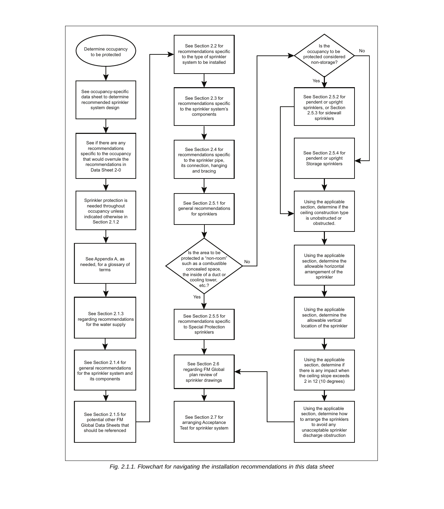
- 先確認欲防護之用途（occupancy）——若為非儲存用途，見 2.5.2（懸掛式／直立式撒水頭）或 2.5.3（側牆型撒水頭）；若為儲存用途，見 2.5.4（儲存用懸掛式／直立式撒水頭）
- 見 2.2 節決定欲安裝之撒水系統類型；見 2.3 節決定系統組件；見 2.4 節決定撒水配管、接頭、吊掛與抗震支撐
- 見 2.1.2 節，除非另有規定，否則整個用途區域皆須設置撒水頭；並確認是否有用途別特定建議可能推翻本資料表之一般建議
- 若防護區域為「非房間（non-room）」，如可燃隱蔽空間、風管內部或冷卻水塔內部，見 2.1.3 節（水源）及 2.5.5 節（特殊防護撒水頭）
- 依適用章節判斷天花板構造為無阻礙型或有阻礙型，據以決定撒水頭之允許水平配置、垂直位置；並判斷天花板坡度超過 2:12（10 度）時之影響，以及如何佈置撒水頭以避免不可接受之放水阻礙
- 另見 2.1.4 節（系統與組件一般建議）、2.1.5 節（其他相關資料表）、2.6 節（FM Global 圖說審查）、2.7 節（驗收測試安排），以及附錄 A 之名詞解釋
2.1.2何處需要撒水頭防護
- 2.1.2.1 應依本資料表於建築物所有部分裝設撒水頭，以防護其免於火災損害
- 2.1.2.2 若建築物某區域之構造與用途內容物皆為不燃性，該區域可省略撒水頭防護
- 2.1.2.3 撒水系統之設計基準（含系統設計、消防栓用水量、系統延時）見相關用途別資料表；並確認該資料表是否有可能推翻本資料表一般建議之特定規定
- 2.1.2.4 固定式特殊防護滅火系統（含降氧系統 oxygen reduction systems）並非撒水防護之替代方案，除非相關用途別資料表明確指出可替代
2.1.3撒水系統之水源
2.1.3.1 每一撒水系統應至少設置一組可靠水源，其流量與壓力須能滿足該用途危害之總需求（天花板、貨架內、消防栓用水）及延時，詳見 Data Sheet 3-29「消防水源可靠性」。2.1.3.2 水源配管網應依 Data Sheet 3-10「私設消防水管及其連接」佈置。
相關 3 系列資料表（2.1.3.3）
- Data Sheet 3-1 併接公共給水之水槽與蓄水池
- Data Sheet 3-2 消防用水塔
- Data Sheet 3-4 土堤支撐式軟性水槽
- Data Sheet 3-6 消防用襯砌式土質蓄水池
- Data Sheet 3-7 消防幫浦
其他一般規定
- 2.1.3.4 民生用水可自撒水系統水源分接，惟其接管點須位於撒水立管水流警報器與消防水帶接口兩者上游
- 2.1.3.5 接通撒水系統前，應將供應立管之地下主管與引入管完全沖洗至水質清澈；多水源或環狀系統應視需要關閉分區閥，使各單一管段達高流速沖洗
2.1.3.5 可接受之最低沖洗流量為下列三者之一：(A) 系統含消防栓需求之水力計算需水量；(B) 依 Table 2.1.3.5 達 10 ft/sec (3 m/sec) 流速所需流量；或 (C) 火災狀況下系統可取得之最大流量。
| 管徑，in. (mm) | 流量，gpm | 流量，L/min |
|---|---|---|
| 4 (100) | 390 | 1475 |
| 6 (150) | 880 | 3330 |
| 8 (200) | 1560 | 5905 |
| 10 (250) | 2440 | 9235 |
| 12 (300) | 3520 | 13325 |
Table 2.1.3.5 地下主管達 10 ft/sec (3 m/sec) 流速所需之沖洗流量
2.1.4撒水系統與其組件之一般建議
- 2.1.4.1 僅得安裝全新且 FM Approved（如有）之撒水系統組件
- 2.1.4.2 每一組件之應用應符合：(A) Approval Guide 之列名內容；(B) 製造商安裝說明；(C) 相關用途別資料表；(D) 任何轄區特定要求
- 2.1.4.3 確保各組件彼此相容，且與安裝環境相容，包括預期最高內部壓力，以及最低與最高周溫
2.1.4.4 適用之撒水系統組件包括但不限於：撒水頭與其化妝蓋、系統閥件（濕式警報逆止閥、乾式閥、水幕閥等）及其附件、系統控制閥、逆止閥（含防逆流閥）、水流警報器、測試接頭、壓力錶、消防水帶接口、排水閥、洩壓閥、減壓閥、撒水配管、配管接頭與組件、配管吊掛與抗震支撐。
2.1.5其他相關資料表
除本資料表外，下列資料表亦可能影響自動撒水系統之安裝與設計：
- Data Sheet 1-20 建築物外部火災暴露防護——用於大型充油變壓器、外部裝卸區、露天儲存等鄰近有（或需要）撒水防護建築物之外部危害，其暴露防護撒水頭安裝建議
- Data Sheet 1-57 建築中之塑膠材料——判斷引入塑膠建材時可能需要之撒水補充防護
- Data Sheet 2-1 自動撒水系統之腐蝕——用於腐蝕性、低溫或高溫等非典型環境之配管內部防蝕
- Data Sheet 2-8 水系消防系統耐震防護——用於 50 年至 500 年地震分區（依 Data Sheet 1-2 定義）之系統
- Data Sheet 2-81 消防安全檢查與撒水系統維護——系統安裝完成後之維護保養建議
- Data Sheet 3-26 非儲存用途之消防防護——大多數非儲存用途危害之系統設計
- Data Sheet 8-1 商品分類——一般倉儲環境常見產品之分類
- Data Sheet 8-9 第 1、2、3、4 類及塑膠商品之儲存——大多數儲存用途危害之系統設計
2.2 撒水系統類型
2.2.1系統類型之一般建議
2.2.1.1 系統選型：見相關用途別資料表確認可安裝之系統類型是否受限；若該資料表指定特定系統類型，見 2.2 節相對應之子節；若未指定，見 2.2.2–2.2.9 節判斷何種系統適用於該防護區域。2.2.1.2 組件與環境相容性：於腐蝕性、低溫或高溫等非典型環境，應於 Approval Guide 查詢可用之組件。
2.2.1.3建議之系統設計與水力計算
用途別資料表未提供 Hazen-Williams C 值（管粗糙係數）建議時，採 Table 2.2.1.3.3 之預設值：
| 系統類型 | 配管材質／特殊條件 | Hazen-Williams C 值 |
|---|---|---|
| 濕式 | 黑鐵管 / 聚合物強化管 / 塑膠管 | 120 / 140 / 150 |
| 乾式或預動作式 | 黑鐵管（一般）／黑鐵管＋惰性氣體如氮氣／內鍍鋅管／聚合物強化管 | 100／120／120／140 |
| 冷凍區式 | 黑鐵管（一般）／黑鐵管＋周溫恆維持 ≤20°F (-7°C)／黑鐵管＋惰性氣體／內鍍鋅管／聚合物強化管 | 100／120／120／120／140 |
| 真空式 | 黑鐵管（一般）／符合 2.2.1.3.4 建議／周溫恆 ≤20°F (-7°C)／內鍍鋅管／聚合物強化管 | 100／120／120／120／140 |
2.2.1.3.4 真空式系統之 C 值可採 120，前提為配管佈置符合：(A) 全系統為單一路徑流動（無迴路或格柵狀）；(B) 水源可滿足最大建議送水時間（如適用）；(C) 符合 2.2.1.4 節建議；(D) 接管方式可避免積水；(E) 支管與主管皆有適當坡度以避免系統內積水。
2.2.1.3.5 應於系統閥處張貼硬式設計資料標示牌，至少載明：防護區域名稱、用途危害分類、撒水頭識別編號（SIN）、撒水頭公稱動作溫度、最大間距、設計面積內撒水頭數量、最低設計壓力、立管底部所需流量與壓力、消防栓用水量、安裝承包商名稱。2.2.1.3.6 防凍液系統另須依 2.2.8.3 節補充標示牌資訊。
2.2.1.4系統最大防護面積
- 濕式天花板層系統：僅受水力計算需求及 2.3.3 節水流警報器要求限制
- 乾式天花板層系統：受水力計算需求及系統設計之送水時間限制
- 貨架內系統（濕式或乾式）：貨架佔用樓地板面積（含走道）上限 40,000 ft² (3,715 m²)，不論貨架內撒水層數
2.2.1.5配管佈置方式
濕式與水幕（deluge）系統之配管可為單一路徑流動、環狀（looped）或格柵狀（gridded）。乾式、預動作式、冷凍區式或真空式系統，配管須為單一路徑流動（無迴路或格柵），並可滿足最大建議送水時間及 2.2.1.4 節之面積限制；惟非儲存用途之乾式與預動作式系統，其配水主管（feed main）／橫走主管（cross main）可為環狀。
2.2.1.7沖洗佈置
所有系統應於橫走主管、近端與遠端主管末端設置可拆卸接頭（沖洗接頭），最小直徑 1.25 in. (32 mm)。格柵狀系統之支管應使一端可用簡易接頭或撓性接頭拆卸（見 Fig. 2.2.1.7.2），或安裝 FM Approved 支管測試器等具同等效果之佈置方式，以利沖洗作業。
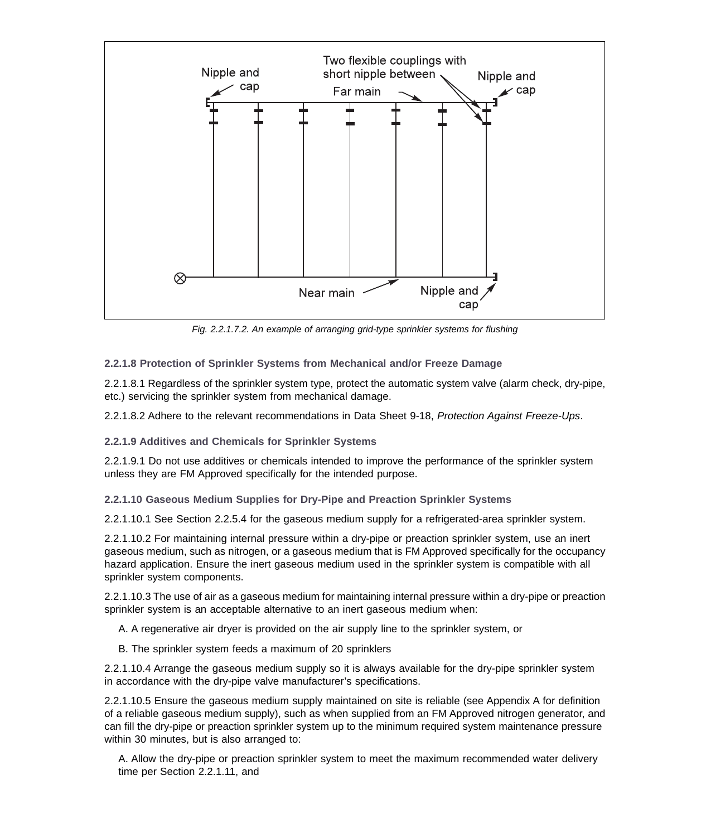
2.2.1.10乾式與預動作式系統之氣體介質供應
- 系統維壓宜使用惰性氣體（如氮氣）或經 FM Approved 之特定氣體介質，並確保與所有組件相容
- 使用空氣作為介質之可接受條件：(A) 供氣管路裝有再生式空氣乾燥機；或 (B) 系統防護撒水頭數 ≤20 個
- 氣體供應須依乾式閥製造商規格，隨時可用；可靠氣體供應（如 FM Approved 氮氣產生器）須能於 30 分鐘內將系統充填至最低所需維護壓力，同時仍滿足最大建議送水時間，且不得超過系統最大建議氣體維持壓力
- 氣體供應與乾式／預動作閥間應裝逆止閥；供應與系統間應裝洩壓閥，設定於系統最大建議維持壓力再加 5 psi (0.3 bar)時洩放
2.2.1.11送水時間（Water Delivery Time）
除水幕系統外，用途別資料表未指定最大送水時間時，採下列之一：(A) 最遠單一撒水頭動作、60 秒；(B) 非儲存用途最遠支管最遠 2 個撒水頭動作、50 秒；(C) 儲存用途、天花板有阻礙構造，最遠支管最遠 2 個撒水頭動作、40 秒；(D) 儲存用途、天花板無阻礙構造，最遠 2 支支管共 4 個撒水頭動作、40 秒。水幕系統未指定時，最大送水時間為 30 秒。經驗顯示，為達成上述送水時間，系統規模宜限制在約 10,000–12,000 ft² (930–1,115 m²)。
2.2.1.12預動作、冷凍區、真空、水幕系統之啟動
此類系統之火警偵測（熱感知或偵煙）與火警受信總機，應依 Data Sheet 5-48「自動火災偵測」、相關用途別資料表及以下建議設置：
- 每一系統應設置一台受信總機；一台總機可啟動多套系統，惟須各自具備獨立釋放模組，且各模組可獨立隔離監控，電池備援須能供應每套連接系統 90 小時電力
- 預動作系統須可自動與手動兩種方式啟動，並提供火災時可手動啟動預動作／水幕閥之易達裝置
- 真空系統於單一連鎖或雙重連鎖設定下，不得因真空過度損失而設計為「失效即開（fail-safe open）」
- 熱感知裝置除相關用途別資料表另有規定外，應採用定溫式、升溫速率式或兩者併用型；除經用途別資料表特別允許外，不建議採用火焰式偵測
- 冷凍區系統僅得使用定溫式熱感知，不得使用引示型撒水頭（pilot sprinklers）；若熱感知為氣動式，其氣體介質須與撒水系統氣體介質相互獨立
- 偵測迴路採單迴路 Class A 配線；每一撒水系統應設置獨立偵測系統
天花板層熱感知或偵煙感知之間距，依天花板構造為無阻礙或有阻礙而異：無阻礙且平滑天花板依 Approval Guide 列名間距裝設；無阻礙非平滑天花板，熱感知間距不超過列名最大間距 50%，或採與天花板撒水頭相同間距；偵煙感知則平滑天花板 30 ft (9.1 m)、非平滑天花板 15 ft (4.6 m)。有阻礙天花板應於每一結構樑柱形成之通道內裝設感知器。貨架內撒水頭之啟動偵測，應採與貨架內撒水頭相同之水平間距與垂直位置。
2.2.2濕式系統（Wet-Pipe Sprinkler Systems）
一般建議見 2.2.1 節。2.2.2.2 僅適用於防護區域周溫恆維持於 40°F (4°C) 至 200°F (95°C) 之間之場所。2.2.2.3 可安裝懸掛式、側牆型及直立式撒水頭（標準型與延伸涵蓋型）；乾式懸掛型、乾式側牆型與乾式直立型撒水頭亦可安裝於濕式系統，惟連接乾式撒水頭之管段須依製造商說明採取防凍措施。
2.2.3乾式系統（Dry-Pipe Sprinkler Systems）
2.2.3.2 適用時機：防護區域周溫可能低於 40°F (4°C) 或高於 200°F (95°C)。惟當周溫恆低於 20°F (-7°C) 且用途為儲存時，應改採 冷凍區式系統（2.2.5 節）而非乾式系統。2.2.3.3 僅得安裝直立型或乾式型撒水頭（乾式直立型、乾式側牆型）；除用途別資料表另有規定外，應安裝標準反應型、公稱 280°F (140°C) 動作溫度撒水頭。
2.2.3.6 安裝加速器（accelerator）時，須確認 Approval Guide 列名其與所用乾式閥相容，並依製造商說明安裝，包括：加速器與立管連接處應高於閥門與加速器復位時預期之積水（引示水與回流水）水位（除非加速器設計已可防止其節流孔與其他運作零件被淹沒）；立管與加速器間應裝設指示型控制閥及 FM Approved 防淹裝置（內建防淹裝置者除外）；加速器與乾式閥中間腔室間應裝逆止閥（若加速器需壓力回饋，可改用指示型閥）。
2.2.4預動作系統（Preaction Sprinkler Systems）
2.2.4.2 適用時機：周溫可能低於 40°F (4°C)，或高於 200°F (95°C)；或周溫介於 40–200°F 之間，惟須採用單一連鎖式（single-interlock）預動作系統並依 2.2.1.12 節設置啟動偵測。周溫恆低於 20°F (-7°C) 且用途為儲存者，應改用冷凍區式系統。2.2.4.3 僅得安裝直立型或乾式型撒水頭（乾式懸掛型、乾式直立型、乾式側牆型）；若防護區域不受凍結影響，且配管內部為鍍鋅（或同等塗層）或依 2.2.1.10 節充填惰性氣體者，亦可安裝懸掛型撒水頭。除用途別資料表另有規定外，應安裝標準反應型、公稱 280°F (140°C) 撒水頭；惟單一連鎖式系統若可視為濕式系統設計者，應安裝公稱 160°F (70°C) 撒水頭。2.2.4.4 預動作閥下游水路中不得安裝其他系統閥（如乾式閥或水幕閥）或逆止閥。
2.2.5冷凍區系統（Refrigerated-Area Sprinkler Systems）
2.2.5.1 除本節另有修改或補充者外，應依雙重連鎖式（double-interlock）預動作系統（2.2.4 節）之建議設置。2.2.5.2 適用於防護區域周溫恆維持低於 20°F (-7°C) 且用途為儲存之場所。
2.2.5.3 配水主管配管應能於通過「加溫空間→冷凍空間」交界處輕易拆卸，以便檢查是否形成冰塞（見 Fig. 2.2.5.3.1）；每一立管應設置 2 in. (50 mm) 試驗排放管，配平時關閉閥及其下游常開之試驗控制閥。
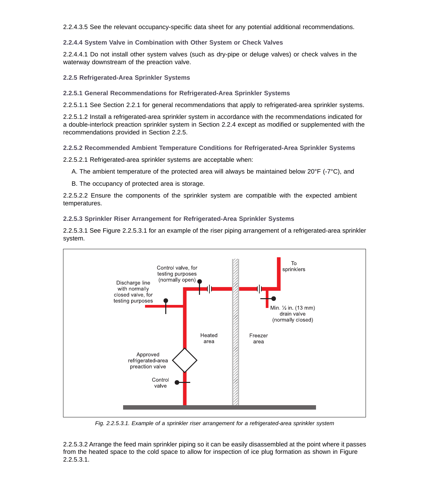
2.2.5.4 氣體介質宜採惰性氣體（如氮氣）維壓。若採空氣，須設置適當容量之 FM Approved 冷凍區專用乾燥空氣機組，或設置適當容量之除濕機／再生式空氣乾燥機，並使乾燥空氣經可拆卸之雙迴路管線送至配水主管以利冰塞檢查與清除；各迴路管線暴露外表面積須達 0.7 ft²/scfm (0.038 m²/(m³/h)) 以上，管線最小長度須達其公稱直徑之 30 倍以上，並以裝有逆止閥之回彎接頭連接主管。氣體供應之壓力露點須維持較防護區域周溫低 20°F (11°C)；供應須能於 30 分鐘內充填至最低維護壓力，並比照 2.2.1.10 節設置逆止閥與洩壓閥（洩放設定為維持壓力再加 5 psi/0.3 bar）。
2.2.6真空系統（Vacuum Sprinkler Systems）
2.2.6.1 除本節修改或補充者外，依預動作系統（2.2.4 節）之建議設置。2.2.6.2 僅得安裝經 FM Approved 專用於真空系統之直立型或乾式型撒水頭；若防護區域周溫恆維持 40°F (4°C) 以上，亦可安裝經 FM Approved 專用於真空系統之懸掛型撒水頭。視系統設計基準為乾式或濕式系統，分別安裝公稱 280°F (140°C) 或 160°F (70°C) 撒水頭（除用途別資料表另有規定）。
2.2.7水幕系統（Deluge Sprinkler Systems）
2.2.7.1 除本節修改或補充者外，依預動作系統（2.2.4 節）之建議設置。2.2.7.2 應使用已移除感熱元件與孔口蓋、且適用於該防護危害之 FM Approved 撒水頭，或適用於該防護危害之 FM Approved 開放式噴頭（open spray nozzles）。2.2.7.3 配管佈置須能滿足系統最大建議送水時間及 2.2.1.4 節之建議。
2.2.8防凍液系統（Antifreeze Solution Sprinkler Systems）
2.2.8.1 應使用 FM Approved 防凍液，並依 Approval Guide 列名內容使用；除用途別資料表另有規定外，防凍液系統於設計上視為濕式系統；所有組件須與所用防凍液相容。
| 防凍液種類 | 濃度（體積百分比） | 對應最低周溫，°F (°C) |
|---|---|---|
| Diethylene Glycol 二甘醇 | 50 / 55 / 60 | 0 (-18) / -15 (-26) / -30 (-35) |
| Ethylene Glycol 乙二醇 | 39 / 44 / 49 / 53 | 0 (-18) / -10 (-23) / -20 (-29) / -30 (-35) |
| Glycerin 甘油（C.P. 或 U.S.P. 96.5） | 40 / 50 / 60 / 70 | 15 (-10) / 0 (-18) / -20 (-29) / -30 (-35) |
| Propylene Glycol 丙二醇 | 30 / 40 / 50 / 60 | 20 (-7) / 5 (-15) / -15 (-26) / -50 (-46) |
2.2.8.2.3 防護面積超過 2,000 ft² (185 m²) 時，非 FM Approved 防凍液系統於下列條件下仍可接受：(A) 周溫恆 ≥32°F (0°C)：採丙二醇 20–25% 或甘油 30–35%；(B) 周溫恆 ≥25°F (-4°C)：採丙二醇 25–30% 或甘油 35–40%。2.2.8.2.4 防凍液應預先調配並驗證其濃度後方可注入系統。2.2.8.2.5 接通自來水（潔淨水）水源之防凍液，須為主管機關可接受者。
2.2.8.3 系統應張貼標示牌，載明防凍液種類、濃度百分比、所需容量及設計所依據之最低周溫。
2.2.8.4 接自潔淨水源者，供水配管、防逆流閥與膨脹室應依 Fig. 2.2.8.4.1 佈置；膨脹室容量須為預期最大熱膨脹量之 1.5 倍並與防凍液相容。接自非潔淨水源者，可依同圖佈置，或以「附 1/32 in. (0.8 mm) 孔逆止閥」取代防逆流閥，此時膨脹槽可省略。
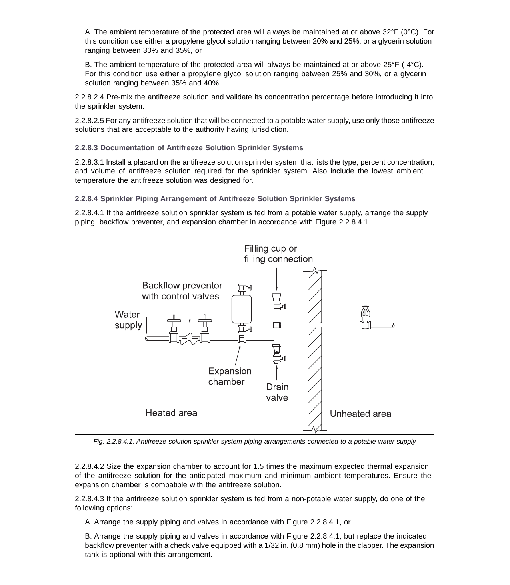
2.2.9暴露防護系統（Exposure-Protection Sprinkler Systems）
暴露防護系統依其啟動方式與噴頭型式，分別比照下列系統之建議辦理：
| 噴頭／啟動方式 | 比照之系統建議 |
|---|---|
| 閉鎖型撒水頭或自動噴頭，以乾式系統方式啟動 | 乾式系統（2.2.3 節） |
| 閉鎖型撒水頭或自動噴頭，以預動作系統方式啟動 | 預動作系統（2.2.4 節） |
| 開放型撒水頭或開放式噴頭 | 水幕系統（2.2.7 節） |
2.2.9.4 應查閱 Approval Guide，確認所選撒水頭經 FM Approved 適用於欲防護之危害類型。
2.3 系統元件（Sprinkler System Components）
2.3.1控制閥（Control Valves）
2.3.1.1 每一撒水系統至少應設置一個控制閥。2.3.1.2 控制閥之配置應確保於火災發生時，以及進行測試、檢查與維護時皆可隨時到達並操作，並依下列優先順序選擇（詳原文 Fig. 2.3.1.2 之配置示意）：
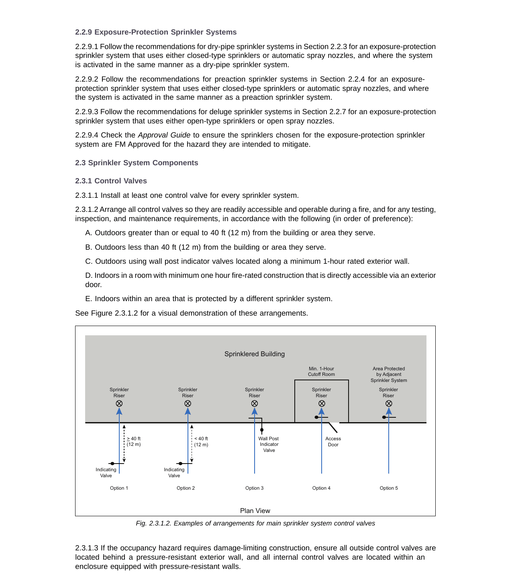
- 室外，距離所防護建築物或區域 ≥40 ft (12 m)
- 室外，距離所防護建築物或區域 <40 ft (12 m)
- 室外，採壁式指示閥（wall post indicator valve），設置於至少 1 小時防火時效之外牆沿線
- 室內，位於具至少 1 小時防火時效構造、且可由室外門直接進入之房間內
- 室內，位於由另一撒水系統防護之區域內
2.3.1.3 若用途危害需要抗爆（damage-limiting）構造，所有室外控制閥應設於耐壓外牆後方，室內控制閥則應設於具耐壓牆之封閉空間內。2.3.1.4 應提供標示方式，以辨識每一控制閥所影響之廠區範圍。
2.3.2逆止閥（Check Valves）
2.3.2.1 每一撒水系統至少應裝設一個逆止閥；裝設警報逆止閥（alarm check valve）、乾式閥、預動式閥、開放式（deluge）閥或防止逆流裝置（backflow preventer）均可滿足此項建議。2.3.2.2 FM 認可之逆止閥可依其認可清單（Approval Guide）所載，安裝於垂直或水平位置。2.3.2.3 除各用途別資料表另有規定外，逆止閥可裝設於配備乾式或預動式系統閥之立管上。2.3.2.4 除各用途別資料表另有規定外，不得將逆止閥裝設於乾式或預動式系統立管下游（如送水主管、橫走主管等）。2.3.2.5 當 AHJ 要求裝設防止逆流裝置時，參見 Data Sheet 3-10《私設消防水管及其連接》。
2.3.3水流警報裝置（Waterflow Alarms）
- 每一撒水系統至少應裝設一個於系統內產生水流時啟動之警報裝置（2.3.3.1）
- 撒水頭動作（即水流警報裝置下游最遠端之查驗試驗接頭開啟）後，警報訊號應於不超過 60 秒內發出（2.3.3.2）
- 防護面積 ≥2,000 ft² (185 m²) 之撒水系統，水流警報裝置至少應提供現場（local）通報（2.3.3.3）
- 採用葉片式（vane-type）水流警報裝置時，其可裝設之最小公稱撒水管徑為 2 in. (50 mm)（2.3.3.4）
- 相關監控補充建議見 Data Sheet 9-1《財產監控》與 Data Sheet 5-40《火警系統》（2.3.3.5）
2.3.4查驗試驗與旁通試驗接頭
查驗試驗接頭（Inspector's Test Connection，2.3.4.1）
2.3.4.1.1 裝有水流警報裝置之撒水系統下游應裝設查驗試驗接頭；2.3.4.1.2 防凍液系統或開放式（deluge）系統則免設。2.3.4.1.3 下列系統類型之查驗試驗接頭應設於系統水力最遠端：
- 採特定送水時間設計之乾式系統
- 非連鎖式（non-interlock）預動式系統
- 未依濕式系統設計配置之單連鎖式（single-interlock）預動式系統
- 雙連鎖式（double-interlock）預動式系統
- 冷凍庫用撒水系統
- 真空式撒水系統
2.3.4.1.4 不屬上述類型之系統，查驗試驗接頭得設於水流警報裝置下游任何位置。設計以 2 顆撒水頭（最遠分支管）或 4 顆撒水頭（最遠 2 條分支管）動作為基準者，其查驗試驗接頭配置範例參見原文 Fig. 2.3.4.1.5(a)/(b)（2.3.4.1.5），配置上均採 90° 常閉快速開啟閥搭配立管處之快速開啟閥。
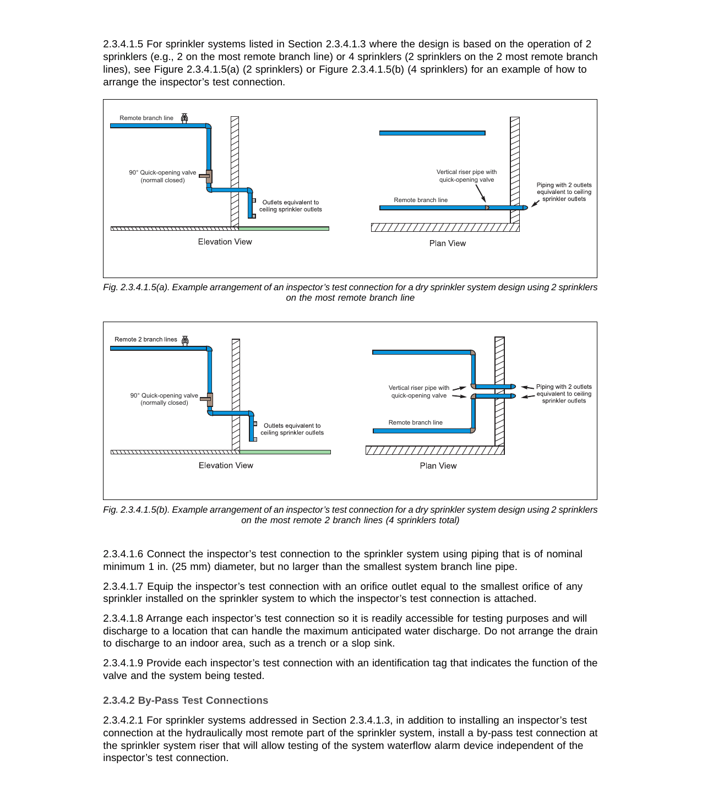
- 查驗試驗接頭配管公稱管徑最小 1 in. (25 mm)，且不得大於該系統最小分支管管徑（2.3.4.1.6）
- 孔口出口尺寸應等於該系統所裝撒水頭中最小孔口尺寸（2.3.4.1.7）
- 應設於便於測試之處，並排放至可承受最大預期排水量之場所；不得排放至室內（如集水溝、污水槽）（2.3.4.1.8）
- 應附識別標籤，標示閥件功能及所屬受測系統（2.3.4.1.9）
旁通試驗接頭（By-Pass Test Connection，2.3.4.2）
2.3.4.2.1 屬 2.3.4.1.3 所列系統類型者，除於系統最遠端設置查驗試驗接頭外，應另於系統立管處設置旁通試驗接頭，以便獨立於查驗試驗接頭測試水流警報裝置。2.3.4.2.2 裝有水流警報裝置之防凍液系統，亦應於立管處設置旁通試驗接頭。2.3.4.2.3 每一旁通試驗接頭應附識別標籤，標示閥件功能。
2.3.5壓力表（Pressure Gauges）
2.3.5.1 壓力表額定值至少應為裝設地點預期靜壓之 2 倍。2.3.5.2 至少應於下列位置裝設壓力表：
- 警報逆止閥、乾式閥或預動式閥之上、下游兩側
- 無警報逆止閥／乾式閥／預動式閥時，撒水立管上逆止閥之上、下游兩側
- 供應開放式撒水頭之自動系統閥上游側
- 供應乾式與預動式系統之空氣源
- 乾式系統之空氣儲罐與空氣泵浦供應源（如有裝設）
- 乾式或預動式系統之加速器（accelerator），用以顯示加速器處之空氣壓力
2.3.5.3 開放式（deluge）或暴露防護型撒水系統，應於最遠端撒水頭附近提供壓力表連接口。2.3.5.4 所有系統壓力表應裝設於便於目視檢查、測試與維護之處。
2.3.6送水口（Fire Service Connections）
2.3.6.1 每一撒水系統應裝設送水口，並設於鄰近所供應系統之外牆（或等效位置）沿線。2.3.6.2 經 AHJ 同意，單一送水口可接於消防泵浦下游之地下廠區主管，供應所有由該廠區主管供水之撒水系統（配置方式另見 Data Sheet 3-10《私設消防水管及其連接》）。
依系統類型之送水口接管位置（2.3.6.3–2.3.6.5，範例參見原文 Fig. 2.3.6）：
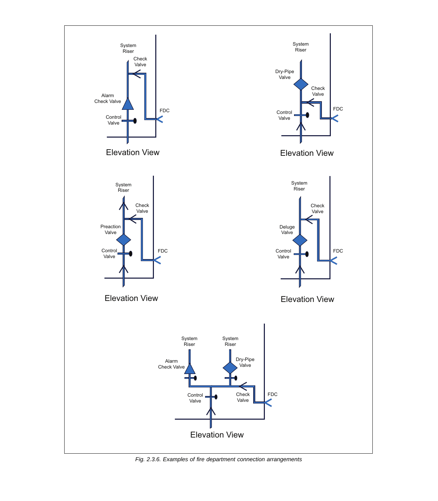
| 系統類型 | 送水口接管位置 |
|---|---|
| 個別濕式、預動式或開放式（deluge）系統 | 接於系統閥下游側 |
| 個別乾式系統 | 於立管上、乾式閥上游另裝一逆止閥，送水口接於系統閥與該逆止閥之間 |
| 多套濕式／乾式系統共用集管立管（manifolded riser） | 集管裝有位於送水口上游之逆止閥時，送水口可接於集管上 |
2.3.6.6 供應 8 in. (200 mm) 以下立管，送水口最小 4 in. (100 mm)；供應大於 8 in. (200 mm) 立管，送水口最小 6 in. (150 mm)。2.3.6.7 送水口之接頭與內部連接件應與當地消防單位裝備相容。2.3.6.8 應於所有送水口處提供標示牌，標明所供應之撒水系統。2.3.6.9 經 AHJ 裁量，送水口得予省略。
2.3.7排水閥（Drain Valves）
- 每一撒水系統立管應裝設最小 2 in. (50 mm) 排水閥（2.3.7.1）
- 應設於便於操作、測試與維護之處（2.3.7.2）
- 應排放至可承受最大預期排水量之室外場所，不得排放至室內（如集水溝、污水槽）（2.3.7.3）
- 應附識別標籤，標示閥件功能（2.3.7.4）
2.3.8洩壓閥（Pressure Relief Valves）
2.3.8.1 當撒水配管周遭環境溫度可能超過 120°F (50°C) 時，每一格柵式（gridded）濕式系統應裝設不小於 1⁄4 in. (6 mm) 之洩壓閥或等效洩壓裝置，其動作壓力應設定為系統各元件中最低之最高額定工作壓力。2.3.8.2 洩壓閥應排放至安全處所（通常排入主排水管線）。2.3.8.3 濕式系統採用內部鍍鋅鋼管者，應於系統高點裝設洩壓閥，並直接排放至室外。
2.3.9減壓閥（Pressure Reducing Valves）
2.3.9.1 撒水系統設計應盡可能避免需要使用減壓閥。2.3.9.2 若 AHJ 要求且無法避免裝設減壓閥，應使用 FM 認可之減壓閥，並依 Data Sheet 3-11《消防用流量與壓力調節裝置》辦理安裝。
2.3.10孔口限流板（Orifice Restriction Plates）
2.3.10.1 撒水系統內不得裝設孔口限流板（orifice plate）。
2.3.11自動破管阻斷閥（Automatic Breach Containment Valves）
自動撒水系統不得裝設自動破管阻斷閥。若當地 AHJ 要求裝設，參見 Data Sheet 3-11《流量與壓力調節裝置》。
2.4 撒水系統配管（Sprinkler System Piping）
2.4.1.1鋼製撒水配管（Steel Sprinkler Pipe）
2.4.1.1.1.1 撒水系統配管（即輸水至撒水頭之管路）最小管徑為 1 in. (25 mm)。2.4.1.1.1.2 無論選用何種管徑，均應以水力計算證實滿足相關用途別資料表所定之最低設計要求。
管壁厚度要求
2.4.1.1.2.1 於對水損敏感之用途場所（如資料中心、博物館展區、半導體廠等），應裝設不低於下表最小管壁厚度之鋼管：
| 公稱管徑 in. (mm) | 最小管壁厚度 in. (mm) |
|---|---|
| 1 (25) | 0.126 (3.2) |
| 1-1/4–1-1/2 (32–40) | 0.126 (3.2) |
| 2 (50) | 0.142 (3.6) |
| 2-1/2–4 (65–100) | 0.188 (4.0–4.5) |
| 5 (125) | 0.197 (5.0) |
| 6 (150) | 0.219 (5.0) |
| 8 (200) | 0.277 (6.3) |
| 10 (250) | 0.307 (6.3) |
| 12 (300) | 0.330 (7.1) |
濕式／開放式（deluge）系統（2.4.1.1.2.2）
- 黑鐵管（black steel），或
- 耐內部氧化之撒水鋼管
其他類型系統（2.4.1.1.2.3）
- 耐內部氧化之撒水鋼管，或
- 黑鐵管——限系統氣體介質符合 2.2.1.10 規定者（真空式系統除外）
乾式／預動式／冷凍庫／真空式系統之配管坡度（2.4.1.1.3）
2.4.1.1.3.1 乾式與預動式系統配管應能排回系統主要 2 in. (50 mm) 立管排水口：分支管最小坡度 1/2 in. per 10 ft (4 mm/m)，其餘配管最小坡度 1/4 in. per 10 ft (2 mm/m)。2.4.1.1.3.2 無法排回系統主排水口之管段，應設置輔助排水設施（或等效方式），將積水排至安全區域。
鋼管彎曲（2.4.1.1.4）
2.4.1.1.4.1 任何尺寸之撒水鋼管，於下列條件下均可彎曲：管壁厚度 ≥0.100 in. (2.6 mm)；彎曲最小半徑為 12 倍管徑；且彎曲後管體仍維持圓形。2.4.1.1.4.2 彎曲半徑小於 12 倍管徑者，管體仍須維持圓形，且管壁厚度須符合下表（節錄自 Table 2.4.1.1.4.2）：
| 公稱管徑 in. (mm) | 最小管壁厚度 in. (mm) | 容許最小彎曲半徑（倍管徑） |
|---|---|---|
| 1 (25) | 0.125 (3.2) | 6 |
| 1-1/4–2 (32–50) | 0.140–0.155 (3.6–4.0) | 6 |
| 2-1/2–4 (65–100) | 0.195–0.235 (5.0–6.0) | 5 |
| 5–12 (125–300) | 0.250–0.405 (6.3–10.3) | 5 |
配管保護（2.4.1.1.5）
- 爆炸危害場所之配管安裝，另見 Data Sheet 7-14《化學工廠消防》（2.4.1.1.5.1）
- 縱向電焊黑鐵管，可行時應使焊縫線相對地面旋轉至少 45° 安裝，以降低管內加速腐蝕之風險（地面正下方 0° 為焊縫指向地面之基準）；FM 認可之縮徑輾軋製程（stretch-reduced mill）鋼管則不受此焊縫方向限制（2.4.1.1.5.2）
- 所有撒水配管管端應保持平滑，不得有毛邊或飛邊（2.4.1.1.5.3）
- 不得於撒水配管上懸掛任何物品，包括電纜線槽、風管、揚聲器或標示牌（2.4.1.1.5.4）
2.4.1.2可撓式撒水鋼管（Flexible Steel Sprinkler Pipe）
使用可撓式金屬配管時，應確認為 FM 認可品且與所防護危害相容；安裝應依製造商指引辦理，管長之摩擦損失分析亦應參照其指引（2.4.1.2.1）。
2.4.1.3非金屬撒水配管（Non-Metallic Sprinkler Pipe）
2.4.1.3.1 地震區域使用非金屬撒水配管之限制，另見 Data Sheet 2-8《水系消防系統耐震防護》。2.4.1.3.2 非金屬撒水配管僅限用於非儲存類用途場所。2.4.1.3.3 所有非金屬撒水配管應以至少 15 分鐘防火時效、固定不可拆卸之屏障加以遮蔽。
2.4.1.3.4 非金屬配管可不加遮蔽（暴露）之條件，須同時滿足：
- 該非金屬配管經 FM 認可特別列名可作為暴露配管使用
- 用途危害屬 Data Sheet 3-26《非儲存用途消防》所定之 HC-1
- 防護區域最大天花板高度 30 ft (9.1 m)
- 系統為濕式系統
- 天花板撒水頭為快速反應型
- 系統垂直管段為金屬材質——惟若垂直管段由快速反應直立式撒水頭防護，且該撒水頭與垂直管段水平距離 ≤1 ft (0.3 m)，垂直管段亦可為暴露非金屬配管
2.4.1.3.5 公稱管徑 3 in. (90 mm) 以上之非金屬配管，若僅作為撒水立管使用，可予接受。
2.4.2配管接頭與組件（Pipe Connections and Assemblies）
2.4.2.1.1 連接兩不同管徑之撒水配管時，應使用 FM 認可之一體成型異徑接頭。2.4.2.1.2 撒水配管接頭（如機械式三通）不得突出於配管流路內。
螺紋、溝槽與焊接接頭（2.4.2.2）
螺紋式（threaded）、輾軋溝槽（roll-grooved）、切削溝槽（cut-grooved）或焊接式撒水配管之建議最小管壁厚度，依原文 Table 2.4.2.2.1(1)/(2) 依公稱管徑分列兩欄（溝槽／焊接管；螺紋／切削溝槽管），管徑愈大兩者差異愈明顯，例如 1 in. 管溝槽／焊接管最小壁厚 0.102 in.（搭配指定接頭時可低至 0.065 in.）、螺紋／切削溝槽管則需 0.133 in.；6 in. 管則分別為 0.158 in. 與 0.280 in.；12 in. 管分別為 0.220 in. 與 0.330 in.（2.4.2.2.1）。
- 螺紋接頭：螺紋加工應依當地法規並與配管接頭螺紋相容；所有螺紋接頭之外螺紋應依製造商指引塗布填料膏、生料帶或等效密封材，且不得影響公母螺紋之完全嚙合（2.4.2.2.2）
- 溝槽接頭：溝槽尺寸須符合溝槽式接頭製造商之要求；除配管認可清單另有規定外，應於鍍鋅或塗裝前先行輾軋溝槽（2.4.2.2.3）
- 焊接接頭：應使用 FM 認可之焊接接頭與焊接構造；焊接方法與人員資格須符合最新版 ANSI/AWS B2.1 或 EN ISO 9606-1 或同等標準之最低要求；管端對接焊（butt-weld）符合可接受焊接方法者，得免用接頭；現場熱工作業應依 Data Sheet 10-3《動火管理》辦理；應確保焊接環境不致影響焊接品質；配管開孔尺寸應與接頭尺寸相同且無毛邊；所有自配管切除之料片（coupon）應於系統通水啟用前完全移除並留存紀錄（2.4.2.2.4）
平口端接頭（2.4.2.3）
撒水配管管壁厚度 小於 0.133 in. (3.38 mm) 時，應使用經 FM 認可、專為平口端或類似接頭列名之撒水配管（2.4.2.3.1）；平口端接頭扣件之正確扭力應依製造商安裝指引確認（2.4.2.3.2）。
2.4.3配管吊架與支撐（Pipe Hanging and Bracing）
吊架及其組件（2.4.3.1）
2.4.3.1.1 吊架、吊架組件（支柱、吊桿、托架、扁鐵、焊接接合、扣件等）及其與建築結構之連接組件（混凝土崁入件、後裝式混凝土錨栓、焊接、束環、螺栓、螺絲等）均應為 FM 認可品。2.4.3.1.2 補強吊架與扣件固定之輔助組件（如吊桿、角鋼）應為鐵系金屬，並與安裝環境相容。
2.4.3.1.3 以鋼吊桿連接吊架與扣件時，最小吊桿直徑與螺紋嚙合長度應依所支撐撒水管徑決定（節錄自 Table 2.4.3.1.3）：
| 公稱撒水管徑 in. (mm) | 最小吊桿直徑 in. (mm) | 最小螺紋嚙合長度 in. (mm) |
|---|---|---|
| 1–4 (25–100) | 3/8 (10) | 0.32 (8.0) |
| 5、6、8 (125、150、200) | 1/2 (12) | 0.43 (10.4) |
| 10、12 (250、300) | 5/8 (16) | 0.54 (14.1) |
吊架之固定（2.4.3.2）
2.4.3.2.1.1 吊架扣件或錨栓須與其附著材質相容（含木構造）。2.4.3.2.1.2 支撐結構構件（如檁條、樑、樓板）須能承受該構件所繫全部吊架之額外垂直集中載重，並加計於該構件最不利吊架位置施加之額外 250 lb (113 kg) 垂直集中載重；各吊架載重應等於其負責供水配管（充水狀態）之重量，並視為靜載重，依所採設計方法乘以適當載重係數——容許應力設計法（ASD）靜載重係數通常為 1.0；強度設計法（LRFD）單獨考量靜載重時通常為 1.4，併計活載重組合時為 1.2。2.4.3.2.1.3–2.4.3.2.1.4 吊架組件固定於建築結構或非建築結構時，均須確認該結構可承受充水撒水配管之額外載重（必要時應取得計算書）。
鋼承板屋頂（2.4.3.2.2）
不得將吊架直接固定於屋頂鋼承板上。分支管吊架（僅支撐 ≤3 in. (75 mm) 分支管）於下列條件均滿足時，可固定於鋼承板：結構支撐間距大於分支管吊架容許最大間距；吊架扣件經認可清單列為可用於鋼承板；扣件依製造商指引安裝；且鋼承板結構設計已計入其上所有附掛物之靜載重、活載重、附屬載重及撒水配管最低required載重。
鋼檁條（2.4.3.2.3）
吊架扣件應依建物製造商規範固定於 C 型或 Z 型鋼檁條，並確保結構可承受額外載重（依構材有效斷面性質計算）。製造商資訊不可得時：Z 型檁條應固定於腹板中點，或固定於底翼板上盡量靠近腹板處（距腹板不超過翼板寬度之 1/2）；C 型檁條應固定於腹板中點。兩者皆不得以翼板加勁部位作為固定點或與吊架組件接觸。
混凝土（2.4.3.2.4）
應使用 FM 認可之崁入件、膨脹錨栓或扣件，依製造商指引安裝，並確保支撐力符合 2.4.3.2.1 之最低載重要求。錨栓安裝不得損及鋼筋、預鑄／預力鋼絞線或post-tension鋼腱等混凝土補強構件；不得將混凝土錨栓裝設於空心混凝土砌塊（磚造）構造內。使用火藥擊發式固定系統（PAFS）者，工具與擊發式扣件須為 FM 認可品且與被固定材質相容；於 FM 地震分區≤500 年者，禁止使用火藥擊發式固定系統於撒水配管支撐或斜撐。結構混凝土構件可用 FM 認可之底切式（undercut）扣件並容許垂直或水平安裝，其餘混凝土扣件僅限水平安裝（另有現場測試條件者除外，見下）。
混凝土扣件現場測試（2.4.3.2.5）
下列情形應於每一天花板至少對 3 個代表性吊架進行現場承載測試：後裝式混凝土扣件（底切式除外）以垂直方向安裝並支撐大於 3 in. (80 mm) 配管者；使用火藥擊發式扣件者；或任何扣件（不論方向）裝設於輕質結構混凝土或類似混凝土者。測試載重應為充水撒水配管負責重量之2 倍。
2.4.3.2.6 複合木桁架／木格柵之吊架固定，應洽詢桁架製造商取得建議安裝點。
吊架之位置與間距（2.4.3.3）
2.4.3.3.1.1 鋼製撒水配管吊架之最大水平間距，應依下表（節錄自 Table 2.4.3.3.1.1，並對照最小管壁厚度基準 Table 2.4.3.3.1.1(1)）辦理，或依配管於認可清單所載之特定規定辦理：
| 撒水管材 | 1–2-1/2 in. (25–65mm) | 3 in. (80mm) | >3 in. (80mm) |
|---|---|---|---|
| 管壁厚度低於 Table 2.4.3.3.1.1(1) 基準值 | 12 ft (3.7 m) | 12 ft (3.7 m) | 不適用——應改用符合 Table 2.4.3.3.1.1(1) 最小管壁厚度之配管 |
| 管壁厚度等於或大於 Table 2.4.3.3.1.1(1) 基準值 | 12–15 ft (3.7–4.6 m)（1 in. 為 12 ft，其餘為 15 ft） | 15 ft (4.6 m) | 15 ft (4.6 m) |
- 任何超過 6 ft (1.8 m) 長之配管段，至少應以 1 個吊架支撐（2.4.3.3.1.2）
- 橫走主管、近端主管、遠端主管之吊架間距，於主管吊架之間所有分支管均設有吊架，且該分支管吊架符合「距主管接點 6 ft (1.8 m) 內」或「不超過 Table 2.4.3.3.1.1 間距之 1/2」者，主管吊架間距可較表定值增加 5 ft (1.5 m)（2.4.3.3.1.3）
- 橫走主管、近端主管、遠端主管應於最後一條分支管水平 3 ft (0.9 m) 內設置吊架（2.4.3.3.1.4）
- 橫走主管、近端主管、遠端主管應於任何垂直管段連接處水平 2 ft (0.6 m) 內設置吊架（2.4.3.3.1.5）
- 主管吊架距分支管接點水平距離超過 6 ft (1.8 m) 時，應於分支管上距主管 1 ft (0.3 m) 內設置吊架（2.4.3.3.1.6）
- 分支管流向水平轉向處，應於該連接點 1 ft (0.3 m) 內設置吊架（2.4.3.3.1.7）
- 單一流路分支管末端撒水頭前，應於水平 1–3 ft (0.3–0.9 m) 範圍內設置吊架（2.4.3.3.1.8）
- 公稱管徑 2-1/2 in. (65 mm) 以上之配管，若於接頭兩側各設 1 個吊架（水平間距不超過 3 ft (0.9 m)），最大吊架間距可放寬至 26 ft (8 m)（2.4.3.3.1.9，配置範例見原文 Fig. 2.4.3.3.1.9）
- 公稱管徑 5 in. (125 mm) 以上之配管，若每一管段至少設 2 個吊架，最大間距可再增加 5 ft (1.5 m)（2.4.3.3.1.10）
- 裝設直立式撒水頭時，吊架與撒水頭之最小水平距離：非儲存類危害 3 in. (75 mm)；儲存類危害 12 in. (300 mm)（2.4.3.3.1.11）
- FM 認可非剛性撒水配管（可撓式撒水軟管）之吊架位置與間距，應依認可清單規定（2.4.3.3.1.12）
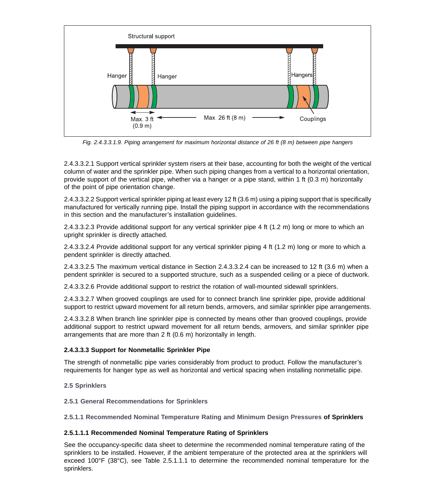
垂直鋼製撒水配管之支撐（2.4.3.3.2）
- 垂直撒水立管應於管底處支撐，並計入充水垂直水柱與配管本身之重量；配管由垂直轉水平處，應於轉向點水平 1 ft (0.3 m) 內以吊架或管座支撐（2.4.3.3.2.1）
- 垂直撒水配管至少每 12 ft (3.6 m) 應以專為垂直配管設計之支撐件支撐（2.4.3.3.2.2）
- 直立式撒水頭直接連接之垂直配管長度 ≥4 ft (1.2 m) 者，應提供額外支撐（2.4.3.3.2.3）
- 下垂式撒水頭直接連接之垂直配管長度 ≥4 ft (1.2 m) 者，應提供額外支撐；惟若該下垂式撒水頭已固定於受支撐構造（如吊頂或風管）上，此垂直距離上限可放寬至 12 ft (3.6 m)（2.4.3.3.2.4–2.4.3.3.2.5）
- 壁掛式側牆撒水頭應加設額外支撐以限制其轉動（2.4.3.3.2.6）
- 分支管採溝槽式接頭連接時，所有回彎管（return bend）、無支撐水平延伸管（armover）等配置應加設限制向上位移之額外支撐（2.4.3.3.2.7）；採其他方式連接者，凡水平長度超過 2 ft (0.6 m) 之回彎管、armover 等配置亦應加設額外支撐（2.4.3.3.2.8）
非金屬配管之支撐（2.4.3.3.3）
非金屬配管之強度因產品而異，其吊架型式及水平／垂直間距應依製造商之要求辦理，不套用鋼管間距表。
撒水頭一般建議
2.5.1.1.1撒水頭建議標稱溫度等級
撒水頭之建議標稱溫度等級應查閱各用途別專用資料表（occupancy-specific data sheet）決定。惟若受防護區域內撒水頭處之周圍溫度超過 100°F (38°C)，應依下表決定撒水頭之建議標稱溫度。
| 撒水頭處最高周圍溫度 °F (°C) | 撒水頭標稱溫度等級 °F (°C) | 溫度分類 | 玻璃球顏色 |
|---|---|---|---|
| 100 (40) | 135 (55) | 普通 Ordinary | 橙色 |
| 100 (40) | 160 (70) | 普通 Ordinary | 紅色 |
| 150 (65) | 175 (80) | 普通 Ordinary | 黃色 |
| 150 (65) | 212 (100) | 中溫 Intermediate | 綠色 |
| 225 (110) | 280 (140) | 高溫 High | 藍色 |
| 300 (150) | 350 (175) | 特高溫 Extra High | 紫紅色 |
| 375 (190) | 425 (220) | 超特高溫 Very Extra High | 黑色 |
| 475 (245) | 525 (275) | 極高溫 Ultra High | 黑色 |
| 625 (330) | 650 (345) | 極高溫 Ultra High | 黑色 |
2.5.1.1.2撒水頭建議最小設計壓力
應依用途別專用資料表決定天花板撒水系統（及適用時之貨架內撒水系統）之防護設計。當設計係以放水密度或流量表示時，應換算為對應之設計壓力，並與 Table 2.5.1.1.2 所列該型撒水頭之數值比較；若換算後之壓力低於表列數值，設計應採用表列數值。
| K 值 | 涵蓋類型 | 方向 | RTI 等級 | 應用 | 最小設計壓力 psi (bar) |
|---|---|---|---|---|---|
| K5.6 (K80) | 標準型 | 下垂／側牆／直立 | 快速或標準 | 非儲存 | 7 (0.5) |
| K5.6 (K80) | 標準型 | 乾式下垂／直立 | 快速或標準 | 非儲存 | 7–10 (0.5–0.7) |
| K5.6 (K80) | 延伸涵蓋型 | 下垂／側牆 | 快速 | 非儲存 | 7 (0.5)，側牆依間距可達 22–35 (1.5–2.4) |
| K8.0 (K115) | 標準型 | 下垂／直立 | 快速或標準 | 非儲存 | 7–10 (0.5–0.7) |
| K8.0 (K115) | 延伸涵蓋型側牆 | — | 快速 | 非儲存 | 依間距 16–36 (1.1–2.5) |
| K11.2 (K160) | 標準／延伸 | 下垂或直立 | 快速或標準 | 非儲存或儲存 | 7 (0.5)；延伸型 12 (0.8) |
| K14.0 (K200) | 標準／延伸 | 下垂／直立／側牆 | 快速或標準 | 非儲存或儲存 | 7–10 (0.5–0.7)；延伸型下垂/直立 18 (1.2) |
| K16.8 (K240) | 標準型 | 下垂／直立 | 快速或標準 | 非儲存或儲存 | 7–10 (0.5–0.7) |
| K19.6 (K280) | 標準型 | 下垂 | 標準 | 非儲存 7 (0.5)／儲存 10 (0.7) | 7–10 (0.5–0.7) |
| K22.4 (K320) | 標準型 | 下垂 | 快速 | 非儲存 10 (0.7)／儲存 15 (1.0) | 10–15 (0.7–1.0) |
| K25.2 (K360) | 標準／延伸 | 下垂／直立 | 快速或標準 | 非儲存或儲存 | 7–15 (0.5–1.0)；延伸型儲存最高 20 (1.4) |
| K28.0 (K400) | 標準型 | 下垂 | 快速 | 非儲存 15 (1.0)／儲存 20 (1.4) | 15–20 (1.0–1.4) |
| K33.6 (K480) | 標準型 | 下垂／直立 | 快速或標準 | 非儲存或儲存 | 10–20 (0.7–1.4) |
2.5.1.2同一區域混合裝設撒水頭
2.5.1.2.1 同一區域內不得混合裝設涵蓋類型、K 值、方向、RTI 等級及／或溫度等級互不相同之撒水頭。惟下列情形例外：
- 不同 K 值（2.5.1.2.2）：用以防護相鄰兩種需不同撒水設計之用途危害，且兩者螺紋尺寸不同時，較高危害用途之撒水設計應向四周延伸至少一顆撒水頭涵蓋範圍
- 下垂與直立式並用（2.5.1.2.3）：用以防護相鄰兩種不同用途危害時，同樣應將較高危害用途之設計向四周延伸至少一顆撒水頭
- 直立式替代受阻礙下垂式（2.5.1.2.4）：僅方向不同、其餘屬性相同，且該直立式為該用途危害之可接受防護選項時
- 不同 RTI 等級（2.5.1.2.5、2.5.1.2.6）：以至少 2 ft (0.6 m) 深不燃實體防煙垂壁（draft curtain）區隔快速反應區與標準反應區，並在標準反應側距垂壁至少 7-1/2 ft (2.3 m) 範圍內保持無可燃物；或以至少 2 ft (0.6 m) 天花板高差區隔，標準反應撒水頭裝設於較高天花板下，同樣需 7-1/2 ft (2.3 m) 無可燃物淨空
- 不同溫度等級（2.5.1.2.7）：K 值、方向、RTI、涵蓋類型皆相同，僅因局部周圍溫度較高（如熱風機出風口附近）需較高溫度等級時
- 側牆式與下垂／直立式並存（2.5.1.2.8）：允許同區裝設
2.5.1.3防煙垂壁（Draft Curtains）
2.5.1.3.1 除非本資料表其他章節或相關用途別專用資料表針對特定情況建議設置，否則不得裝設防煙垂壁。2.5.1.3.2 若建議設置，垂壁應為至少 2 ft (0.6 m) 深之不燃材料（如至少 26 號規（0.5 mm）鋼板、水泥板或石膏板）。若天花板不平整，當垂壁頂端與天花板間之垂直縫隙超過 4 in. (100 mm) 時，應以鋼板、水泥板、石膏板、礦棉、陶瓷纖維或 FM 認證防火填塞材填補。
2.5.1.4實體夾層（Solid Mezzanines）下方之撒水防護
依下列決策順序判斷實體夾層下方撒水頭之裝設方式（原文以流程圖 Fig. 2.5.1.4 表示，決策邏輯如下）：
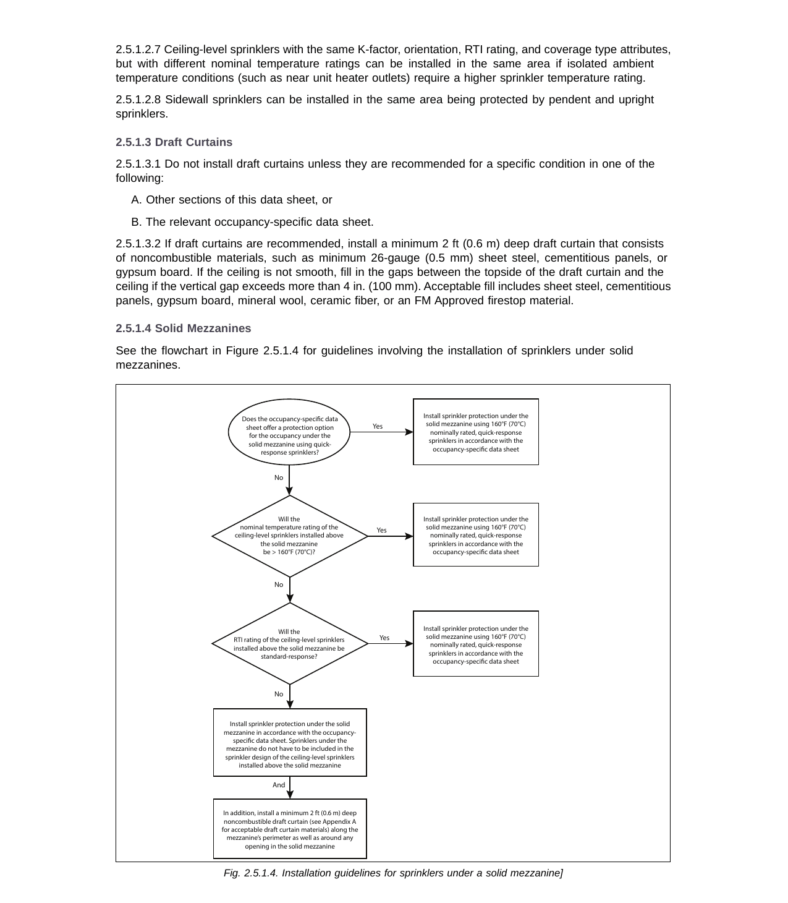
- 若該用途別專用資料表針對夾層下方之防護已提供採快速反應撒水頭之防護選項 → 依該資料表規定，以 160°F (70°C) 標稱溫度、快速反應撒水頭防護夾層下方
- 否則，若夾層上方天花板撒水頭之標稱溫度高於 160°F (70°C) → 同樣以 160°F (70°C) 標稱、快速反應撒水頭防護夾層下方
- 否則，若夾層上方天花板撒水頭之 RTI 等級為標準反應 → 同樣以 160°F (70°C) 標稱、快速反應撒水頭防護夾層下方
- 以上皆非（即上方為快速反應且標稱溫度 ≤160°F）→ 依該用途別專用資料表規定防護夾層下方，且夾層下方之撒水頭不須併入夾層上方天花板撒水系統之設計面積；同時應沿夾層周邊及夾層上任何開口周圍，加裝至少 2 ft (0.6 m) 深之不燃防煙垂壁
2.5.1.5實體走道（Solid Walkways）
2.5.1.5.1 走道下方原則上使用與走道上方天花板相同之撒水頭，惟走道下方撒水頭應為 快速反應 RTI 且標稱溫度 160°F (70°C)，並沿用天花板既有之枝管配置供應。2.5.1.5.2 亦可改依走道相鄰用途之撒水設計及走道高度決定供應走道下方撒水頭之枝管管徑。2.5.1.5.3 走道下方撒水頭不須併入上方天花板系統之水力設計。2.5.1.5.4 寬度超過 10 ft (3.0 m) 之實體走道，應依 2.5.1.4 實體夾層之建議辦理防護。
2.5.1.6可燃隱蔽空間
可燃式吊頂下方及可燃隱蔽空間內撒水頭之裝設建議，請參閱 Data Sheet 1-12《天花板與隱蔽空間》；其建議設計則參閱 Data Sheet 3-26《非儲存用途消防防護》。
2.5.1.7牆面與樓地板開口之防護
2.5.1.7.1輸送機開口（Conveyor Openings）
2.5.1.7.1.1 輸送機開口原則上應以 FM 認證開放式水霧噴頭（open-type water spray nozzles）防護（依 2.5.1.7.1.2–2.5.1.7.1.6）。惟穿越防火隔間牆之輸送機開口，若開口面積不超過 8 ft² (0.75 m²)，可改以快速反應自動撒水頭防護。
- 單向輸送（2.5.1.7.1.2）：噴頭應裝設於偵測啟動側，噴頭噴射中心線與牆面夾角 <30°，距開口至少 3 ft (0.9 m)
- 雙向輸送（2.5.1.7.1.3）：開口兩側皆須裝設水霧噴頭與偵測，配置原則同上，兩側均距開口至少 3 ft (0.9 m)
- 樓地板／天花板開口（2.5.1.7.1.4）：垂直開口與傾斜開口配置有別；傾斜開口噴頭應設於開口平面上方 20–30 in. (500–750 mm)，並於 5–6 ft (1.5–1.8 m) 範圍內設置不燃隔板／擋板（baffle）
2.5.1.7.1.5 水霧系統配置原則：（A）開口兩側各設獨立水霧系統；（B）每側水霧系統由同側撒水系統供水；（C）設置控制閥以便將水霧系統與撒水系統隔離；（D）以 FM 認證快速反應先導撒水頭（pilot sprinkler）或升溫速率偵測器啟動水霧系統，並裝設於其所啟動噴頭的開口對側；（E）噴頭與開口之距離不超過 Table 2.5.1.7.1.6(b) 所列數值；（F）噴頭數量與噴射角度應確保開口被密集水霧完整覆蓋。
| 開口上緣距地板高度 ft (m) | 每開口最小放水密度 gpm/ft² (mm/min) |
|---|---|
| < 15 (4.6) | 2 (80) |
| < 20 (6.1) | 2.5 (100) |
| < 30 (9.1) | 3 (120) |
| ≥ 30 (9.1) | 4 (160) |
| 單一噴頭放水量 gpm (L/min) | 距開口最大水平距離 ft (m) |
|---|---|
| ≤ 15 (57) | 5.5 (1.7) |
| ≤ 25 (95) | 7 (2.1) |
| ≤ 35 (132) | 8 (2.4) |
| > 35 (132) | 9 (2.7) |
水霧噴頭最小放水壓力應維持 25 psi (1.7 bar)，且水力計算應計入水霧系統與開口對側相鄰撒水系統之同時放水（2.5.1.7.1.6）。
2.5.1.7.2電梯升降井（Elevator Hoistways）
升降井底部
若電梯井為封閉、不燃、無可燃液壓油且皮帶為不燃或限燃材質，井底可免設撒水頭（2.5.1.7.2.1）。否則應於井坑地板上方不超過 2 ft (0.6 m) 處裝設最小 K5.6 (K80) 側牆式撒水頭，標稱溫度 ≤212°F (100°C)（2.5.1.7.2.2）。
升降井頂部
若電梯專供載客、井體不燃或限燃、車廂材料符合 ASTM A17.1，且皮帶不燃或限燃，井頂可免設撒水頭（2.5.1.7.2.3）。否則應於井頂裝設最小 K5.6 (K80) 撒水頭，標稱溫度 ≤212°F (100°C)（2.5.1.7.2.4）。
2.5.1.7.3垂直封閉管道間
2.5.1.7.3.1 若管道間不燃或限燃、不可進入，且僅作為風管、電氣或機械管道使用，可免設撒水頭。2.5.1.7.3.2 否則應於管道間頂部裝設最小 K5.6 (K80) 撒水頭，標稱溫度 ≤212°F (100°C)。2.5.1.7.3.3 若管道間內壁為可燃材質，除頂部撒水頭外，應每隔一樓層加裝一顆同規格撒水頭。2.5.1.7.3.4 若可燃管道間被分段截斷（trapped），應於每一截斷段頂部再加裝一顆撒水頭。2.5.1.7.3.5 可進入之管道間，其底部應於距管道間底部不超過 2 ft (0.6 m) 處裝設最小 K5.6 (K80) 側牆式撒水頭，標稱溫度 ≤212°F (100°C)。
2.5.1.7.4未封閉之垂直樓地板開口
2.5.1.7.4.1 同時符合下列三項條件時，免設防煙垂壁＋密集撒水頭組合：（A）開口相連之各樓層均已依 FM 資料表以天花板撒水頭防護；（B）開口相對兩端之最短水平距離全向皆 ≥20 ft (6.1 m)；（C）開口面積 ≥1,000 ft² (93 m²)。
2.5.1.7.4.2–5 未符合上述條件者，應於開口周邊裝設：
- 防煙垂壁：不燃或限燃材料，至少 18 in. (450 mm) 深，緊鄰開口設置
- 密集撒水頭：沿開口每 6 ft (1.8 m) 裝設一顆，原則採用與鄰接天花板相同之撒水頭，惟若鄰接天花板為標準反應，開口處應改用快速反應撒水頭；撒水頭應水平距垂壁 6–12 in. (150–300 mm)
- 擋板（baffle）：若撒水頭間距將小於 6 ft (1.8 m)，應於撒水頭之間加裝不燃或限燃擋板，長度 ≥8 in. (200 mm)、高度 ≥6 in. (150 mm)；直立式撒水頭之擋板應高出頂部 2–3 in. (50–75 mm)，下垂式則與撒水頭偏向板齊平
2.5.1.7.5樓梯間
- 所有可燃構造樓梯下方應裝設撒水頭（2.5.1.7.5.1）
- 樓梯平台若作儲存使用，平台下方應裝設撒水頭（2.5.1.7.5.2）
- 不燃樓梯間、樓梯及裝修材料均為不燃或限燃者，應於樓梯間頂部及井底上方第一個可到達之平台下方裝設撒水頭（2.5.1.7.5.3）
- 設有出入門之各樓層樓梯平台，均應裝設撒水頭（2.5.1.7.5.4）
2.5.1.7.6電扶梯（Escalators）
2.5.1.7.6.1 若構造或用途屬可燃性質，應對電扶梯所服務之樓層裝設撒水防護。2.5.1.7.6.2 若電扶梯每一樓層之出入口上方設有天花板，應沿電扶梯周邊裝設快速反應撒水頭（原文以圖示表示配置方式，重點為沿開口周邊密集布置，類似 2.5.1.7.4 之開口防護概念）。2.5.1.7.6.3 若電扶梯各樓層出入口上方未設天花板，其形成之垂直開口應依 2.5.1.7.4（未封閉垂直樓地板開口）之建議辦理防護。
2.5.1.7.7窗戶
2.5.1.7.7.1 防火隔間牆上裝設窗戶時，為防止火勢經窗戶延燒，應符合下列全部條件：（A）窗戶之時效等級至少為所在防火隔間時效之 75%；（B）玻璃／玻璃裝配認證用於防火屏障且至少 1 小時時效；（C）窗框認證至少 1 小時時效；（D）依圖示（Fig. 2.5.1.7.7.1）於窗戶兩側各保留寬 2 ft (0.6 m)、且最大尺寸不小於 6 ft (1.8 m)之無可燃物淨空區域。
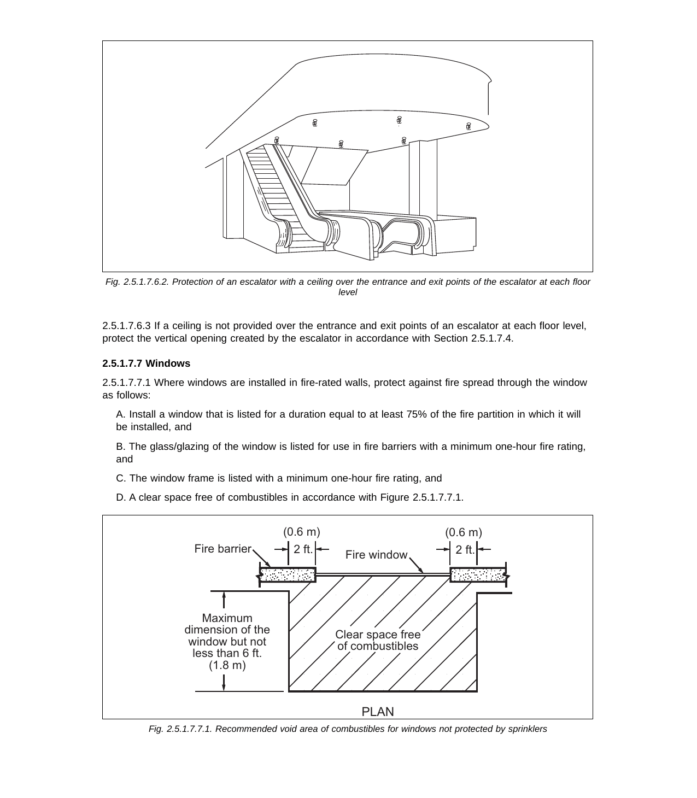
2.5.1.7.7.2 未符合上述條件時，應改以撒水頭防護窗戶，二擇一：（a）於預動式（deluge）系統上裝設開放式最小 K5.6 (K80) 下垂式撒水頭；或（b）於濕式系統上裝設 165°F (70°C) 標稱、快速反應、最小 K5.6 (K80) 下垂式撒水頭。窗戶撒水系統之配管與控制應比照貨架內撒水系統之配置原則。
- 預動式系統動作（2.5.1.7.7.3）：以複合式升溫速率＋定溫（標稱 135°F [57°C]）探測器觸發，探測器裝設於窗戶撒水頭正上方之天花板／屋頂處，距牆至少 6 in. (150 mm)，沿窗平行方向中心距最大 10 ft (3.0 m)
- 撒水頭間距與位置（2.5.1.7.7.4）：下垂式撒水頭沿窗戶中心距 6–10 ft (1.8–3.0 m)，鄰近窗戶上緣但至少低於天花板 6 in. (150 mm)，偏向板朝向平行窗戶並距窗約 12 in. (300 mm)
- 擋板（2.5.1.7.7.5）：天花板撒水頭與窗戶撒水頭間距小於 6 ft (1.8 m) 時應加裝擋板
- 高窗分層防護（2.5.1.7.7.6）：窗高超過 13 ft (4.0 m) 時，應增設具擋水板之額外層級撒水頭，各層防護垂直面積大致相等
- 設計流量（2.5.1.7.7.7）：窗戶撒水系統每窗寬 1 linear ft 至少提供 4 gpm (50 L/min/m)，並應計入與其相鄰天花板撒水系統及消防栓用水量之同時放水需求
2.5.1.8輸送機系統自動停機
輸送機系統應配置為於撒水系統流水（waterflow）發生時自動停止運轉。
2.5.1.9天花板撒水頭下方淨空
2.5.1.10撒水頭防護免受損傷
2.5.1.10.1 對易受機械損傷之撒水頭應提供保護，如 FM 認證撒水頭護籠、鋼構護框、混凝土護柱等，惟保護裝置本身不得違反該撒水頭之阻礙判斷準則。
2.5.1.10.2 乾式下垂型撒水頭之防護：若乾式下垂撒水頭用於防護低溫／冷凍區域並由濕式系統供水，應於該區天花板頂面與供應乾式下垂撒水頭之架空配管間，維持至少 12 in. (300 mm) 垂直距離（2.5.1.10.2.1）。為避免加溫區內乾式下垂垂管外部積水，可將該垂管貫穿孔緊密填塞，並以熱敏膠帶（thermal mastic tape，或同等品）包覆天花板上方之垂管部分（2.5.1.10.2.2）。
2.5.1.11撒水頭迴水彎（Return Bends）
2.5.1.11.1 由生水源、磨坊池（mill pond）或無蓋蓄水池供水之 K11.2 (K160) 以下下垂式撒水頭，應裝設至少 1 in. (25 mm) 之個別迴水彎。2.5.1.11.2 下列情形免裝迴水彎：（A）系統已設有 FM 認證濾網（strainer）；（B）預動式（deluge）系統；（C）乾式下垂型撒水頭。
2.5.1.12直立式撒水頭臂架方向
直立式撒水頭裝設時，其臂架應與枝管（branch line）方向平行。
2.5.1.13備用撒水頭
2.5.1.13.1 應於現場為每一種已裝設之撒水頭類型備存備用撒水頭，並備妥裝設所需之工具。2.5.1.13.2 備用撒水頭之最低數量，應依該撒水系統設計面積內、該類型撒水頭所需之最大裝設數量決定。
2.5.2 非儲存型下垂式與直立式撒水頭（一）：適用範圍與天花板構造
2.5.2.1適用範圍與撒水頭選用邏輯（General Recommendations）
2.5.2.1.1* 依 Fig. 2.5.2.1 流程圖判斷特定用途可安裝之非儲存型下垂式／直立式撒水頭：先確認該用途所屬之專用用途資料表（occupancy-specific Data Sheet）是否已將其列為可比照非儲存型處理；接著確定天花板層級之防護選項，並自該資料表取得（如有提供）撒水頭之涵蓋類型、K 值、方位、RTI 與溫級屬性。
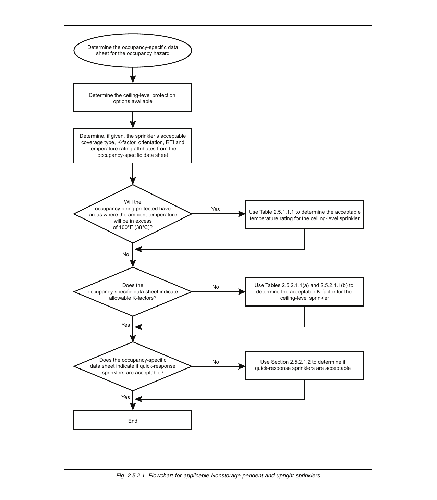
- 若防護區域環境溫度可能超過 100°F (38°C)：以 Table 2.5.1.1.1 決定天花板層級撒水頭之溫級
- 若專用資料表未指定可用 K 值：以 Table 2.5.2.1.1(a)、(b) 決定可用 K 值
- 若專用資料表未指定是否可用快速反應（Quick-Response）撒水頭：依 2.5.2.1.2 判斷
可接受之 K 值（2.5.2.1.1）
| 公稱 K 值，gpm/(psi)0.5（L/min/[bar]0.5） | 公稱管牙尺寸，in.（mm） |
|---|---|
| 2.8 (40) | 1/2 或 3/4 (15 或 20) |
| 5.6 (80) | 1/2 或 3/4 (15 或 20) |
| 8.0 (115) | 1/2 或 3/4 (15 或 20) |
| 11.2 (160) | 1/2 或 3/4 (15 或 20)註1 |
| 14.0 (200) | 3/4 (20) |
| 16.8 (240) | 3/4 (20) |
| 19.6 (280) | 1 (25) |
| 22.4 (320) | 1 (25) |
| 25.2 (360) | 1 (25) |
| 28.0 (400) | 1 (25) |
| 33.6 (480) | 1-1/4 (32) |
註1：K11.2 (K160) 採公稱 1/2 in. (15 mm) NPT 牙口者，僅限作為既有 K8.0 (K115) 以下撒水頭之汰換（retrofit）用途時方可使用。
| 專用資料表建議之放水密度，gpm/ft²（mm/min） | 標準涵蓋型最低建議 K 值 | 延伸涵蓋型最低建議 K 值 |
|---|---|---|
| 密度 ≤ 0.10 (4) | K5.6 (K80) | K5.6EC (K80EC) |
| 0.10 (4) < 密度 ≤ 0.30 (12) | K5.6 (K80) | K11.2EC (K160EC) |
| 密度 > 0.30 (12) | K11.2 (K160) | K25.2EC (K360EC) |
2.5.2.1.2快速反應（RTI）撒水頭之適用限制
標準反應（Standard-Response）非儲存型撒水頭可用於濕式與乾式系統。快速反應（Quick-Response）撒水頭僅可用於濕式系統；下列用途不得使用快速反應撒水頭：
- 易燃液體噴塗作業
- 使用易燃液體之液壓設備
- 存在非附屬於製程、且盛裝容器容量超過 5 加侖 (19 公升) 安全容器之易燃液體場所
- 油箱內有燃油之車輛組裝或維修區域
- 存在大面積遮蔽撒水放水之場所
- 天花板及／或建築結構支撐構件上可能堆積油污、粉塵、棉絮等可燃殘留物之區域
- 專用資料表未建議該用途採用快速反應撒水頭者
2.5.2.2天花板構造類型（無遮蔽 vs. 有遮蔽）之判定
2.5.2.2.1 依 Fig. 2.5.2.2.1 流程圖判定天花板構造是否為無遮蔽（Unobstructed）或有遮蔽（Obstructed）。實心天花板結構構件（solid ceiling structural member）係指其於垂直面之斷面開口率低於 70% 者。
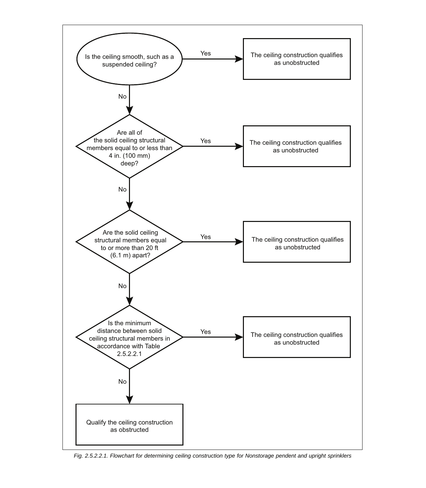
- 天花板是否平整、如懸吊式天花板（smooth, such as a suspended ceiling）？是 → 判定為無遮蔽
- 所有實心天花板結構構件深度是否 ≤ 4 in. (100 mm)？是 → 判定為無遮蔽
- 實心天花板結構構件間距是否 ≥ 20 ft (6.1 m)？是 → 判定為無遮蔽
- 實心天花板結構構件間之最小距離是否符合 Table 2.5.2.2.1 規定？是 → 判定為無遮蔽
- 以上皆否 → 判定為有遮蔽（Obstructed）
| 撒水頭 K 值 | 最高用途危害等級 | 最大天花板高度，ft (m) | 判定為無遮蔽所需之實心結構構件最小間距，ft (m) |
|---|---|---|---|
| ≤ K8.0 (K115) | HC-2 | 60 (18.3) | 15 (4.6) |
| HC-3 | 30 (9.1) | 12 (3.7) | |
| HC-3 | 45 (13.7) | 10 (3.0) | |
| K11.2 (K160) | HC-2 | 60 (18.3) | 15 (4.6) |
| HC-3 | 30 (9.1) | 12 (3.7) | |
| HC-3 | 60 (18.3) | 10 (3.0) | |
| ≥ K14 (K200) | HC-2 | 60 (18.3) | 15 (4.6) |
| HC-2 | > 60 (18.3) | 12 (3.7) | |
| HC-3 | 30 (9.1) | 12 (3.7) | |
| HC-3 | > 30 (9.1) | 10 (3.0) | |
| K11.2EC (K160EC) 直立式 | HC-1 | 30 (9.1) | 20 (6.1) |
| HC-2 | 60 (18.3) | 16 (4.9) | |
| HC-3 | 45 (13.7) | 16 (4.9) | |
| K14.0EC (K200EC) 直立式 | HC-2 | 60 (18.3) | 20 (6.1) |
| HC-3 | 30 (9.1) | 20 (6.1) | |
| HC-3 | 45 (13.7) | 16 (4.9) | |
| K25.2EC (K360EC) | HC-3 | 任何高度 | 14 (4.3) |
2.5.2.2.2 若流程圖判定天花板構造為無遮蔽，依 2.5.2.3 之水平／垂直定位建議安裝。2.5.2.2.3 若判定為有遮蔽，依 2.5.2.4（本節不涵蓋）之建議安裝。
2.5.2.3無遮蔽天花板構造下之水平與垂直定位
2.5.2.3.1水平直線與面積間距
若專用資料表未提供天花板撒水頭間距建議，無遮蔽天花板構造下之非儲存型下垂式／直立式撒水頭應依危害等級分別採用 Table 2.5.2.3.1.1(a)（危害等級一）、(b)（危害等級二）、(c)（危害等級三），依天花板高度、K 值、方位、反應等級與天花板坡度決定容許之最小／最大直線間距（約 7–20 ft／2.1–6.1 m）與最小／最大面積間距（約 64–400 ft²／6.0–37.2 m²）。2.5.2.3.1.2 撒水頭間之直線距離應沿天花板坡度量測，而非以樓地板平面之投影距離計算。
2.5.2.3.2撒水頭與牆壁、牆角之水平距離
非儲存型下垂式／直立式撒水頭與牆壁之水平距離，應以垂直於牆面方向量測；與牆角之距離依牆角角度區分，詳 Fig. 2.5.2.3.2。
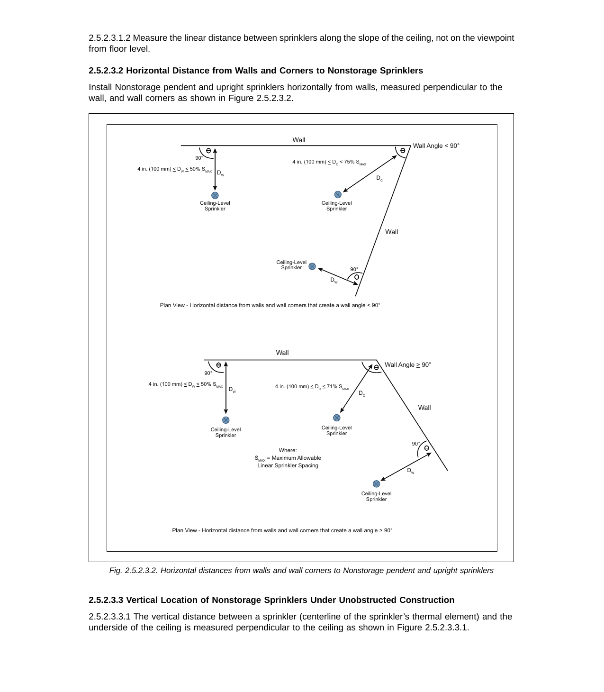
| 量測情境 | 與牆面之水平距離 DW | 與牆角之水平距離 DC |
|---|---|---|
| 牆角角度 < 90° | 4 in. (100 mm) ≤ DW ≤ 50% SMAX | 4 in. (100 mm) ≤ DC ≤ 75% SMAX |
| 牆角角度 ≥ 90° | 4 in. (100 mm) ≤ DW ≤ 50% SMAX | 4 in. (100 mm) ≤ DC ≤ 71% SMAX |
式中 SMAX = 撒水頭最大容許直線間距（詳 Table 2.5.2.3.1.1(a)/(b)/(c)）。無論牆角角度為何，撒水頭與牆面之最小距離均不得小於 4 in. (100 mm)。
2.5.2.3.3無遮蔽構造下撒水頭之垂直位置
2.5.2.3.3.1 撒水頭（感熱元件中心線）與天花板下緣間之垂直距離 DV，應垂直於天花板面量測（無論天花板是否傾斜，皆以垂直天花板之方向為準，而非鉛垂方向）。
2.5.2.3.3.4 除非專用資料表另有規定，非儲存型下垂式／直立式撒水頭感熱元件中心線應依下表位於天花板下緣以下之範圍內（並應依 Table 2.5.2.3.1.1(a)/(b)/(c) 確認該天花板高度可用之撒水頭種類）：
| 建築天花板高度 | 撒水頭種類與 K 值 | 垂直距離範圍（感熱元件中心線至天花板下緣） |
|---|---|---|
| ≤ 30 ft (9.1 m) | 延伸涵蓋型 K ≤ 8.0EC (115EC) | 1–4 in. (25–100 mm) |
| 延伸涵蓋型 K ≥ 11.2EC (160EC) | 2–12 in. (50–300 mm) | |
| 標準涵蓋型快速反應 K ≤ 11.2 (160)，或標準涵蓋型標準反應 | 2–12 in. (50–300 mm) | |
| 標準涵蓋型快速反應 K14.0 (K200) 或 16.8 (240) | 2–13 in. (50–325 mm) | |
| 標準涵蓋型快速反應 K ≥ 19.6 (280) | 2–17 in. (50–425 mm) | |
| > 30 ft 且 ≤ 60 ft (9.1–18.3 m) | 延伸涵蓋型 K ≥ 11.2EC (160EC) | 2–12 in. (50–300 mm) |
| 標準涵蓋型快速反應 K ≤ 11.2 (160)，或標準涵蓋型標準反應 | 2–12 in. (50–300 mm) | |
| 標準涵蓋型快速反應 K14.0 (K200) 或 16.8 (240) | 2–13 in. (50–325 mm) | |
| 標準涵蓋型快速反應 K ≥ 19.6 (280) | 2–17 in. (50–425 mm) | |
| > 60 ft (18.3 m) | 延伸涵蓋型 K ≥ 25.2EC (360EC) | 2–12 in. (50–300 mm) |
| 標準涵蓋型快速反應 K ≥ 19.6 (280) | 2–17 in. (50–425 mm) |
2.5.2.3.3.5 以上垂直位置規定不適用於齊平型（flush）、嵌入型（recessed）或隱藏型（concealed）非儲存型撒水頭。
2.5.2.3.4天花板坡度對撒水頭安裝之影響
2.5.2.3.4.1 依 Fig. 2.5.2.3.4.1(a) 流程圖判斷天花板坡度之影響；坡度非直線之天花板，應以分析點之切線（point of tangency）計算坡度。判斷順序如下：
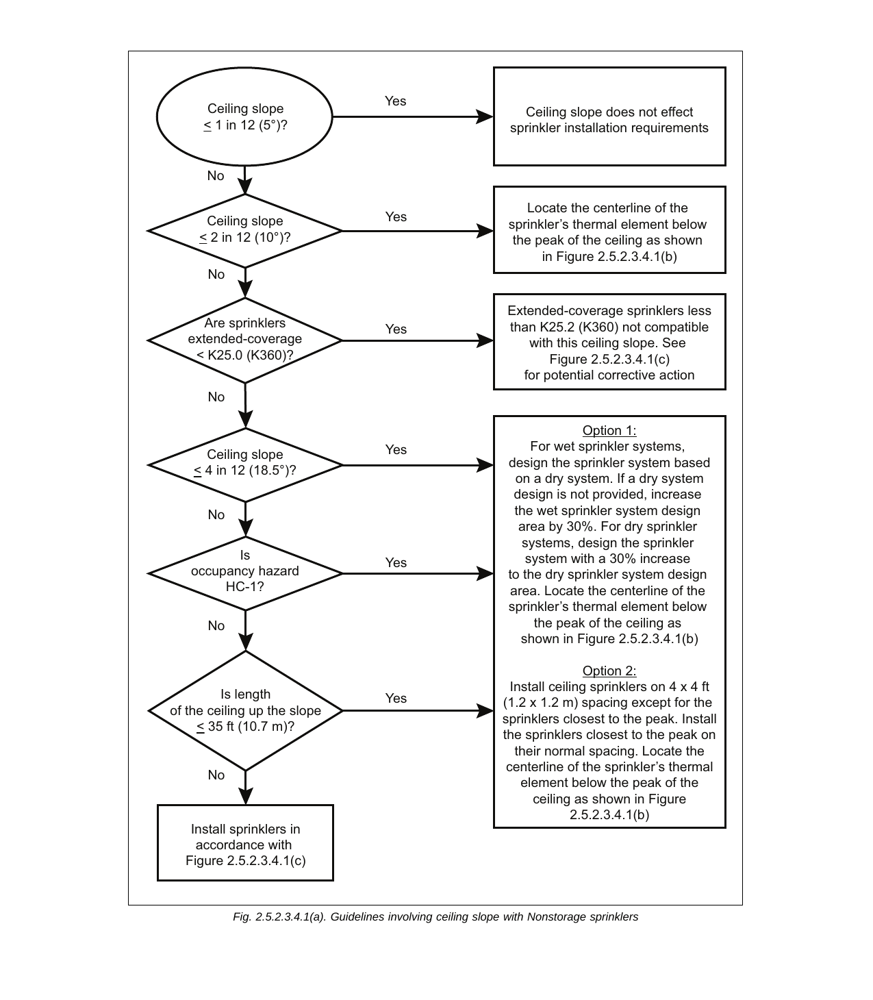
- 坡度 ≤ 1 in 12 (5°)：坡度不影響撒水頭安裝規定
- 坡度 ≤ 2 in 12 (10°)：將撒水頭感熱元件中心線定位於屋脊（peak）以下，如 Fig. 2.5.2.3.4.1(b)
- 坡度 > 2 in 12 (10°) 且撒水頭為延伸涵蓋型且 K < K25.2 (K360)：不相容於此坡度，須依 Fig. 2.5.2.3.4.1(c) 採取補救措施（設置假天花板）
- 坡度 ≤ 4 in 12 (18.5°)：可採下列任一方式，並將感熱元件中心線定位於屋脊以下（如 Fig. 2.5.2.3.4.1(b)）
- 方式一：濕式系統以乾式系統基準設計；若無乾式設計基準，則將濕式設計面積增加 30%；乾式系統則將設計面積增加 30%
- 方式二：撒水頭以 4×4 ft (1.2×1.2 m) 間距安裝，惟最靠近屋脊之撒水頭仍採正常間距
- 坡度 > 4 in 12 (18.5°) 但用途危害等級屬 HC-1：仍可採上列方式一或方式二
- 坡度 > 4 in 12 (18.5°) 且非 HC-1，惟沿坡面之天花板長度 ≤ 35 ft (10.7 m)：仍可採上列方式一或方式二
- 以上皆不成立（坡度 > 4 in 12、非 HC-1、且沿坡面長度 > 35 ft）：依 Fig. 2.5.2.3.4.1(c) 設置假天花板安裝撒水頭
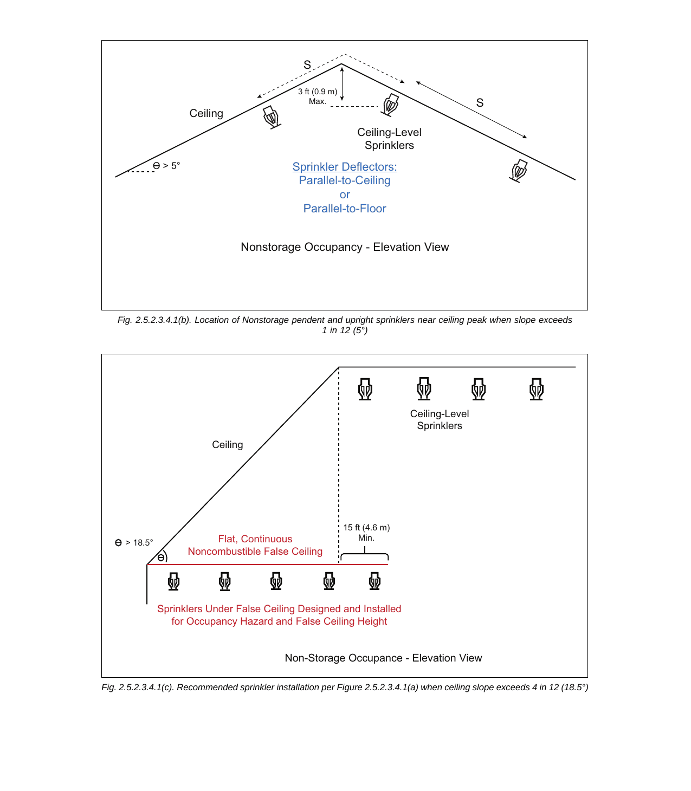
2.5.2.3.4.2 設置平整、連續之假天花板時，應使用最小 22 號規格 (0.7 mm) 金屬薄板或同等不燃材料，並以能承受最小 3 lb/ft² (14.6 kg/m²) 上舉風壓之方式固定；較不理想但可接受之替代方案為最小 3/8 in. (10 mm) 合板（或同等材料）。2.5.2.3.4.3 非儲存型下垂式／直立式撒水頭之撒水板應平行天花板或平行地板安裝。
非儲存型下垂式與直立式撒水頭（二）：阻礙物判斷規則
2.5.2.4阻礙式天花板構造下之水平／垂直安裝位置
2.5.2.4.1 撒水頭間之直線距離，應沿天花板坡度量測，不得以地板水平視角量測。2.5.2.4.2 依 Fig. 2.5.2.4.2 流程圖判斷阻礙式天花板構造下撒水頭之建議水平與垂直安裝位置，判斷邏輯摘要如下表。
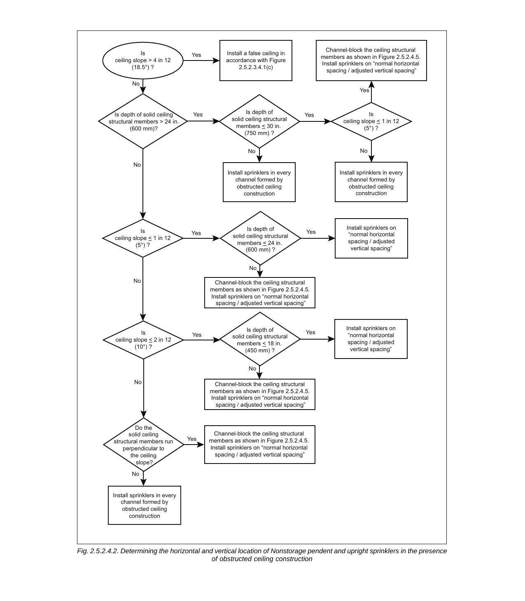
| 條件（依序判斷） | 安裝方式 |
|---|---|
| 天花板坡度 > 4 in 12 (18.5°) | 依 Fig. 2.5.2.3.4.1(c) 設置假天花板（false ceiling） |
| 實心天花板結構材深度 > 24 in. (600 mm)（坡度 ≤4 in 12 情形） | 於阻礙式構造形成之每一通道（channel）內皆須設置撒水頭 |
| 實心結構材深度 < 30 in. (750 mm) 且坡度 < 1 in 12 (5°) | 採「正常水平間距／調整垂直間距」安裝 |
| 坡度 < 1 in 12 (5°) 且結構材深度 < 24 in. (600 mm) | 採「正常水平間距／調整垂直間距」安裝 |
| 坡度 < 1 in 12 (5°) 但結構材深度 ≥ 24 in. (600 mm) | 需通道阻塞（channel-block）結構材後，再採「正常水平間距／調整垂直間距」安裝 |
| 坡度 < 2 in 12 (10°) 且結構材深度 < 18 in. (450 mm) | 採「正常水平間距／調整垂直間距」安裝 |
| 坡度 < 2 in 12 (10°) 但結構材深度 ≥ 18 in. (450 mm) | 需通道阻塞後，再採「正常水平間距／調整垂直間距」安裝 |
| 實心結構材與天花板坡度方向垂直（perpendicular） | 需通道阻塞後，再採「正常水平間距／調整垂直間距」安裝 |
| 實心結構材與天花板坡度方向不垂直 | 於阻礙式構造形成之每一通道內皆須設置撒水頭 |
每一通道皆設置撒水頭時之設計方式（2.5.2.4.3）
- 水平間距：依用途危害專用資料表所列直線間距決定通道內撒水頭最小／最大水平間距；如未提供，則依危害等級套用 Table 2.5.2.3.1.1(a)／(b)／(c)。若結構材上有開口，得於各通道間水平交錯配置撒水頭，以符合最小建議直線間距
- 垂直間距：依 2.5.2.3.3 所列距離決定通道內撒水頭於天花板下方之最小／最大垂直位置
- 系統設計（採密度／需求面積法時）：
- 每一支管上作動撒水頭數：取需求面積之平方根，乘以適用之形狀係數，再除以通道內撒水頭之直線間距（非整數依一般捨入法處理）
- 水力分析納入之撒水頭數：以規定需求面積除以撒水頭最大允許面積間距（非整數依一般捨入法處理）
- 最遠端撒水頭最小需求流量：以規定放水密度乘以撒水頭最大允許面積間距
正常水平間距／調整垂直間距（2.5.2.4.4）
A. 水平間距：依用途危害專用資料表之直線與面積間距決定；未提供者依危害等級套用 Table 2.5.2.3.1.1(a)／(b)／(c)。B. 垂直間距：依 2.5.2.3.3 決定天花板下方最小／最大垂直位置；若實心結構材深度導致無法依 2.5.2.3.3 施作，撒水頭感熱元件應位於實心天花板結構材下緣以下不超過 6 in. (150 mm) 之平面內（見 Fig. 2.5.2.4.4 綠色區域）：
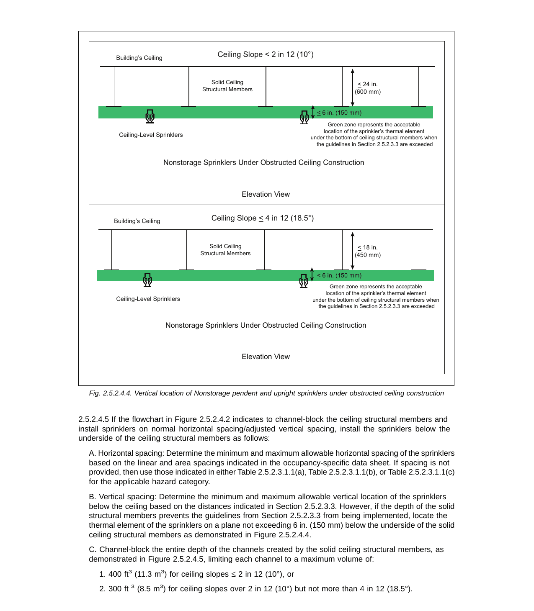
| 天花板坡度 | 結構材深度門檻 | 感熱元件容許位置（超出 2.5.2.3.3 規定時） |
|---|---|---|
| < 2 in 12 (10°) | < 24 in. (600 mm) | 結構材下緣以下 ≤ 6 in. (150 mm) |
| < 4 in 12 (18.5°) | < 18 in. (450 mm) | 結構材下緣以下 ≤ 6 in. (150 mm) |
通道阻塞 Channel-Blocking（2.5.2.4.5）
需通道阻塞時，除依上述 A／B 決定水平與垂直間距外，應以阻塞材封閉實心天花板結構材形成之通道全深度（見 Fig. 2.5.2.4.5），並限制每一通道之最大容積：
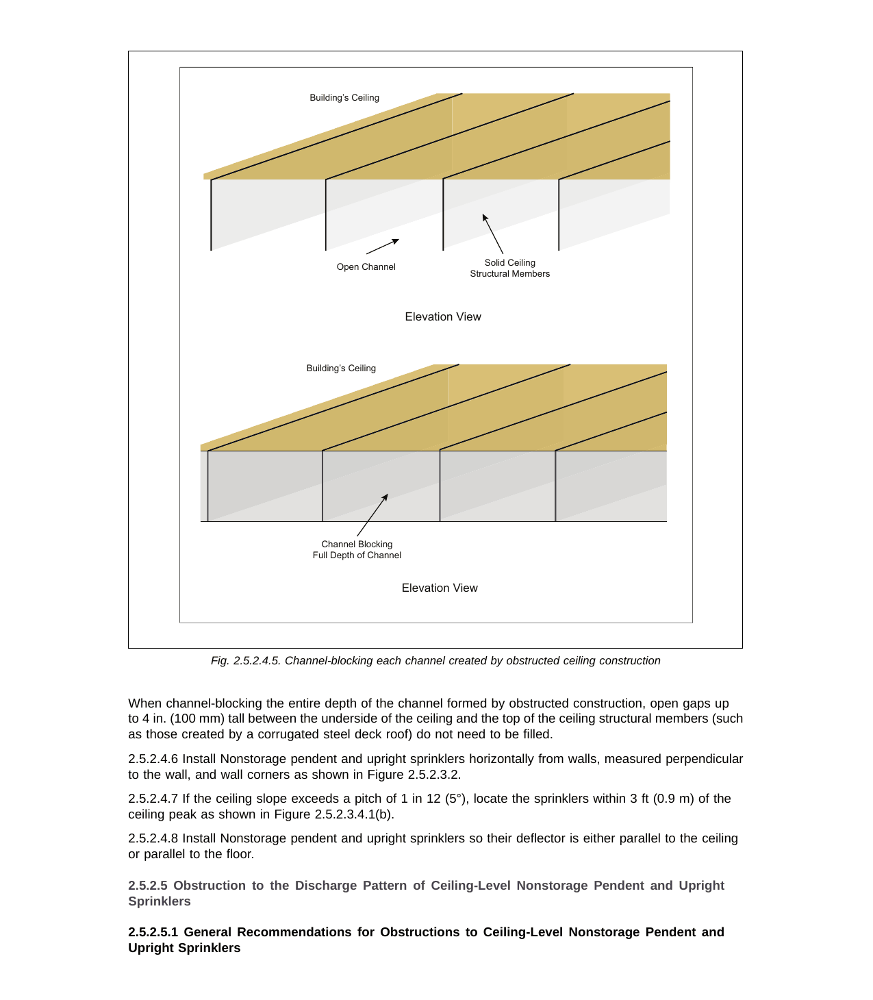
| 天花板坡度 | 單一通道最大容積 |
|---|---|
| ≤ 2 in 12 (10°) | 400 ft³ (11.3 m³) |
| > 2 in 12 (10°) 但 ≤ 4 in 12 (18.5°) | 300 ft³ (8.5 m³) |
2.5.2.4.6 阻礙式構造下之撒水頭，其與牆面／牆角之水平距離安裝方式，比照 Fig. 2.5.2.3.2（無阻礙構造）辦理。2.5.2.4.7 天花板坡度超過 1 in 12 (5°) 時，撒水頭應設置於天花板峰頂 3 ft (0.9 m) 範圍內（見 Fig. 2.5.2.3.4.1(b)）。2.5.2.4.8 撒水頭撒水盤方向應與天花板平行或與地板平行。
2.5.2.5天花板層撒水頭撒水型態之阻礙判斷總則
2.5.2.5.1棋盤格區域內之物件——不視為阻礙
2.5.2.5.1.1 若某物件完全位於 Fig. 2.5.2.5.1.1(a)（標準涵蓋型撒水頭）或 Fig. 2.5.2.5.1.1(b)（延伸涵蓋型撒水頭）所示、以撒水頭為中心呈棋盤格狀交錯分布之允許區域內，則該物件不構成對撒水頭撒水型態之阻礙——此棋盤格區域依撒水頭為標準涵蓋型或延伸涵蓋型而有不同範圍。2.5.2.5.1.2 若物件並非完全位於棋盤格區域內，應依後續各節（2.5.2.5.2 以下）逐項判斷該物件是否構成不可接受之阻礙。
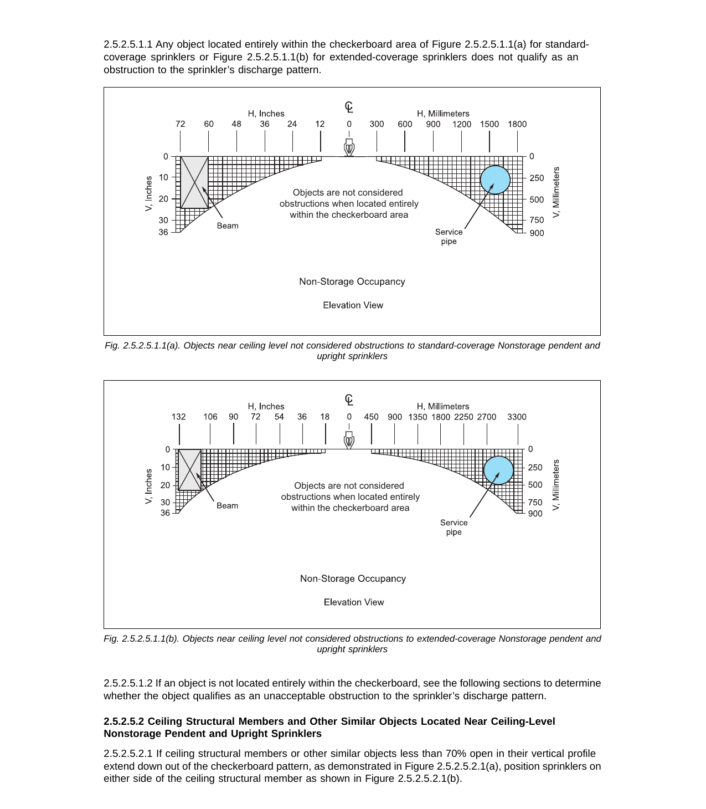
2.5.2.5.2天花板結構構材及類似物件之阻礙判斷
2.5.2.5.2.1 若天花板結構構材（如工字樑 I-Beam）或其他類似物件，其垂直斷面之開口率低於 70%，且延伸凸出棋盤格區域範圍外（見 Fig. 2.5.2.5.2.1(a)），則應如 Fig. 2.5.2.5.2.1(b) 所示，將撒水頭分設於該結構構材兩側。
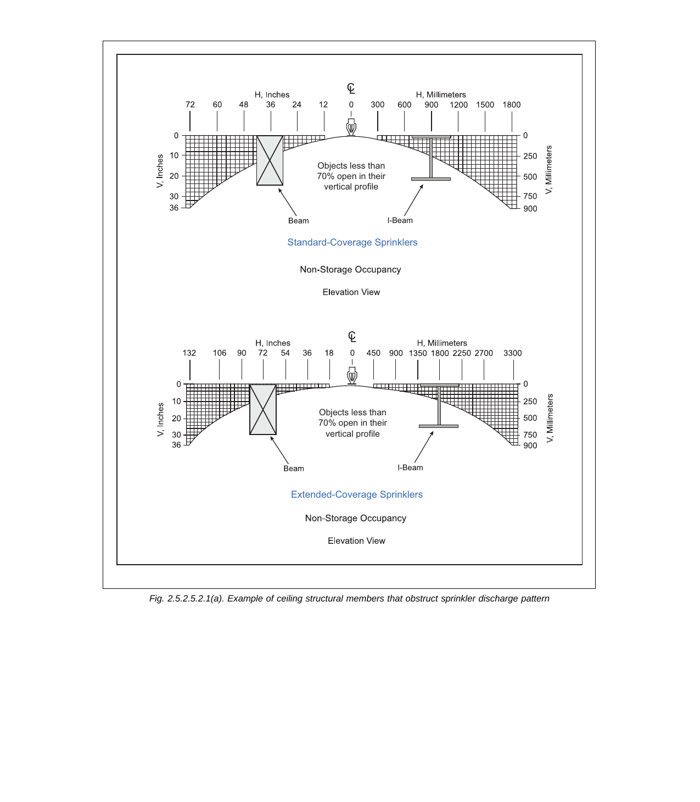
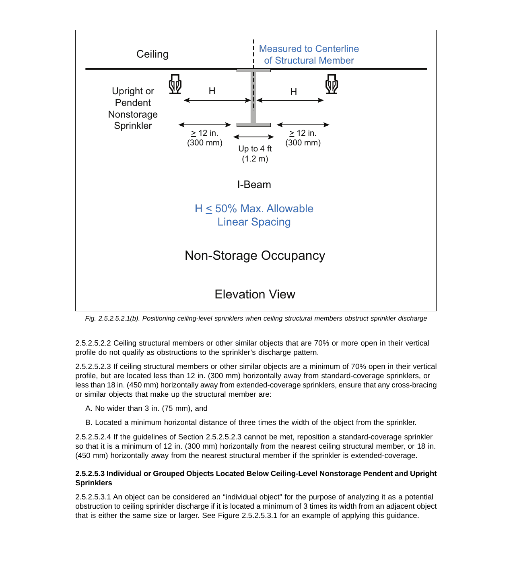
| 判斷項目 | 準則 |
|---|---|
| 結構構材開口率 ≥ 70%（2.5.2.5.2.2） | 不構成撒水頭撒水型態之阻礙 |
| 開口率 ≥ 70% 但水平距離標準涵蓋型撒水頭 < 12 in. (300 mm)，或延伸涵蓋型撒水頭 < 18 in. (450 mm)（2.5.2.5.2.3） | 構材之交叉斜撐（cross-bracing）等組件須同時滿足：(A) 寬度不超過 3 in. (75 mm)；且 (B) 與撒水頭之最小水平距離 ≥ 該物件寬度之 3 倍 |
| 無法滿足上列 2.5.2.5.2.3 準則（2.5.2.5.2.4） | 重新配置撒水頭位置：標準涵蓋型撒水頭距最近結構構材水平距離 ≥ 12 in. (300 mm)；延伸涵蓋型撒水頭 ≥ 18 in. (450 mm) |
Fig. 2.5.2.5.2.1(b) 另示：撒水頭以結構構材（如工字樑）中心線量測之垂直高度差 H 應 < 最大允許直線間距之 50%，且撒水頭與樑之水平距離 > 12 in. (300 mm)（適用樑寬達 4 ft／1.2 m 者）。
2.5.2.5.3個別物件與群組物件之阻礙分析
2.5.2.5.3.1 一物件若與相鄰同等或更大尺寸之物件間，水平距離達該物件寬度之至少 3 倍，則可視為獨立分析之「個別物件（Individual Object）」。2.5.2.5.3.2 反之，若物件與相鄰同等或更大物件間之水平距離小於該較小物件寬度之 3 倍，則應與該相鄰物件合併視為「群組物件（Grouped Object）」。2.5.2.5.3.3 群組物件之整體寬度為各組成物件寬度之總和；物件間之空隙不須納入寬度計算。
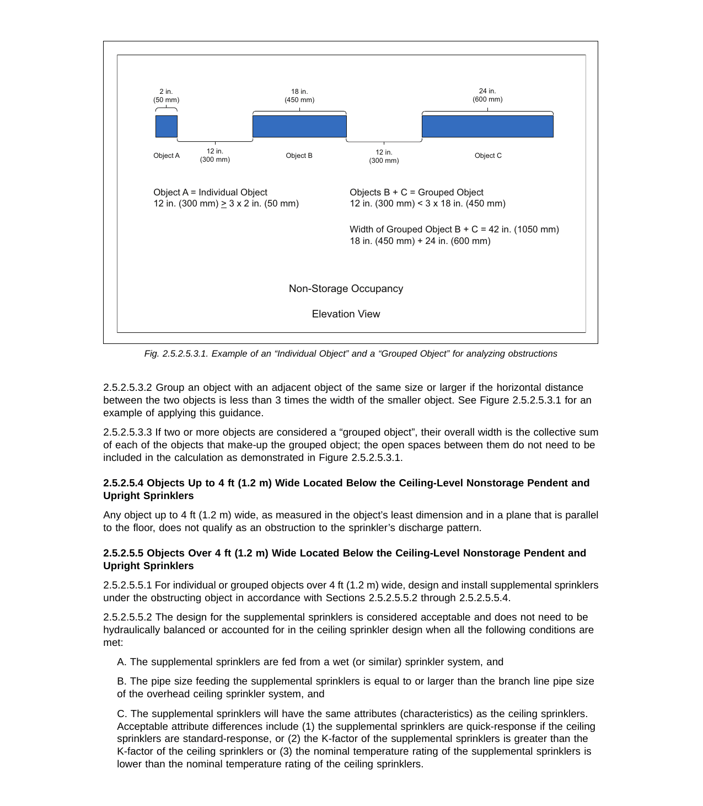
2.5.2.5.4 – 2.5.2.5.5依物件寬度決定是否需增設補充撒水頭
2.5.2.5.4 任何物件（以其最小尺寸、於平行地板之平面上量測）寬度 ≤ 4 ft (1.2 m) 者，不構成撒水頭撒水型態之阻礙。2.5.2.5.5.1 個別或群組物件寬度 > 4 ft (1.2 m) 者，應於該阻礙物件下方設計並安裝補充撒水頭（Supplemental Sprinklers）。
2.5.2.5.5.2 補充撒水頭設計若同時符合下列條件，可視為可接受，不須與天花板層撒水系統進行水力平衡計算或併入其設計：
- 補充撒水頭由濕式（或同類）撒水系統供水
- 供應補充撒水頭之配管管徑 ≥ 天花板層撒水系統支管管徑
- 補充撒水頭屬性與天花板層撒水頭相同；可接受之差異僅限：(1) 天花板層為標準反應時，補充撒水頭為快速反應；或 (2) 補充撒水頭 K 值大於天花板層撒水頭；或 (3) 補充撒水頭標稱動作溫度低於天花板層撒水頭
2.5.2.5.5.3 未符合上述條件時，補充撒水頭配管尺寸依下列方式決定：(A) 以阻礙物底部作為設計用「天花板高度」，自對應用途危害專用資料表查得放水密度；(B) 設計面積內納入該受影響區域所有補充撒水頭，最多 4 個（若由兩條支管供水，可以每線 2 個計入）；(C) 補充撒水頭之需求流量與壓力不須與天花板層撒水系統水力平衡。2.5.2.5.5.4 安裝要求：補充撒水頭應盡量貼近阻礙物件下緣設置於同一垂直平面；水平配置應於阻礙物件投影範圍內，依 Table 2.5.2.3.1.1(a)／(b)／(c) 之直線與面積間距（依用途危害及撒水頭屬性選用）。
2.5.2.5.9輸送機（Conveyor）造成之撒水阻礙判斷
依 Fig. 2.5.2.5.9 流程圖判斷輸送機是否構成天花板層撒水頭撒水之不可接受阻礙，判斷邏輯如下：
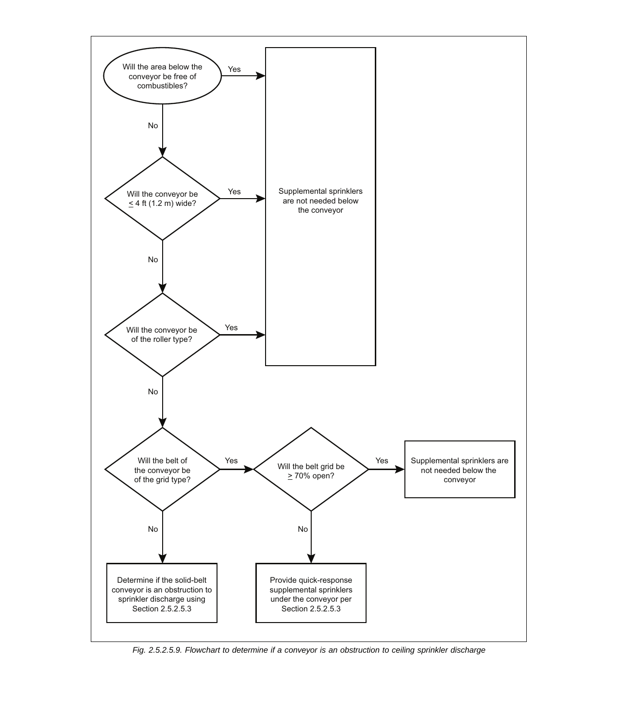
| 條件（依序判斷） | 結論 |
|---|---|
| 輸送機下方區域將保持無可燃物 | 不需於輸送機下方設置補充撒水頭 |
| 輸送機寬度 < 4 ft (1.2 m) | 不需於輸送機下方設置補充撒水頭 |
| 輸送機為滾輪式（roller type） | 不需於輸送機下方設置補充撒水頭 |
| 輸送機皮帶為格柵式（grid type）且開口率 > 70% | 不需於輸送機下方設置補充撒水頭 |
| 輸送機皮帶為格柵式但開口率 ≤ 70% | 應依 2.5.2.5.3 於輸送機下方提供快速反應補充撒水頭 |
| 輸送機皮帶為實心式（solid-belt） | 依 2.5.2.5.3（個別／群組物件分析法）判斷該實心皮帶輸送機是否構成撒水阻礙 |
非儲存型側牆式撒水頭（Nonstorage Sidewall Sprinklers）
2.5.3.1非儲存型側牆式撒水頭一般建議
2.5.3.1.1 側牆式（Sidewall）撒水頭可於同時符合下列條件時使用：
- 用途危害符合 Data Sheet 3-26《非儲存用途消防用水需求》所定義之 HC-1 或 HC-2，且
- 天花板構造屬於平坦、平滑且無阻礙（unobstructed），且
- 防護區域天花板高度不超過 30 ft (9.1 m)。
2.5.3.1.2 有關 K14.0EC (K200EC) 水平側牆式撒水頭之額外一般建議，詳見 2.5.3.4 節。
天花板凹穴（Ceiling Pockets）之側牆式撒水頭設置判斷（2.5.3.1.3）
依 Fig. 2.5.3.1.3 流程圖判斷天花板凹穴範圍內，是否須於主要下層天花板撒水頭之外，另於凹穴內加裝撒水頭。流程圖之判斷邏輯重點如下：
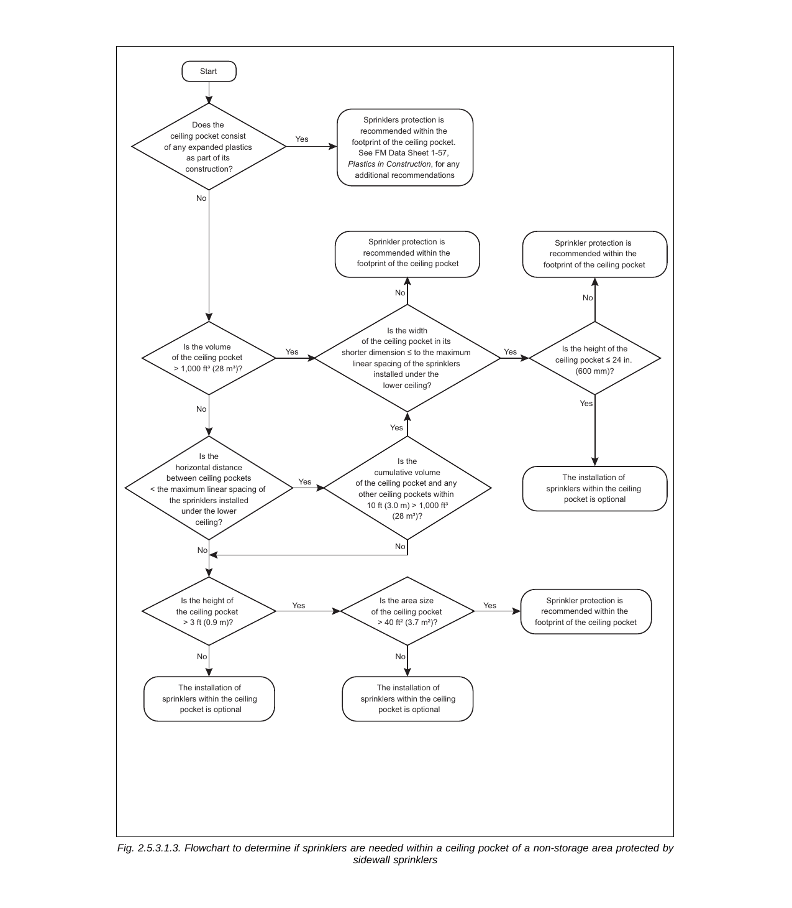
- 凹穴構造若含有發泡塑膠（expanded plastics）材料，直接建議於凹穴範圍內設置撒水頭（另參 Data Sheet 1-57《建築用塑膠材料》之補充建議）。
- 若無發泡塑膠，續依凹穴體積是否 > 1,000 ft³ (28 m³)、凹穴間水平距離是否小於撒水頭最大線性間距、凹穴高度是否 > 3 ft (0.9 m)，逐層判斷是否須強制設置、可選擇性設置，或不需要設置。
- 另一分支則依凹穴短邊寬度是否 ≤ 下層天花板撒水頭最大線性間距、凹穴高度是否 ≤ 24 in. (600 mm)、鄰近 10 ft (3.0 m) 內凹穴之累計體積是否 > 1,000 ft³ (28 m³)、凹穴面積是否 > 40 ft² (3.7 m²) 等條件，決定設置為必要、可選，或建議設置。
2.5.3.2非儲存型側牆式撒水頭之水平配置
水平線性間距（2.5.3.2.1）
2.5.3.2.1.1 若該用途之專屬 Data Sheet 未另行規定天花板撒水頭間距，應依用途危害類別，依下表 2.5.3.2.1.1(a)（危害類別1）或 2.5.3.2.1.1(b)（危害類別2）於無阻礙天花板構造下安裝非儲存型側牆式撒水頭。
| Table 2.5.3.2.1.1(a). 危害類別 1（HC-1）天花板側牆式撒水頭間距 | ||||||
|---|---|---|---|---|---|---|
| 天花板／牆面構造 | K 值 | RTI | 沿裝設牆方向 最小～最大 | 離裝設牆方向 最小～最大 | 面積下限 | 面積上限 |
| 平坦、平滑， 不燃材質裝修 | K5.6 (80) | Quick 或 Standard | 6 ft (1.8 m) ～ 14 ft (4.3 m) | 6 ft (1.8 m) ～ 14 ft (4.3 m) | DNA | 196 ft² (18.2 m²) |
| K5.6EC (80EC) | Quick | 見註1 ～ 16 ft (4.9 m) | 見註1 ～ 20 ft (6.1 m) | DNA | 320 ft² (29.7 m²) | |
| K8.0EC (115EC) | Quick | 見註1 ～ 16 ft (4.9 m) | 見註1 ～ 24 ft (7.3 m) | DNA | 384 ft² (35.7 m²) | |
| 平坦、平滑， 可燃材質裝修 | K5.6 (80) | Quick 或 Standard | 6 ft (1.8 m) ～ 14 ft (4.3 m) | 6 ft (1.8 m) ～ 12 ft (3.7 m) | DNA | 120 ft² (11.1 m²) |
| K5.6EC (80EC) | Quick | 見註1 ～ 16 ft (4.9 m) | 見註1 ～ 20 ft (6.1 m) | DNA | 320 ft² (29.7 m²) | |
| K8.0EC (115EC) | Quick | 見註1 ～ 16 ft (4.9 m) | 見註1 ～ 24 ft (7.3 m) | DNA | 384 ft² (35.7 m²) | |
註1：最小線性間距係為避免撒水頭被安裝於相鄰延伸涵蓋型（Extended Coverage）側牆式撒水頭之防護範圍內所需之距離。
| Table 2.5.3.2.1.1(b). 危害類別 2（HC-2）天花板側牆式撒水頭間距 | ||||||
|---|---|---|---|---|---|---|
| 天花板／牆面構造 | K 值 | RTI | 沿裝設牆方向 最小～最大 | 離裝設牆方向 最小～最大 | 面積下限 | 面積上限 |
| 平坦、平滑，不燃材質裝修 | K5.6 (80) | Quick 或 Standard | 6 ft (1.8 m) ～ 10 ft (3.0 m) | 6 ft (1.8 m) ～ 10 ft (3.0 m) | DNA | 100 ft² (9.3 m²) |
| 平坦、平滑，可燃材質裝修 | K5.6 (80) | Quick 或 Standard | 6 ft (1.8 m) ～ 10 ft (3.0 m) | 6 ft (1.8 m) ～ 10 ft (3.0 m) | DNA | 80 ft² (7.4 m²) |
2.5.3.2.1.2 撒水頭間之線性距離應沿天花板斜面量測，而非以樓地板水平視角量測。
2.5.3.2.1.3 非儲存型側牆式撒水頭應沿連續之牆、過樑（lintel）或類似結構物設置，且僅限用於最大天花板坡度 2/12（10°）以下之平坦、平滑天花板構造。
2.5.3.2.1.4 側牆式撒水頭可安裝於非連續垂直牆（如過樑、天花板收邊牆板 soffits）上，惟須同時符合下列條件：
- 該非連續牆須緊貼上方天花板，且
- 該牆須向下垂直延伸至少 2 in. (50 mm)，超過撒水頭感熱元件中心線之下方，且
- 符合 2.5.3.3 節所定撒水盤（deflector）垂直位置之相關建議。
2.5.3.2.1.5 非儲存型側牆式撒水頭之撒水盤應平行於天花板設置。
2.5.3.2.1.6 有關 K14.0EC (K200EC) 水平側牆式撒水頭之水平線性間距建議，詳見 2.5.3.4 節。
撒水頭與牆面／牆角之水平距離（2.5.3.2.2）
2.5.3.2.2.1 非儲存型側牆式撒水頭應依 Fig. 2.5.3.2.2.1(a) 所示，以垂直於牆面量測之水平距離安裝；與牆角之關係則依 Fig. 2.5.3.2.2.1(b) 辦理。
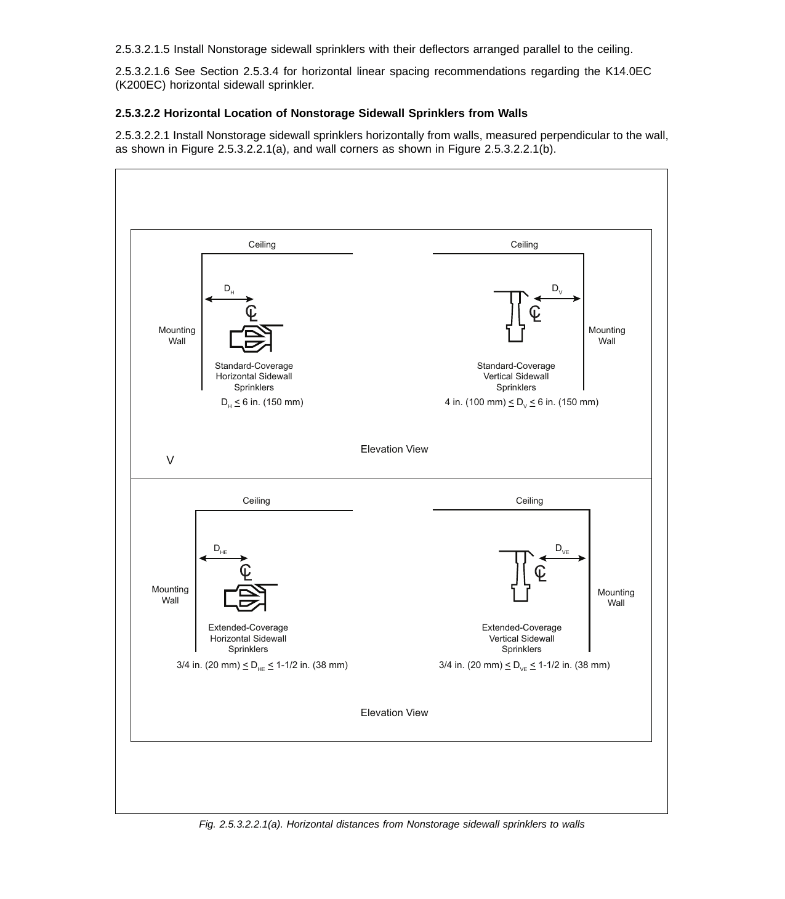
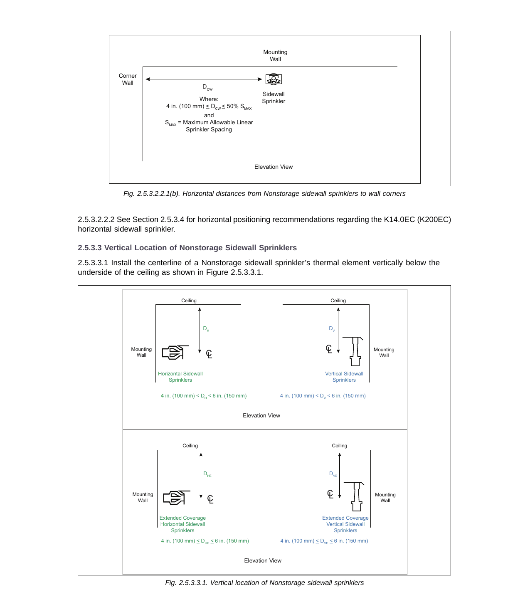
| 撒水頭類型 | 與裝設牆之水平距離 |
|---|---|
| 標準涵蓋型水平側牆式（Standard-Coverage Horizontal Sidewall） | DH < 6 in. (150 mm) |
| 標準涵蓋型垂直側牆式（Standard-Coverage Vertical Sidewall） | 4 in. (100 mm) < DV < 6 in. (150 mm) |
| 延伸涵蓋型水平側牆式（Extended-Coverage Horizontal Sidewall） | 3/4 in. (20 mm) < DHE < 1-1/2 in. (38 mm) |
| 延伸涵蓋型垂直側牆式（Extended-Coverage Vertical Sidewall） | 3/4 in. (20 mm) < DVE < 1-1/2 in. (38 mm) |
| 與牆角（corner wall）之水平距離 DCW（所有側牆式撒水頭通用） | 4 in. (100 mm) < DCW < 50% SMAX（SMAX 為撒水頭最大允許線性間距） |
2.5.3.2.2.2 有關 K14.0EC (K200EC) 水平側牆式撒水頭之水平配置建議，詳見 2.5.3.4 節。
2.5.3.3非儲存型側牆式撒水頭之垂直位置
2.5.3.3.1 應依 Fig. 2.5.3.3.1 所示，將非儲存型側牆式撒水頭感熱元件之中心線安裝於天花板底面垂直下方之規定範圍內：
| 撒水頭類型 | 撒水盤距天花板底面之垂直距離 |
|---|---|
| 標準涵蓋型水平側牆式（DH） | 4 in. (100 mm) < DH < 6 in. (150 mm) |
| 標準涵蓋型垂直側牆式（DV） | 4 in. (100 mm) < DV < 6 in. (150 mm) |
| 延伸涵蓋型水平側牆式（DHE） | 4 in. (100 mm) < DHE < 6 in. (150 mm) |
| 延伸涵蓋型垂直側牆式（DVE） | 4 in. (100 mm) < DVE < 6 in. (150 mm) |
2.5.3.3.2 特定撒水頭於天花板下方可允許之加大垂直距離，請參閱 Approval Guide。
2.5.3.3.3 天花板坡度超過 1/12（5°）時，應依 Fig. 2.5.3.3.3 所示位置設置側牆式撒水頭：於坡度介於 5° 至 10° 之間（10° > θ > 5°）時，撒水頭應設置於距屋脊（ceiling peak）水平最大 3 ft (0.9 m)範圍內。
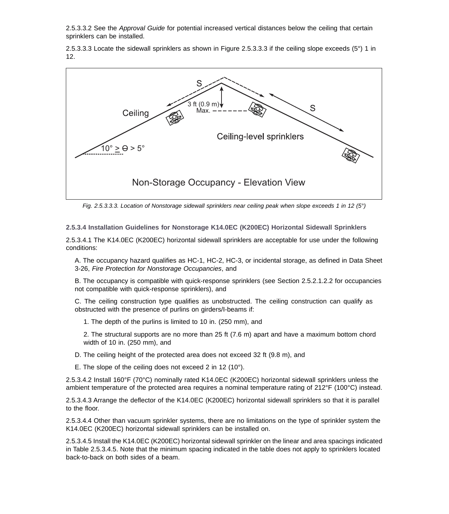
2.5.3.4K14.0EC (K200EC) 水平側牆式撒水頭安裝準則
2.5.3.4.1 K14.0EC (K200EC) 水平側牆式撒水頭可於同時符合下列條件時使用：
- 用途危害符合 Data Sheet 3-26 所定義之 HC-1、HC-2、HC-3 或附屬儲存（incidental storage），且
- 該用途須與快速反應型（quick-response）撒水頭相容（不相容用途詳 2.5.2.1.2.2 節），且
- 天花板構造須為無阻礙（unobstructed）；惟若同時符合下列兩項，含桁條（purlins）之樑／工字樑（girders/I-beams）天花板構造仍可視為符合本項：
- 桁條深度 ≤ 10 in. (250 mm)；且
- 結構支撐間距 ≤ 25 ft (7.6 m)，且下弦（bottom chord）最大寬度 ≤ 10 in. (250 mm)
- 防護區域天花板高度不超過 32 ft (9.8 m)，且
- 天花板坡度不超過 2/12（10°）。
2.5.3.4.2 應安裝標稱動作溫度 160°F (70°C) 之 K14.0EC (K200EC) 水平側牆式撒水頭，除非防護區域周溫要求採 212°F (100°C) 標稱溫級。
2.5.3.4.3 K14.0EC (K200EC) 水平側牆式撒水頭之撒水盤應配置為平行於地板。
2.5.3.4.4 除真空式撒水系統外，K14.0EC (K200EC) 水平側牆式撒水頭可安裝於任何類型之撒水系統，無其他限制。
2.5.3.4.5 應依 Table 2.5.3.4.5 所列線性與面積間距安裝 K14.0EC (K200EC) 水平側牆式撒水頭：
| Table 2.5.3.4.5. 非儲存型 K14.0EC (K200EC) 水平側牆式撒水頭適用於危害類別 1、2、3 之建議間距 | |||||
|---|---|---|---|---|---|
| 天花板構造類型 | K 值 | RTI | 沿裝設牆方向 最小～最大 | 離裝設牆方向 最小～最大 | 面積下限～上限 |
| 依 2.5.3.4.1(C) 規定 | K14.0EC (200EC) | Quick | 8 ft (2.4 m) ～ 14 ft (4.3 m) | 8 ft (2.4 m) ～ 12.5 ft (3.8 m) | 64 ft² (5.9 m²) ～ 175 ft² (16.3 m²) |
2.5.3.4.6 應將撒水頭安裝於主要結構構件（primary structural member）之兩側，並呈背對背配置，其水平位置依 Fig. 2.5.3.4.6 辦理：
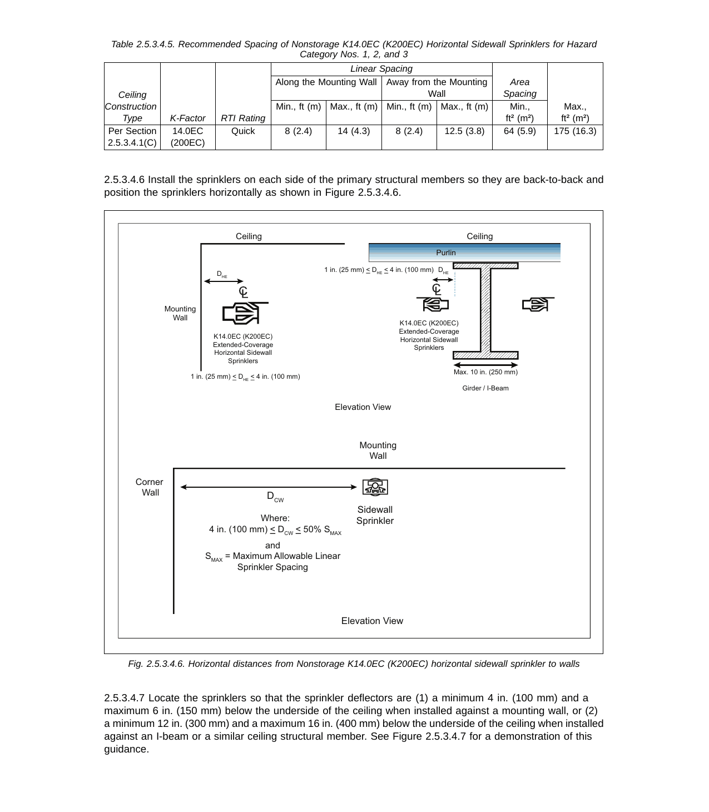
| 安裝位置 | 水平距離（DHE） |
|---|---|
| 裝設牆側 | 1 in. (25 mm) < DHE < 4 in. (100 mm) |
| 桁條（purlin）／工字樑（girder）側，桁條/工字樑最大深度 10 in. (250 mm) | 1 in. (25 mm) < DHE < 4 in. (100 mm) |
| 與牆角之水平距離 DCW（同 2.5.3.2.2 節通用規則） | 4 in. (100 mm) < DCW < 50% SMAX |
2.5.3.4.7 撒水盤應定位於天花板底面下方之下列範圍（詳 Fig. 2.5.3.4.7）：
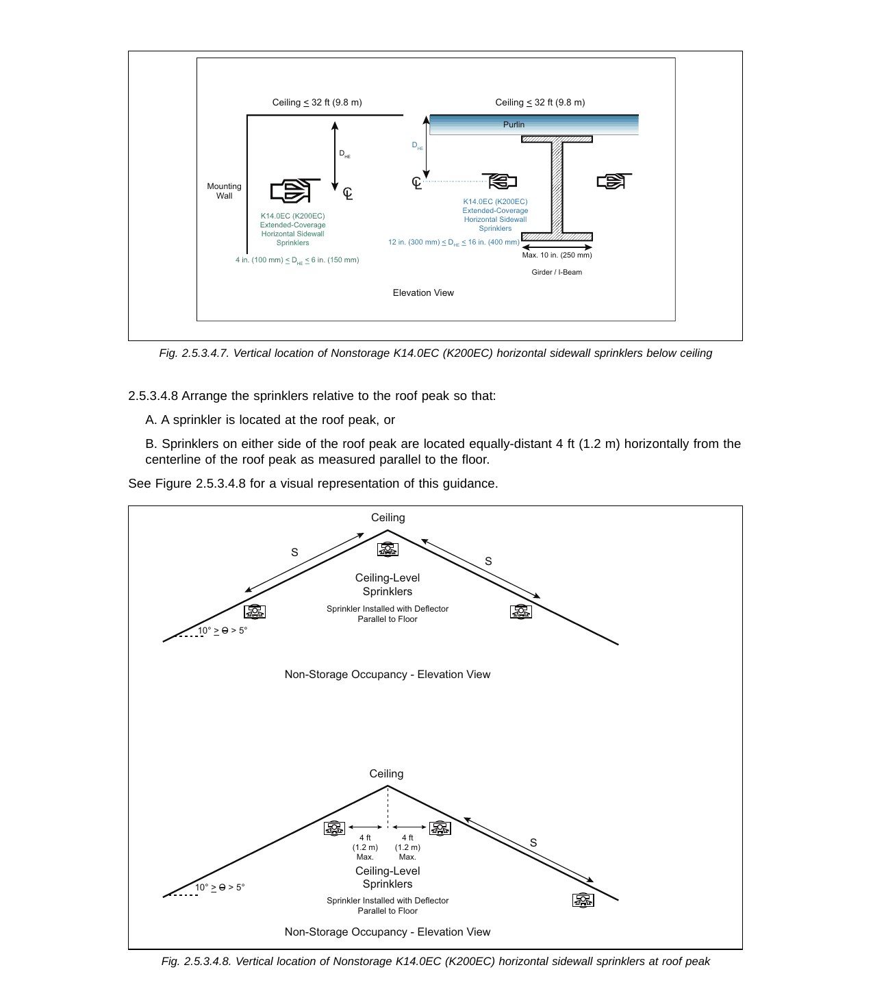
- 安裝於裝設牆上時：最小 4 in. (100 mm)、最大 6 in. (150 mm) 低於天花板底面；或
- 安裝於工字樑或類似天花板結構構件上時：最小 12 in. (300 mm)、最大 16 in. (400 mm) 低於天花板底面。
2.5.3.4.8 應依下列方式配置撒水頭與屋脊（roof peak）之相對位置（詳 Fig. 2.5.3.4.8）：
- 於屋脊處設置一只撒水頭；或
- 於屋脊兩側等距設置撒水頭，每側距屋脊中心線水平 4 ft (1.2 m)（以平行於地板量測）。
2.5.3.4.9 撒水盤與任何受防護危害物之間，最小淨距為 10 ft (3.0 m)。
2.5.3.4.10 應依 2.5.3.5 節之準則，評估撒水盤下方物體是否可能對撒水頭放水型態造成阻礙。
2.5.3.4.11 採用 K14.0EC (K200EC) 水平側牆式撒水頭進行系統設計時，應維持最小工作壓力 7 psi (0.5 bar)。
2.5.3.5天花板側牆式撒水頭之阻礙物判定
一般建議（2.5.3.5.1）
2.5.3.5.1.1／2.5.3.5.1.2 依 Fig. 2.5.3.5.1.1(a)/(b)（離裝設牆方向）及 Fig. 2.5.3.5.1.2(a)/(b)（沿裝設牆方向），凡完全位於圖示「棋盤格」範圍內之物體，不視為對撒水頭放水型態之阻礙（標準涵蓋型與延伸涵蓋型側牆式撒水頭皆適用各自對應之棋盤格範圍）。
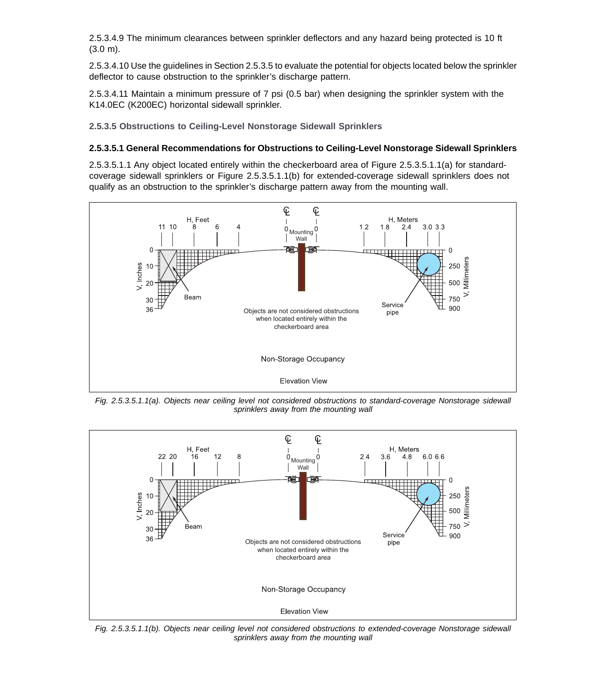
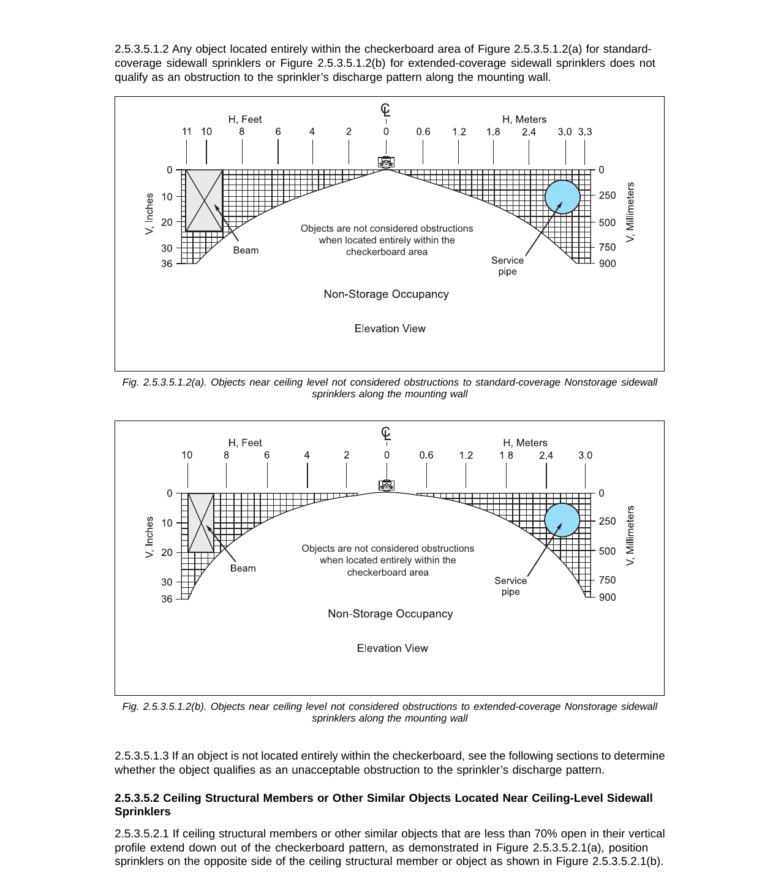
2.5.3.5.1.3 若物體並非完全位於棋盤格範圍內，應依下列各節判斷該物體是否構成不可接受之阻礙。
鄰近天花板側牆式撒水頭之結構構件或類似物體（2.5.3.5.2）
2.5.3.5.2.1 若天花板結構構件或類似物體之垂直斷面開放率低於 70%，且延伸超出棋盤格範圍（如 Fig. 2.5.3.5.2.1(a) 所示），應將撒水頭改設置於該結構構件或物體之另一側（如 Fig. 2.5.3.5.2.1(b) 所示；該圖並標示樑寬最大 4 ft (1.2 m)，量測至結構構件中心線之距離 H 須 > 12 in. (300 mm)，且 H 須小於最大允許線性間距之 50%）。
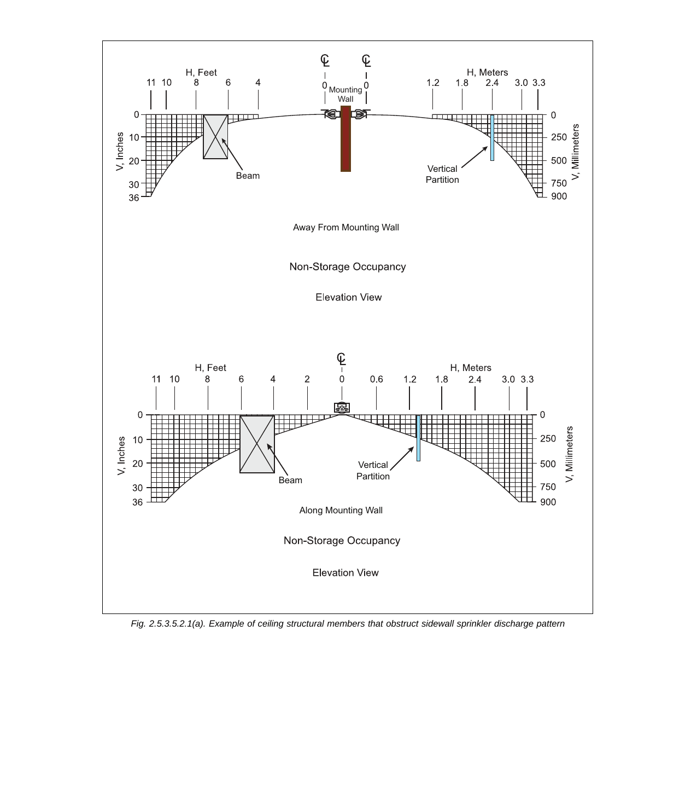
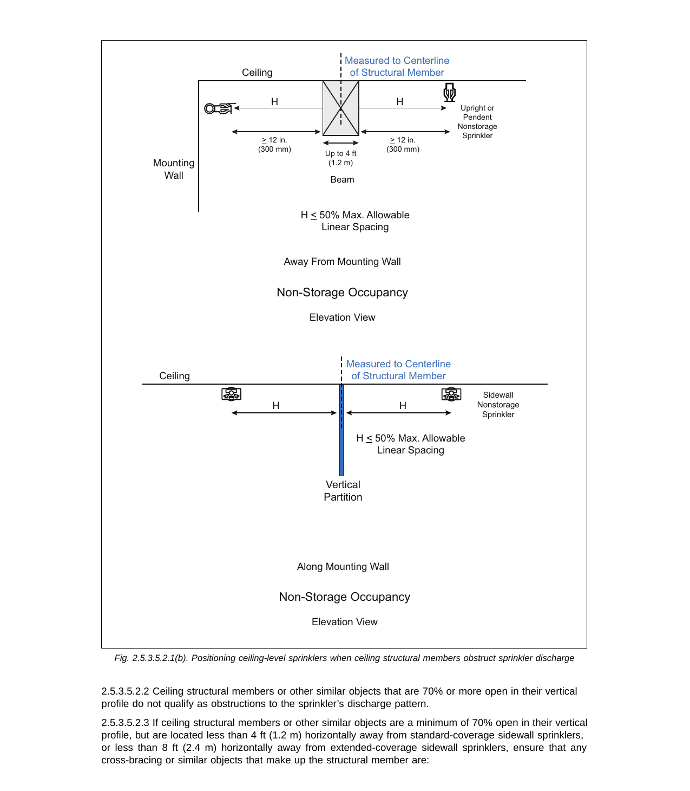
2.5.3.5.2.2 天花板結構構件或類似物體之垂直斷面開放率達 70% 以上者，不視為對撒水頭放水型態之阻礙。
2.5.3.5.2.3 開放率達 70% 以上，但水平距離小於下列數值者：標準涵蓋型側牆式撒水頭 4 ft (1.2 m)、延伸涵蓋型側牆式撒水頭 8 ft (2.4 m)，則構成該結構構件之交叉支撐（cross-bracing）等物體須同時符合：
- 寬度不超過 3 in. (75 mm)，且
- 與撒水頭之最小水平距離為該物體寬度之 3 倍以上。
2.5.3.5.2.4 若無法符合 2.5.3.5.2.3 節之準則，應將撒水頭改設置於結構構件或物體之另一側（同 Fig. 2.5.3.5.2.1(b)）。
2.5.3.5.2.5 若非連續垂直牆造成之遮蔽區域，其深度超過側牆式撒水頭下方 8 in. (200 mm)，於側牆式撒水頭防護區域內，該可燃遮蔽區域下方仍應加裝非儲存型撒水頭（見 Fig. 2.5.3.5.2.5）。
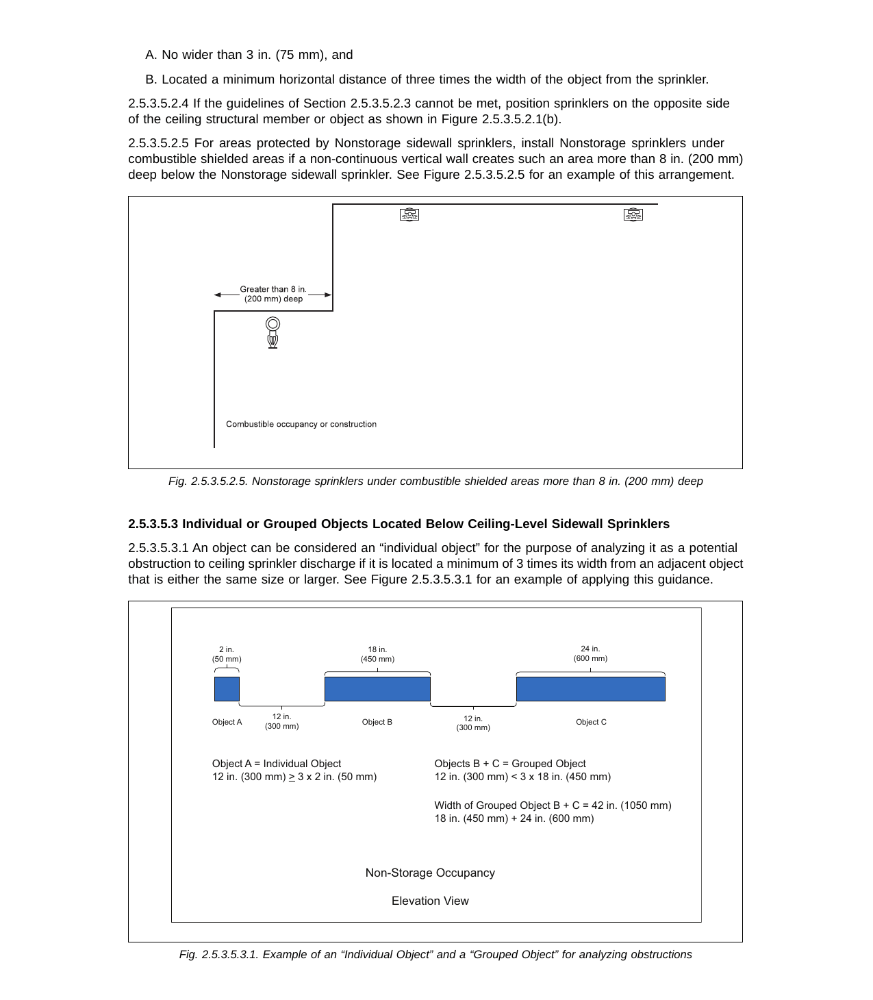
天花板側牆式撒水頭下方之單一或分組物體（2.5.3.5.3）
2.5.3.5.3.1 物體與同尺寸或較大之鄰近物體間，若水平距離達該物體寬度 3 倍以上，可視為分析阻礙時之「個別物體（individual object）」（例如：物體寬度 12 in. (300 mm)，與鄰近物體間隔 2 in. (50 mm)，因 12 in. > 3×2 in.，故為個別物體）。
2.5.3.5.3.2 若物體與同尺寸或較大之鄰近物體間，水平距離小於較小物體寬度之 3 倍，應將兩者視為「分組物體（grouped object）」（例如兩物體間距 18 in. (450 mm) 小於 3×較小物體寬度時即應分組）。
2.5.3.5.3.3 若二個以上物體構成「分組物體」，其整體寬度為各構成物體寬度之總和；物體間之空隙不須計入整體寬度計算（例如兩物體寬度分別為 18 in. (450 mm) 與 24 in. (600 mm) 時，分組後整體寬度為 42 in. (1050 mm)）。
寬度 4 ft (1.2 m) 以下物體（2.5.3.5.4）
寬度 4 ft (1.2 m) 以下之物體，不視為對撒水頭放水型態之阻礙。
寬度超過 4 ft (1.2 m) 物體與補充撒水頭（2.5.3.5.5）
2.5.3.5.5.1 個別或分組物體寬度超過 4 ft (1.2 m) 者，應依 2.5.3.5.5.2～2.5.3.5.5.4 節於該阻礙物下方設計並安裝補充撒水頭（supplemental sprinklers）。
2.5.3.5.5.2 同時符合下列條件時，補充撒水頭之設計視為可接受，不須與天花板撒水系統進行水力平衡或納入天花板撒水頭設計計算：
- 補充撒水頭由濕式（或類似）撒水系統供應，且
- 供應補充撒水頭之配管管徑，等於或大於上方天花板撒水系統之支管管徑，且
- 補充撒水頭與天花板撒水頭具相同屬性（特性）。可接受之屬性差異包括：(1) 補充撒水頭為下垂式或直立式而非側牆式；(2) 天花板撒水頭為標準反應型時，補充撒水頭可為快速反應型；(3) 補充撒水頭之 K 值大於天花板撒水頭；(4) 補充撒水頭之標稱溫級低於天花板撒水頭。
2.5.3.5.5.3 未符合 2.5.3.5.5.2 節準則時，為決定供應補充撒水頭之配管尺寸，其設計依下列方式辦理：
- 以該阻礙物底部作為設計用之「天花板高度」，依該用途專屬 Data Sheet 取得防護密度建議，且
- 將受影響區域內所有補充撒水頭（最多 4 只）納入設計面積；若由多條支管供應，可以兩條支管、每條 2 只之方式計入 4 只設計撒水頭，且
- 補充撒水頭設計所需之流量與壓力，不須與上方天花板撒水系統進行水力平衡。
2.5.3.5.5.4 補充撒水頭應依下列方式安裝：
- 將補充撒水頭定位於盡可能貼近阻礙物底面之垂直平面上；
- 依阻礙物用途危害及所安裝補充撒水頭之屬性，依 Table 2.5.2.3.1.1(a)、(b) 或 (c) 所定線性與面積間距，於阻礙物範圍內水平安裝補充撒水頭。
開放格柵天花板造成之阻礙（2.5.3.5.6）
2.5.3.5.6.1 側牆式撒水頭防護區域內不得安裝開放格柵天花板（open-grid ceiling，定義見附錄 A），除非該用途依 Data Sheet 3-26 分類為 HC-1 危害類別。
2.5.3.5.6.2 於 HC-1 用途場所設置由均勻開口構成、開口率達天花板面積 70% 以上之開放格柵天花板時，天花板側牆式撒水頭應依 Table 2.5.3.5.6.2 辦理間距設計：
| 開放格柵天花板垂直深度 | 撒水盤與格柵頂部之淨距 | 最大允許線性間距 |
|---|---|---|
| ≤ 1/2 in. (13 mm) | ≥ 18 in. (450 mm) | 10 ft (3.0 m) |
| ≥ 24 in. (600 mm) | 12 ft (3.7 m) | |
| ≥ 48 in. (1200 mm) | 視為無開放格柵天花板存在 | |
| > 1/2 in. (13 mm) | ≥ 48 in. (1200 mm) | 視為無開放格柵天花板存在 |
| ≤ 1/4 in. (7 mm) | ≥ 24 in. (600 mm) | 10 ft (3.0 m) |
| ≥ 36 in. (900 mm) | 視為無開放格柵天花板存在 | |
| > 1/4 in. (7 mm) | ≥ 48 in. (1200 mm) | 視為無開放格柵天花板存在 |
儲存型撒水頭（一）：適用範圍與通風口保護
2.5.4.1儲存型撒水頭一般建議
應依對應用途別資料表（occupancy-specific data sheet）指示，判斷該用途是否可視為「儲存（Storage）」處理；若可，再依下列程序決定適用之儲存型撒水頭：
- 確定該用途危害之專屬資料表（occupancy-specific data sheet）
- 確定天花板層級可採用之防護選項
- 依用途專屬資料表（如有指示）確認撒水頭之涵蓋型式、K 值、方向（upright/pendent）、RTI 與溫級屬性
- 若防護區域存在環境溫度可能超過 100°F (38°C) 之區域，應依 Table 2.5.1.1.1 決定天花板層級撒水頭之可接受溫級；否則進入下一步
- 若用途專屬資料表未指示可用 K 值，依 Table 2.5.4.1.1 決定天花板層級撒水頭之可接受 K 值
- 若用途專屬資料表未指示是否可用快速反應（Quick-Response）撒水頭，依 2.5.4.1.2 判斷快速反應撒水頭是否適用
2.5.4.1.1儲存型撒水頭之可接受 K 值
Table 2.5.4.1.1 列出 FM Approved 儲存型撒水頭之公稱 K 值。
| 公稱 K 值，gpm/(psi)0.5（L/min/[bar]0.5） | 公稱管牙尺寸，in.（mm） |
|---|---|
| 11.2 (160) | 1/2 或 3/4 (15 或 20)1 |
| 14.0 (200) | 3/4 (20) |
| 16.8 (240) | 3/4 (20) |
| 19.6 (280) | 1 (25) |
| 22.4 (320) | 1 (25) |
| 25.2 (360) | 1 (25) |
| 28.0 (400) | 1 (25) |
| 33.6 (480) | 1-1/4 (32) |
註1：公稱 1/2 in. (15 mm) NPT 牙徑之 K11.2 (K160) 撒水頭，僅限於作為既設 K8.0 (K115) 或更小撒水頭之汰換／改裝選項時方可使用。
2.5.4.1.2儲存型撒水頭 RTI 等級（標準型／快速反應）之判定
2.5.4.1.2.1 標準反應（standard-response）儲存型撒水頭可用於濕式與乾式撒水系統。
2.5.4.1.2.2 快速反應（quick-response）儲存型撒水頭僅可用於濕式撒水系統；且下列儲存或高放熱型用途不得使用快速反應撒水頭：
- 可燃液體之噴塗作業
- 使用可燃液體之液壓設備
- 存在可燃液體（非屬製程附帶且已置於容量 ≤5 gal (19 L) 安全容器內者除外）之用途
- 油箱內有燃油之車輛組裝或維修區域
- 存在大面積遮蔽撒水放水之用途
- 天花板及／或建築結構支撐構材上可能堆積油污、粉塵、棉絮或類似可燃殘留物之區域
- 用途專屬資料表未建議使用快速反應撒水頭之場所
2.5.4.1.3儲存型撒水頭區域之重力式排熱／排煙口
2.5.4.1.3.1 天花板層級撒水頭防護之建築物，不應設置重力式排熱口（gravity heat vent）或重力式排煙口（gravity smoke vent）。
2.5.4.1.3.2 若無法避免設置此類通風口，通風口面積 ≤4 ft² (0.4 m²) 時採下表（對應原文 Fig. 2.5.4.1.3.2(a)）決定所需之補償措施；面積大於 4 ft² 時採後續之表（對應原文 Fig. 2.5.4.1.3.2(b)）。
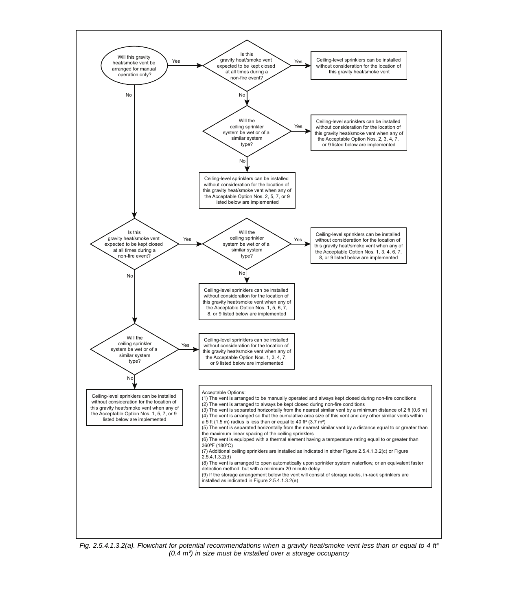
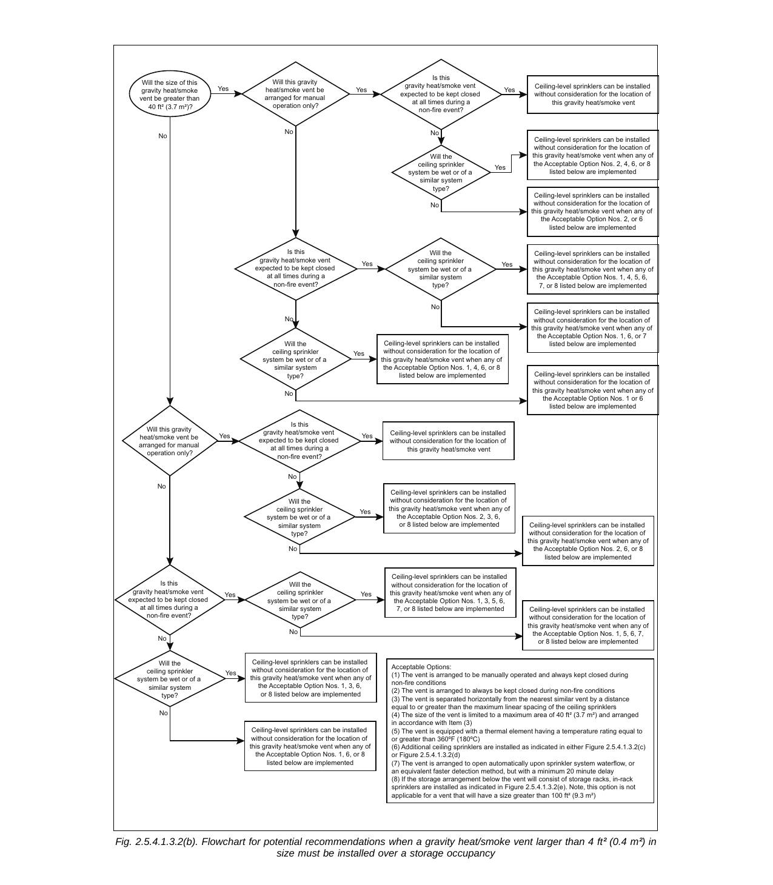
通風口 ≤4 ft² (0.4 m²) 時之判斷（Fig. 2.5.4.1.3.2(a)）
| 是否僅限人工操作 | 非火災時是否恆保持關閉 | 天花板撒水系統是否為濕式或同等系統 | 結論／適用可接受選項編號 |
|---|---|---|---|
| 是 | 是 | — | 免特別考量即可裝設天花板撒水頭 |
| 是 | 否 | 是 | 選項 2、3、4、7 或 9 任一 |
| 是 | 否 | 否 | 選項 2、5、7 或 9 任一 |
| 否 | 是 | 是 | 選項 1、3、4、6、7、8 或 9 任一 |
| 否 | 是 | 否 | 選項 1、5、6、7、8 或 9 任一 |
| 否 | 否 | 是 | 選項 1、3、4、7 或 9 任一 |
| 否 | 否 | 否 | 選項 1、5、7 或 9 任一 |
通風口 >4 ft² (0.4 m²) 時之判斷（Fig. 2.5.4.1.3.2(b)）
| 通風口面積 | 是否僅限人工操作 | 非火災時是否恆保持關閉 | 撒水系統是否濕式或同等 | 結論／適用選項編號 |
|---|---|---|---|---|
| >40 ft² (3.7 m²) | 是 | 是 | — | 免特別考量 |
| 是 | 否 | 是 | 選項 2、4、6 或 8 任一 | |
| 是 | 否 | 否 | 選項 2 或 6 任一 | |
| 否 | 是 | 是 | 選項 1、4、5、6、7 或 8 任一 | |
| 否 | 是 | 否 | 選項 1、6 或 7 任一 | |
| 否 | 否 | 是／否 | 是→選項1、4、6或8；否→選項1或6 | |
| 4～40 ft² (0.4～3.7 m²) | 是 | 是 | — | 免特別考量 |
| 是 | 否 | 是 | 選項 2、3、6 或 8 任一 | |
| 是 | 否 | 否 | 選項 2、6 或 8 任一 | |
| 否 | 是 | 是 | 選項 1、3、5、6、7 或 8 任一 | |
| 否 | 是 | 否 | 選項 1、5、6、7 或 8 任一 | |
| 否 | 否 | 是／否 | 是→選項1、3、6或8；否→選項1、6或8 |
可接受選項（適用 ≤4 ft² 通風口，Fig.(a)）
- (1) 通風口設定為人工操作，且非火災時恆保持關閉
- (2) 通風口設定為非火災時恆保持關閉
- (3) 與最近同類通風口水平間距 ≥2 ft (0.6 m)
- (4) 此通風口與 5 ft (1.5 m) 半徑內其他同類通風口之合計面積 ≤40 ft² (3.7 m²)
- (5) 與最近同類通風口水平間距 ≥ 天花板撒水頭最大容許間距
- (6) 通風口裝設額定溫度 ≥360°F (180°C) 之感溫元件
- (7) 依 Fig. 2.5.4.1.3.2(c) 或 (d) 增設天花板層級撒水頭
- (8) 通風口設定為撒水系統動作（或等效更快之偵測方式）時自動開啟，惟至少延遲 20 分鐘
- (9) 若通風口下方為貨架儲存，依 Fig. 2.5.4.1.3.2(e) 設置貨架內撒水頭
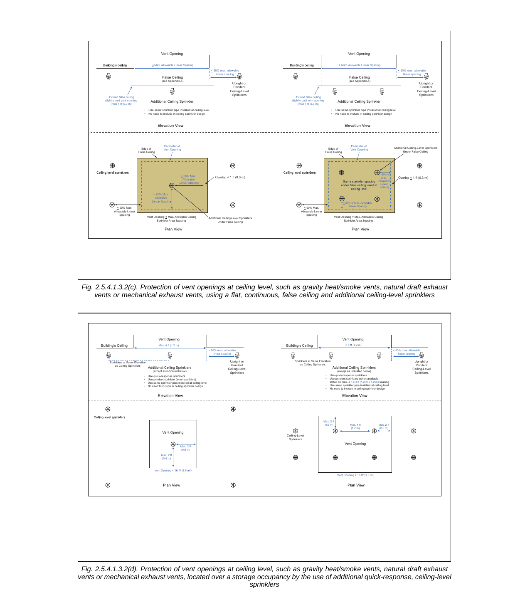
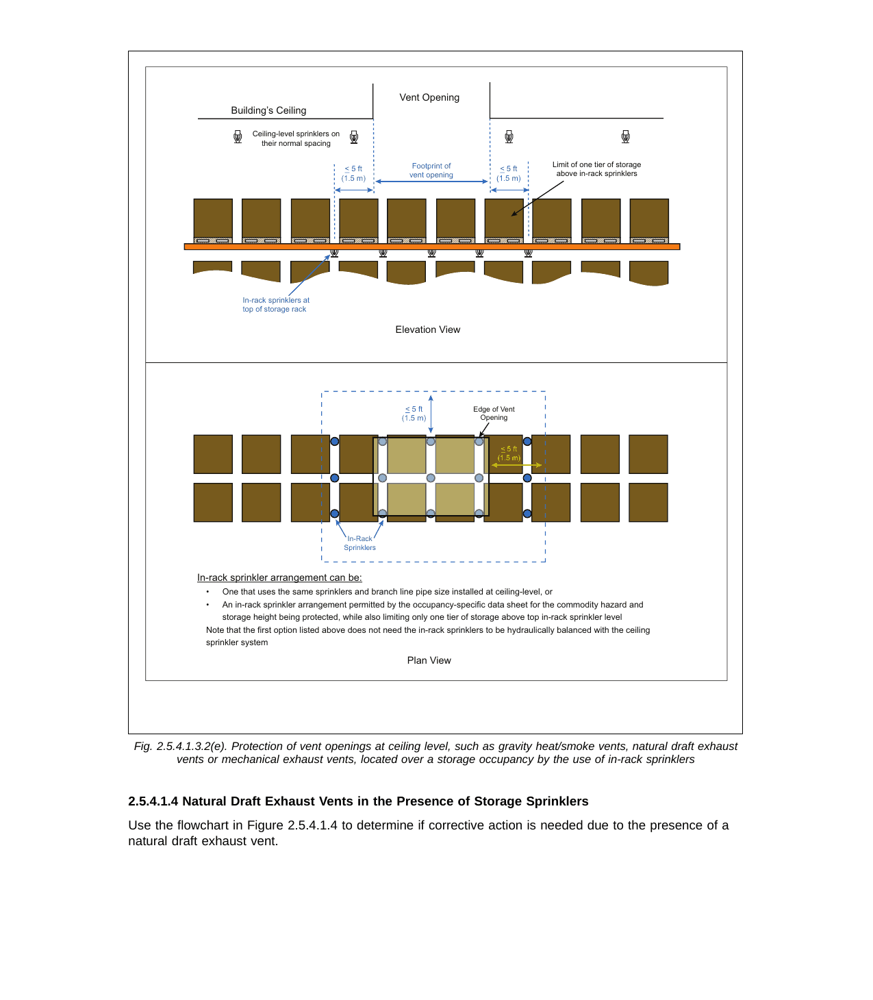
可接受選項（適用 >4 ft² 通風口，Fig.(b)）
- (1) 通風口設定為人工操作，且非火災時恆保持關閉
- (2) 通風口設定為非火災時恆保持關閉
- (3) 與最近同類通風口水平間距 ≥ 天花板撒水頭最大容許間距
- (4) 通風口面積限制在 40 ft² (3.7 m²) 以內，並依第(3)項配置
- (5) 通風口裝設額定溫度 ≥360°F (180°C) 之感溫元件
- (6) 依 Fig. 2.5.4.1.3.2(c) 或 (d) 增設天花板層級撒水頭
- (7) 通風口設定為撒水系統動作（或等效更快之偵測方式）時自動開啟，惟至少延遲 20 分鐘
- (8) 若通風口下方為貨架儲存，依 Fig. 2.5.4.1.3.2(e) 設置貨架內撒水頭；此選項不適用於面積 >100 ft² (9.3 m²) 之通風口
以「假天花板＋增設撒水頭」防護通風口（2.5.4.1.3.3／Fig. 2.5.4.1.3.2(c)）
採用平整連續之假天花板（false ceiling）搭配增設之天花板層級撒水頭時：假天花板應以最小 22 號規格 (0.7 mm) 鋼板或同等不燃材料製作，並固定至可承受最小 3 lb/ft² (14.6 kg/m²) 上舉風壓之強度；次佳但仍可接受之替代材料為最小 3/8 in. (10 mm) 合板（或類似材料）。假天花板應略微延伸超過通風口邊緣（最大 1 ft [0.3 m]）。
- 通風口尺寸 < 天花板撒水頭最大容許間距：假天花板下方增設 upright 或 pendent 型撒水頭，可沿用天花板層級之撒水管路，免納入天花板撒水頭設計
- 通風口尺寸 > 天花板撒水頭最大容許之撒水頭涵蓋面積間距：假天花板下方另需增設之天花板層級撒水頭，彼此重疊 <1 ft (0.3 m)，且與最大容許間距相比 <50%
以「增設快速反應撒水頭」防護通風口，不設假天花板（Fig. 2.5.4.1.3.2(d)）
- 通風口面積 <16 ft² (1.5 m²)：於通風口周邊（距邊緣約 2 ft [0.6 m] 內）增設與天花板撒水頭同高程之快速反應撒水頭，優先採 pendent 型，沿用天花板層級撒水管路，免納入天花板撒水頭設計
- 通風口面積 >16 ft² (1.5 m²)：於通風口下方以最大 4 ft × 4 ft (1.2 m × 1.2 m) 間距增設快速反應撒水頭，優先採 pendent 型，且應納入天花板撒水頭設計
以「貨架內撒水頭」防護通風口（Fig. 2.5.4.1.3.2(e)）
當通風口下方之儲存配置為貨架儲存時，可於貨架頂部設置貨架內撒水頭作為替代防護方式：貨架內撒水頭距通風口開口邊緣（前後左右）應 <5 ft (1.5 m)，且貨架內撒水頭上方僅限一層儲存（one tier of storage）。貨架內撒水頭之配置可為：
- 採用與天花板層級相同型式撒水頭及支管管徑者——此選項不需與天花板撒水系統進行水力平衡（hydraulically balanced）
- 依用途專屬資料表對該商品危害與儲存高度所允許之貨架內撒水頭配置，惟仍須限制貨架內撒水頭最上層以上僅一層儲存
2.5.4.1.4儲存型撒水頭區域之自然抽拔排氣口
若須於儲存用途上方天花板層級設置自然抽拔排氣口（natural draft exhaust vent），依下表決定是否須採取補償措施：
| 通風口面積 | 天花板撒水系統是否濕式或同等系統 | 結論／適用選項編號 |
|---|---|---|
| >100 ft² (9.3 m²) | 是 | 選項 4、5 或 7 任一 |
| >100 ft² (9.3 m²) | 否 | 選項 5 |
| 40～100 ft² (3.7～9.3 m²) | 是 | 選項 4、5、6 或 8 任一 |
| 40～100 ft² (3.7～9.3 m²) | 否 | 選項 5 |
| 4～40 ft² (0.4～3.7 m²) | 是 | 選項 3、5、6 或 9 任一 |
| 4～40 ft² (0.4～3.7 m²) | 否 | 選項 5、6 或 8 任一 |
| ≤4 ft² (0.4 m²) | 是 | 選項 1、2、5、6 或 9 任一 |
| ≤4 ft² (0.4 m²) | 否 | 選項 3、5、6 或 9 任一 |
可接受選項：(1) 與最近同類通風口水平間距 ≥2 ft (0.6 m) (2) 此通風口與 5 ft (1.5 m) 半徑內其他同類通風口合計面積 ≤40 ft² (3.7 m²) (3) 與最近同類通風口水平間距 ≥天花板撒水頭最大容許間距 (4) 通風口面積限制在 40 ft² (3.7 m²) 以內並依第(3)項配置 (5) 依 Fig. 2.5.4.1.3.2(c) 或 (d) 增設天花板層級撒水頭 (6) 若下方為貨架儲存，依 Fig. 2.5.4.1.3.2(e) 設置貨架內撒水頭 (7) 依(6)設置貨架內撒水頭，且通風口設定為貨架內撒水頭出水警報動作時自動關閉 (8) 通風口設定為其內部感熱或感煙偵測動作時自動關閉 (9) 通風口設定為其內部感熱／感煙偵測動作、或撒水系統出水時，兩者任一觸發即自動關閉
2.5.4.1.5儲存型撒水頭區域之機械排氣口
若機械排氣口（mechanical exhaust vent）將設置於儲存用途上方天花板層級，依下表決定是否須採取補償措施：
| 通風口面積 | 天花板撒水系統是否濕式或同等系統 | 結論／適用選項編號 |
|---|---|---|
| >100 ft² (9.3 m²) | 不拘 | 選項 2 |
| 40～100 ft² (3.7～9.3 m²) | 是 | 選項 2、4 或 6 任一 |
| 40～100 ft² (3.7～9.3 m²) | 否 | 選項 2 |
| 4～40 ft² (0.4～3.7 m²) | 是 | 選項 2、3 或 5 任一 |
| 4～40 ft² (0.4～3.7 m²) | 否 | 選項 1、2、3 或 5 任一 |
| ≤4 ft² (0.4 m²) | 不拘 | 選項 2、4 或 6 任一 |
可接受選項：(1) 與最近同類通風口水平間距 ≥天花板撒水頭最大容許間距 (2) 依 Fig. 2.5.4.1.3.2(c) 或 (d) 增設天花板層級撒水頭 (3) 若下方為貨架儲存，依 Fig. 2.5.4.1.3.2(e) 設置貨架內撒水頭 (4) 依(3)設置貨架內撒水頭，且通風口設定為貨架內撒水頭出水警報動作時自動關閉 (5) 通風口設定為其內部感熱／感煙偵測動作、或撒水系統出水時自動關閉並停機 (6) 通風口設定為其內部感熱或感煙偵測動作時自動關閉並停機
2.5.4.1.6儲存型撒水頭區域之屋脊通風口（Ridge Vent）
屋脊通風口（ridge vent）之可接受天花板層級撒水頭配置，依其寬度區分如下：
| 屋脊通風口寬度 | 撒水頭配置方式 | 要點 |
|---|---|---|
| ≤10 ft (3.0 m) | 於通風口峰頂裝設增設之天花板撒水頭 | 濕式系統採快速反應型；優先 pendent 型；最大間距 8 ft (2.4 m)；應納入天花板撒水頭設計，並計入自地板至屋脊峰頂之垂直高度 |
| >10 ft (3.0 m) | 於通風口內增設天花板撒水頭（沿通風口兩側布置） | 濕式系統採快速反應型；優先 pendent 型；沿脊方向最大間距 8 ft (2.4 m)，距通風口邊緣最大偏移 4 ft (1.2 m)；應納入天花板撒水頭設計 |
| ≤4 ft (1.2 m) | 於通風口下方、與天花板撒水頭同高程處增設快速反應撒水頭 | 採快速反應、優先 pendent 型；最大間距 4 ft (1.2 m)；距通風口邊緣最大偏移 2 ft (0.6 m)；沿用天花板層級撒水管路，免納入天花板撒水頭設計 |
| >4 ft (1.2 m) | 通風口下方同高程增設快速反應撒水頭，並於通風口兩側增設天花板撒水頭 | 採快速反應、優先 pendent 型；最大間距 4 ft (1.2 m)；距邊緣最大偏移 2 ft (0.6 m)；沿用天花板層級撒水管路，免納入天花板撒水頭設計 |
2.5.4.1.7儲存型撒水頭區域之天窗
無論為玻璃或塑膠材質之天窗（skylight），其下方天花板層級撒水頭之裝設方式應與一般不燃天花板下方之裝設方式相同。若天窗本身配備重力式排熱／排煙口，應依 2.5.4.1.3 之建議辦理。若天窗高於鄰接天花板面（elevated above the adjacent ceiling area），應依 2.5.4.1.8 判斷該天窗是否構成「天花板凹陷區（ceiling pocket）」，並據以決定是否須於天窗範圍內加裝撒水頭。
2.5.4.1.8儲存型撒水頭區域之天花板凹陷區
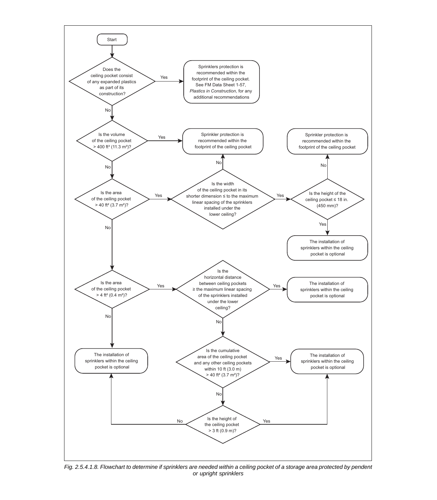
- 凹陷區構造含膨脹型塑膠（expanded plastics）者 → 建議於凹陷區footprint內設置撒水頭（另參 FM Data Sheet 1-57《建築中之塑膠》之額外建議）
- 凹陷區體積 >400 ft³ (11.3 m³) → 建議設置撒水頭
- 凹陷區面積 >40 ft² (3.7 m²)：其較短邊寬度是否 ≤ 下方主天花板撒水頭之最大容許間距，且凹陷區高度是否 ≤18 in. (450 mm)，兩者皆符合時，凹陷區內撒水頭之設置方為可選
- 凹陷區面積 >4 ft² (0.4 m²)（但 ≤40 ft²）：與鄰近凹陷區之水平距離是否 ≥ 主天花板撒水頭之最大容許間距，符合時撒水頭設置為可選
- 凹陷區（及 10 ft [3.0 m] 範圍內其他凹陷區）之合計面積是否 >40 ft² (3.7 m²)，以及凹陷區高度是否 >3 ft (0.9 m)，為判斷最終分支之關鍵尺寸門檻
凡經流程圖判定「應設置撒水頭」者，須依凹陷區之最大天花板高度，比照該高度對應之一般設計原則裝設撒水頭。凹陷區內撒水頭與主天花板下方撒水頭間之最小容許水平間距可不予考慮，但兩者間之最大容許水平間距仍不得忽略。
2.5.4.1.9儲存型天花板撒水頭下方之氣流速度
2.5.4.1.9.1 對儲存型用途，凡儲存物頂部至天花板層級撒水頭所在水平面之間存在氣流（例如 HVLS 大型循環扇或 HVAC 空調設備所產生之氣流），應使氣流速度不超過 5 ft/sec (1.5 m/sec)。若無法將氣流限制在此速度以內，依下表決定應採行之補償措施：
| 氣流是否由風扇（如 HVLS 扇）向下吹送 | 受影響區域是否為貨架儲存 | 應採行之可接受選項 |
|---|---|---|
| 否 | — | 選項 2、3、4、5 或 6 任一 |
| 是 | 是 | 選項 1、2、5 或 6 任一 |
| 是 | 否 | 選項 1 或 2 任一 |
可接受選項
- (1) 通風設備設定為天花板撒水頭出水警報動作時自動停機
- (2) 於天花板層級裝設 FM Approved 火焰偵測器，監測氣流速度超過 5 ft/s (1.5 m/s) 區域之 10 ft (3.0 m) 半徑範圍，並使氣流源於偵測系統動作時自動停機
- (3) 若天花板撒水系統為濕式或同等系統，應比照乾式系統之設計基準進行設計；若用途專屬資料表未提供乾式系統設計基準，則將原濕式系統設計面積增加 30%；若為乾式或同等系統，同樣將設計面積增加 30%
- (4) 依 Fig. 2.5.4.1.9.1(b) 搭配假天花板增設天花板撒水頭
- (5) 於貨架結構頂部所有橫向通道空間（transverse flue space）內，凡位於氣流速度超過 5 ft/s (1.5 m/s) 區域 5 ft (1.5 m) 半徑範圍者，裝設線型感熱偵測器，並使氣流源於偵測系統動作時自動停機
- (6) 依 Fig. 2.5.4.1.3.2(e) 設置貨架內撒水頭
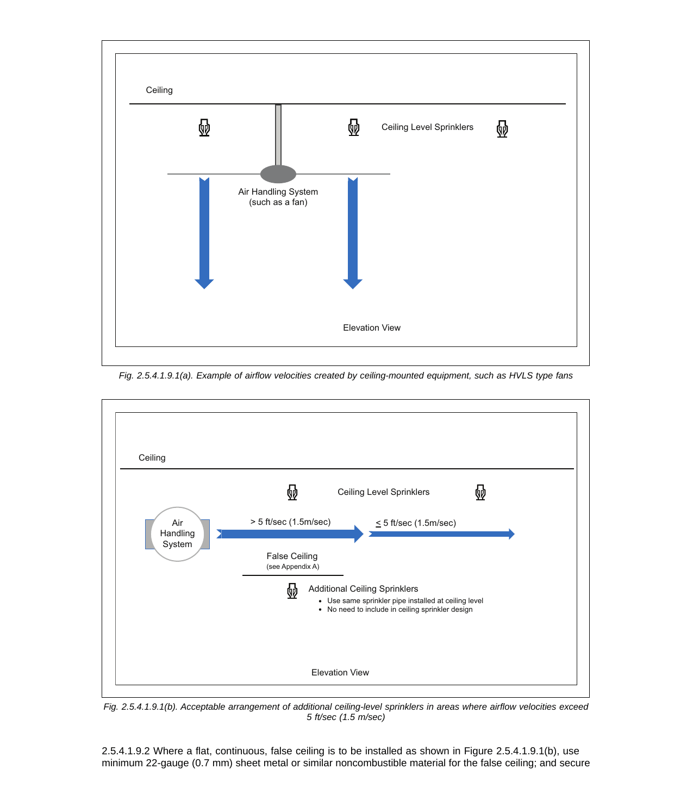
2.5.4.1.9.2 依 Fig. 2.5.4.1.9.1(b) 設置平整連續假天花板時，應以最小 22 號規格 (0.7 mm) 鋼板或同等不燃材料製作，並固定至可承受最小 3 lb/ft² (14.6 kg/m²) 上舉風壓之強度；次佳但仍可接受之替代材料為最小 3/8 in. (10 mm) 合板（或類似材料）——與 2.5.4.1.3.3 假天花板構造要求相同。
2.5.4.2儲存型撒水頭之天花板構造（無阻礙／有阻礙）判定
2.5.4.2.1 依 Fig. 2.5.4.2.1 流程圖判斷天花板構造對儲存型撒水頭之裝設而言屬於無阻礙（Unobstructed）或有阻礙（Obstructed）。其中「實心天花板結構構材（solid ceiling structural member）」係指其於垂直面之剖面開口率小於 70% 者。
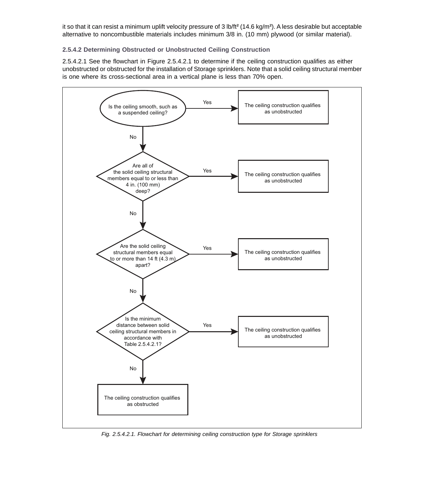
- 天花板是否平滑，例如懸吊式天花板（suspended ceiling）？是 → 判定為無阻礙
- （若否）所有實心天花板結構構材深度是否 ≤4 in. (100 mm)？是 → 判定為無阻礙
- （若否）實心天花板結構構材間距是否 ≥14 ft (4.3 m)？是 → 判定為無阻礙
- （若否）實心天花板結構構材間之最小距離是否符合 Table 2.5.4.2.1 規定？是 → 判定為無阻礙；否 → 判定為有阻礙
儲存型撒水頭（二）：水平/垂直距離與阻礙物規則
2.5.4.3.2牆面與牆角之水平距離
儲存型撒水頭與牆面之水平距離（垂直於牆面量測，DW）與牆角之水平距離（DC）應符合下列規定（以 SMAX 表示該撒水頭允許之最大直線間距）：
| 位置 | 條件 | 允許距離範圍 |
|---|---|---|
| 牆面（Wall） | 垂直於牆面量測 | 4 in. (100 mm) < DW < 50% SMAX |
| 牆角角度 < 90° | 牆角夾角小於直角（銳角牆角） | 4 in. (100 mm) < DC < 75% SMAX |
| 牆角角度 > 90° | 牆角夾角大於直角（鈍角牆角） | 4 in. (100 mm) < DC < 71% SMAX |
上述數值皆以撒水頭至牆面／牆角之水平淨距離為準，最小距離一律不得小於 4 in. (100 mm)，避免撒水頭過度貼近牆面／牆角影響放水型態；最大距離則依牆角角度不同，分別以該撒水頭允許最大直線間距（SMAX）之 50%、75% 或 71% 為上限。
2.5.4.3.3無阻礙構造下儲存型撒水頭之垂直位置
2.5.4.3.3.1垂直距離之量測方式
撒水頭（感熱元件中心線）與天花板底面之垂直距離，應垂直於天花板面量測（DV），而非以鉛垂線量測。此原則適用於水平天花板，亦適用於坡度 ≤ 10° 及坡度 > 10° 之斜面天花板：無論天花板是否傾斜，量測方向皆與天花板表面垂直（90°）。
2.5.4.3.3.2波浪型（corrugated）天花板之量測
若天花板為波浪型金屬浪板等構造，應依原文 Fig. 2.5.4.3.3.2 所示方式，自撒水頭感熱元件量至波浪天花板底面（波峰或波谷基準依圖示）決定垂直距離，而非單純以波峰或波谷擇一量測，以確保與其他天花板類型之垂直距離規定具一致基準。
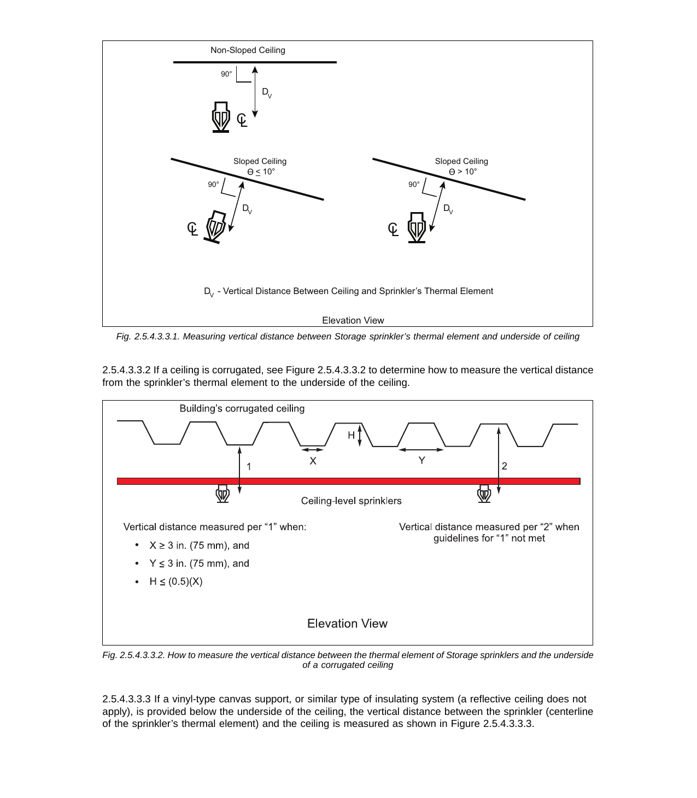
2.5.4.3.3.3保溫層／帆布支撐層存在時之量測
若天花板底面下方設有乙烯基帆布型支撐層，或礦棉／玻璃棉毯狀保溫層等類似隔熱系統（反射式天花板不適用本條），則撒水頭（感熱元件中心線）與天花板之垂直距離，應以撒水頭感熱元件中心線至保溫層／支撐層底面之距離為準量測，而非量至結構天花板本身底面。
2.5.4.3.3.4撒水頭感熱元件垂直位置基準
除該用途專用資料表另有規定外，儲存型撒水頭感熱元件中心線應安裝於天花板底面下方之下列範圍內；適用之撒水頭種類須先依 Table 2.5.4.3.1.1 依天花板高度判定。
| 撒水頭類型 | 平滑天花板（Smooth Ceilings） | 非平滑天花板（Non-Smooth Ceilings） |
|---|---|---|
| 延伸涵蓋型（Extended-Coverage），K > 25.2EC (360EC) | 2 in.–12 in. (50–300 mm) | 4 in.–12 in. (100–300 mm) |
| 快速反應標準涵蓋型 K11.2 (K160) | 2 in.–12 in. (50–300 mm) | 4 in.–12 in. (100–300 mm) |
| 標準反應標準涵蓋型 K14.0 (K200) 及 K16.8 (K240) | 2 in.–13 in. (50–325 mm) | 4 in.–13 in. (100–325 mm) |
| 快速反應標準涵蓋型 K > 19.6 (280) | 2 in.–17 in. (50–425 mm) | 4 in.–17 in. (100–425 mm) |
換言之，非平滑天花板（如波浪金屬浪板等）之最小垂直距離門檻較平滑天花板高（4 in. 對 2 in.），但同一撒水頭種類之最大垂直距離上限相同；實際可用之最大距離仍須先依 Table 2.5.4.3.1.1 確認該天花板高度下允許之撒水頭種類。
2.5.4.3.4天花板坡度對無阻礙構造儲存型撒水頭安裝之影響
2.5.4.3.4.1 對非平直天花板，坡度應以分析點之切線（point of tangency）為基準判定。依天花板坡度大小，適用下列處理原則：
| 天花板坡度 | 處理原則 |
|---|---|
| < 1:12 (5°) | 坡度不影響撒水頭安裝規定，依一般規則安裝即可 |
| ≥ 1:12 (5°) 且 < 2:12 (10°) | 撒水頭應安裝於屋脊下方 3 ft (0.9 m) 以內（詳 Fig. 2.5.4.3.4.1(b)），撒水頭偏向板可採平行天花板或平行地板 |
| ≥ 2:12 (10°) 且 ≤ 4:12 (18.5°) | 屋脊下方 3 ft (0.9 m) 以內，撒水頭偏向板須平行地板；若為貨架儲存乾式系統，可另採選項 1 或選項 5 |
| > 4:12 (18.5°) | 僅選項 1（設置平頂假天花板）與選項 2（貨架內撒水頭覆蓋全部儲存高度，限濕式系統）可行；乾式系統則搭配選項 1 與選項 5 |
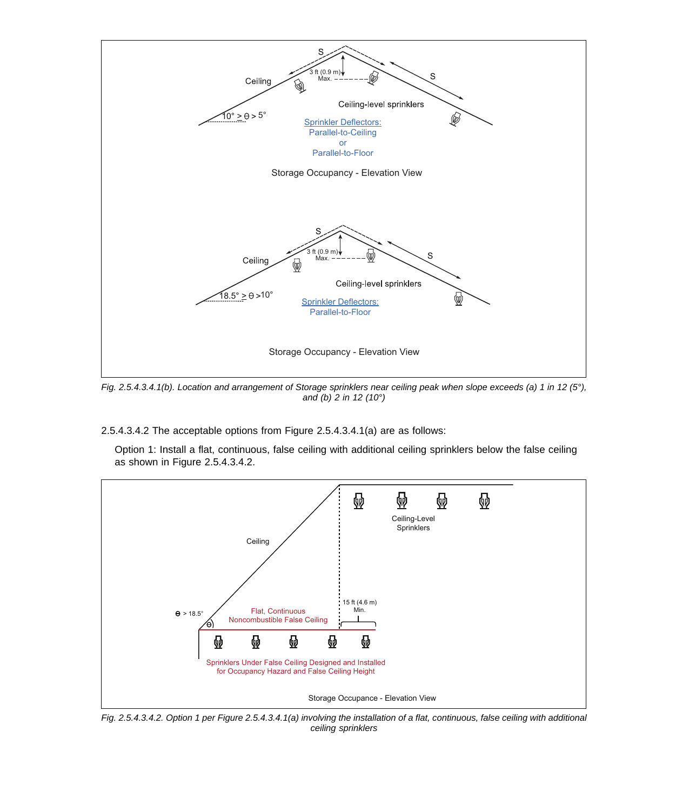
2.5.4.3.4.2 坡度 > 4:12 (18.5°) 或貨架儲存乾式／濕式系統時，可採用之對應選項如下：
- 選項 1：於原天花板下方設置平整、連續之不燃假天花板，並於假天花板下方另外加裝依用途危害與假天花板高度設計之撒水頭；假天花板與屋脊間應保持 ≥ 15 ft (4.6 m) 之最小淨高。
- 選項 2：若天花板撒水系統為濕式管系且儲存採貨架方式，依用途專用資料表設置貨架內撒水頭，使貨架內最上層撒水頭以上不再留有儲存物。
- 選項 3：將天花板撒水頭安裝於屋脊下方（依 Fig. 2.5.4.3.4.1(b)），偏向板平行地板，並將天花板撒水頭設計面積由用途專用資料表所定值放大 50%。
- 選項 4：天花板撒水頭安裝於屋脊下方，偏向板平行地板；除最靠近屋脊之撒水頭仍採正常間距外，其餘天花板撒水頭改採 4 ft × 4 ft (1.2 m × 1.2 m) 之間距安裝。
- 選項 5：若天花板撒水系統為乾式管系且儲存採貨架方式，依用途專用資料表設置貨架內撒水頭，使貨架內最上層撒水頭以上儲存物不超過 5 ft (1.5 m)；同時將天花板撒水頭設計面積放大 50%，並將天花板撒水頭安裝於屋脊下方，偏向板平行地板。
2.5.4.3.4.3 採用選項 1 之平整連續假天花板時，應使用最小 22 規（0.7 mm）金屬薄板或類似不燃材料製作，並妥善固定使其能承受至少 3 lb/ft² (14.6 kg/m²) 之最小上舉風壓；次佳但可接受之替代方案為最小 3/8 in. (10 mm) 夾板（或類似材料）。
2.5.4.4有阻礙天花板構造下儲存型撒水頭之水平／垂直定位
2.5.4.4.1 撒水頭間之直線距離應沿天花板坡面量測，而非以自地面觀察之視角量測。
2.5.4.4.2 依原文流程圖判定有阻礙天花板構造下撒水頭之建議水平與垂直位置，其判斷邏輯摘要如下：
- 天花板坡度 > 4:12 (18.5°)：應依 2.5.4.3.4.2 選項 1 設置假天花板
- 實心天花板結構構材深度 > 24 in. (600 mm)：應於有阻礙構造形成之每一通道（channel）內裝設撒水頭
- 結構構材深度 ≤ 24 in. 且坡度 < 1:12 (5°)：若構材深度 < 18 in. (450 mm)，可採「正常水平間距／調整垂直間距」安裝；否則應依 Fig. 2.5.4.4.5 進行通道阻塞（channel-blocking）後，再採「正常水平間距／調整垂直間距」安裝
- 坡度 < 2:12 (10°) 且構材深度 ≤ 24 in.：若構材深度 < 12 in. (300 mm)，可採「正常水平間距／調整垂直間距」；否則須先通道阻塞後再採用該間距方式
- 其餘情形（構材深度 < 18 in. 且與天花板坡度垂直者）：通道阻塞後採「正常水平間距／調整垂直間距」；若構材與坡度不垂直，或深度 ≥ 18 in.，則應於每一通道內裝設撒水頭
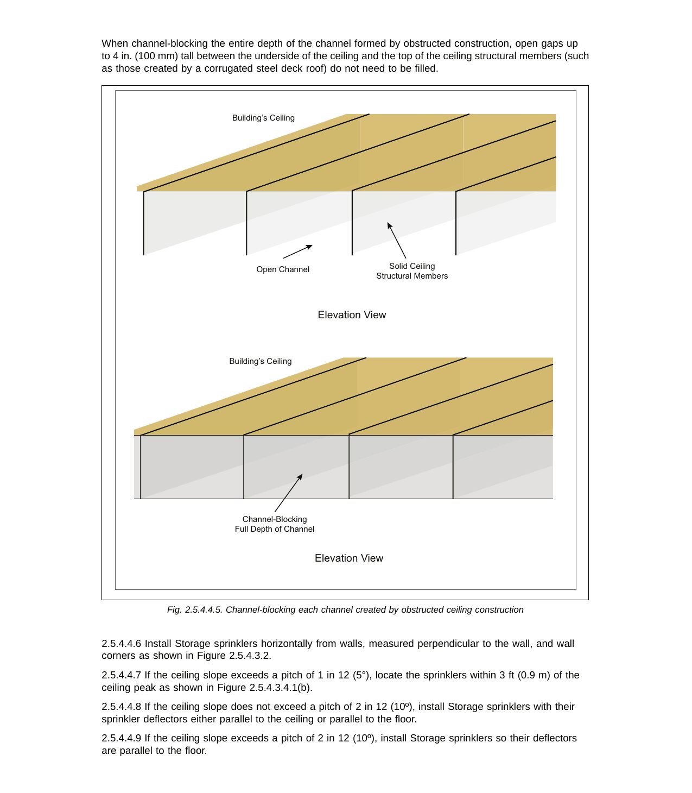
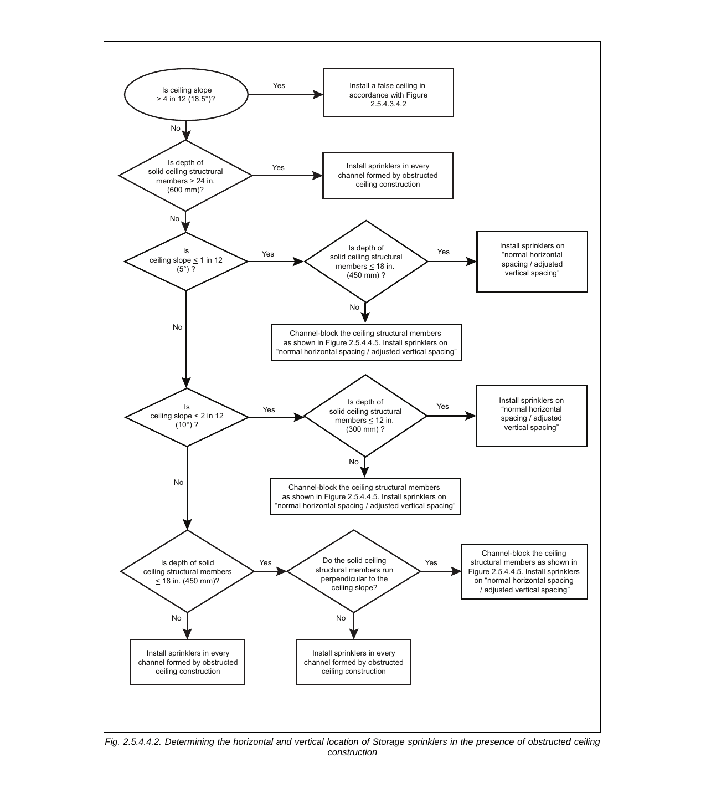
2.5.4.4.3每一通道內裝設撒水頭（Install Sprinklers in Every Channel）
- 水平間距：依用途專用資料表所示直線間距，決定各通道內撒水頭之最小／最大水平間距；若資料表未提供，採 Table 2.5.4.3.1.1 之數值。若天花板結構構材有開口，應視需要於通道間錯開（stagger）撒水頭水平位置，以符合最小直線間距要求。
- 垂直間距：依 2.5.4.3.3 所定距離，決定各通道內撒水頭天花板下方之最小／最大垂直位置。
- 撒水系統設計（密度／面積法）：
- 若用途專用資料表未另行指定，每一配水支管上動作撒水頭數，係取設計面積之平方根乘以適用之形狀係數（shape factor），再除以通道內撒水頭之直線間距求得；計算結果非整數時採一般四捨五入法。
- 納入水力分析之天花板撒水頭數量，係將所定之需求設計面積除以該天花板撒水頭之最大允許面積間距求得；計算結果非整數時採一般四捨五入法。
- 最遠端天花板撒水頭所需最小流量，係將所定之需求放水密度乘以該天花板撒水頭之最大允許面積間距求得。
2.5.4.4.4正常水平間距／調整垂直間距（Normal Horizontal Spacing / Adjusted Vertical Spacing）
- 水平間距：依用途專用資料表所示直線與面積間距決定；若未提供則採 Table 2.5.4.3.1.1 之數值。
- 垂直間距：依 2.5.4.3.3 所定距離決定天花板下方最小／最大垂直位置。惟若實心結構構材之深度使 2.5.4.3.3 之規定無法實現，應將撒水頭感熱元件安裝於實心天花板結構構材底面下方不超過 6 in. (150 mm) 之平面上（詳 Fig. 2.5.4.4.4）。
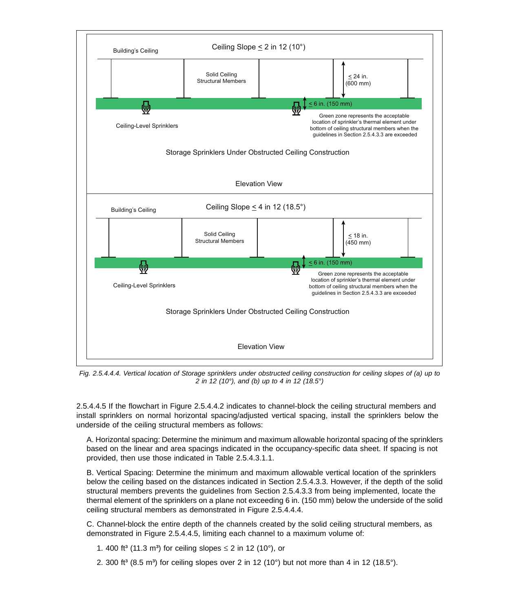
| 天花板坡度 | 實心結構構材深度上限 | 感熱元件距構材底面上限 |
|---|---|---|
| < 2:12 (10°) | < 24 in. (600 mm) | < 6 in. (150 mm) |
| < 4:12 (18.5°) | < 18 in. (450 mm) | < 6 in. (150 mm) |
2.5.4.4.5通道阻塞（Channel-Blocking）後採正常水平間距／調整垂直間距
- 水平間距：同 2.5.4.4.4 A 項，依用途專用資料表或 Table 2.5.4.3.1.1 決定。
- 垂直間距：同 2.5.4.4.4 B 項；深度受限時，感熱元件安裝於實心構材底面下方不超過 6 in. (150 mm) 之平面上。
- 通道阻塞：應將實心天花板結構構材形成之通道全深度阻塞（詳 Fig. 2.5.4.4.5），且每一通道阻塞後之最大容積限制為：
- 天花板坡度 ≤ 2:12 (10°)：400 ft³ (11.3 m³)
- 天花板坡度 > 2:12 (10°) 但 ≤ 4:12 (18.5°)：300 ft³ (8.5 m³)
進行全深度通道阻塞時，天花板底面與結構構材頂部之間（如波浪金屬浪板屋頂所形成者）若存在高度 ≤ 4 in. (100 mm) 之開放空隙，不需要另行填塞。
2.5.4.4.6–2.5.4.4.9有阻礙構造下之牆面距離、坡度與偏向板方向
- 2.5.4.4.6 儲存型撒水頭與牆面（垂直於牆面量測）及牆角之水平距離，比照 2.5.4.3.2（Fig. 2.5.4.3.2）辦理。
- 2.5.4.4.7 天花板坡度超過 1:12 (5°) 時，撒水頭應設置於屋脊 3 ft (0.9 m) 以內（依 Fig. 2.5.4.3.4.1(b)）。
- 2.5.4.4.8 天花板坡度不超過 2:12 (10°) 時，撒水頭偏向板可採平行天花板或平行地板。
- 2.5.4.4.9 天花板坡度超過 2:12 (10°) 時，撒水頭偏向板須平行地板。
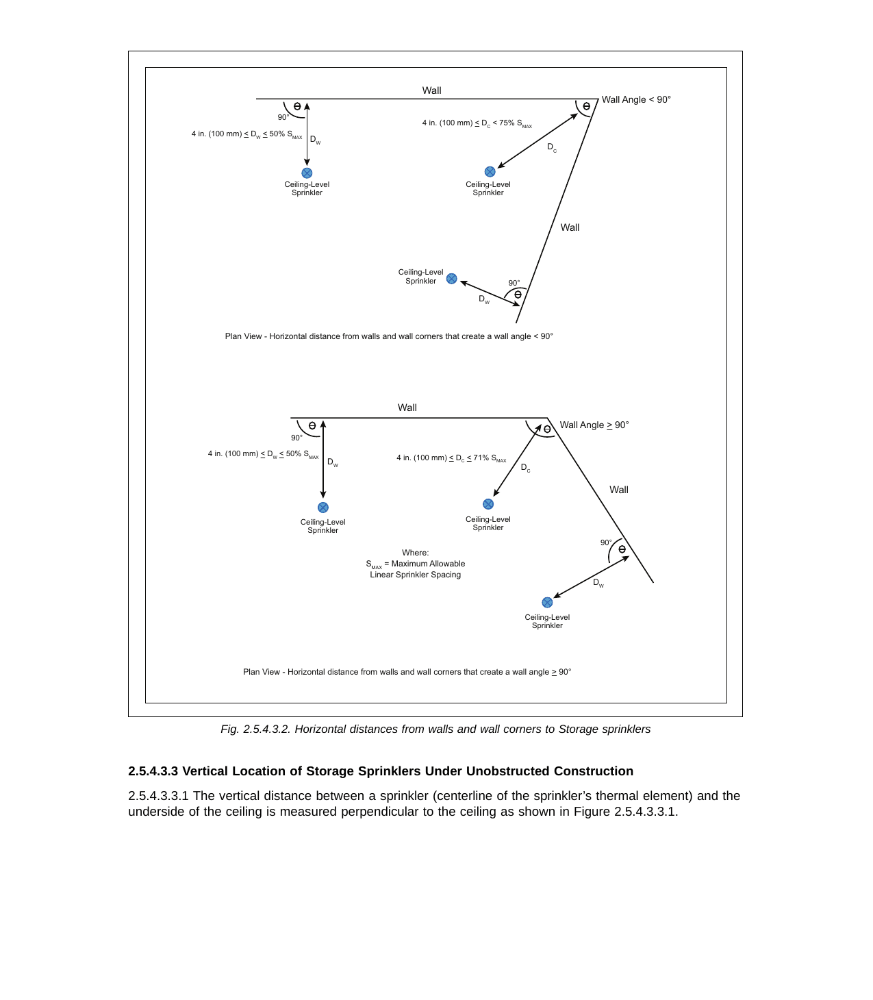
2.5.4.5天花板層儲存型撒水頭放水型態之阻礙物判定
2.5.4.5.1一般性判定原則
2.5.4.5.1.1 完全位於「棋盤格區域」（checkerboard area，依標準涵蓋型撒水頭 Fig. 2.5.4.5.1.1(a) 或延伸涵蓋型撒水頭 Fig. 2.5.4.5.1.1(b) 所定義之相鄰撒水頭間非重疊區域）內之物體，不構成對撒水頭放水型態之阻礙。
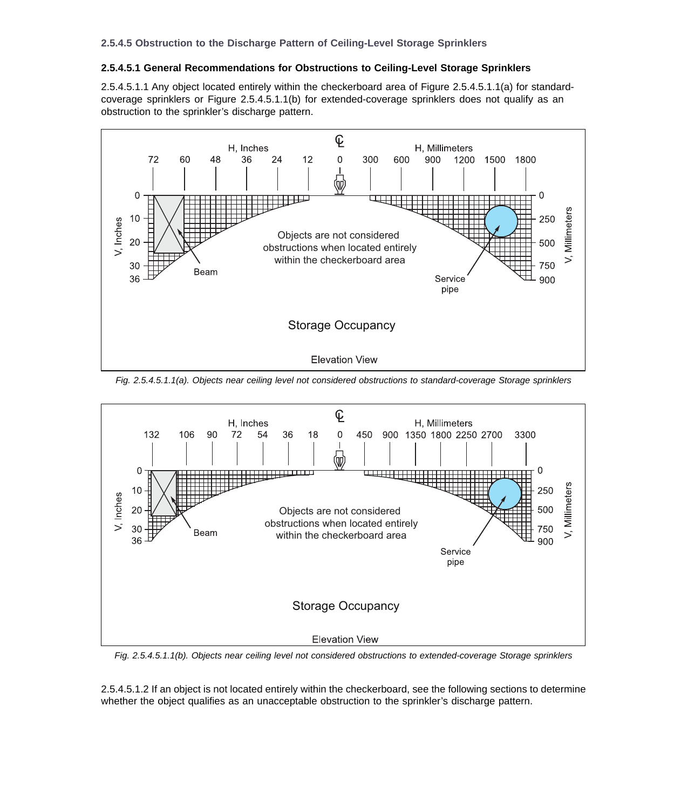
2.5.4.5.1.2 若物體並非完全落於棋盤格區域內，應依下列各節規定，進一步判定該物體是否構成不可接受之放水阻礙。
2.5.4.5.2天花板結構構材及鄰近類似物體
- 2.5.4.5.2.1 若垂直斷面開口率低於 70% 之天花板結構構材（如工字梁）延伸出棋盤格區域範圍，應將撒水頭配置於該結構構材兩側，並依 Fig. 2.5.4.5.2.1(b) 定位：撒水頭距結構構材中心線之水平距離 H 應小於該撒水頭最大允許直線間距之 50%；撒水頭與結構構材水平距離應 > 12 in. (300 mm)；結構構材本身寬度應 < 2 ft (0.6 m)（依 Table 2.5.4.5.4.1 進一步核對）。
- 2.5.4.5.2.2 垂直斷面開口率達 70% 以上之天花板結構構材，不構成撒水頭放水型態之阻礙。
- 2.5.4.5.2.3 若結構構材開口率達 70% 以上，但與標準涵蓋型撒水頭之水平距離小於 12 in. (300 mm)，或與延伸涵蓋型撒水頭之水平距離小於 18 in. (450 mm)，則該結構構材上之交叉支撐（cross-bracing）等組件應同時符合：(A) 寬度不超過 3 in. (75 mm)；且 (B) 與撒水頭之最小水平距離為該組件寬度之 3 倍以上。
- 2.5.4.5.2.4 若無法符合 2.5.4.5.2.3 之條件，應將標準涵蓋型撒水頭移位，使其與最近之天花板結構構材水平距離至少 12 in. (300 mm)；延伸涵蓋型撒水頭則至少 18 in. (450 mm)。
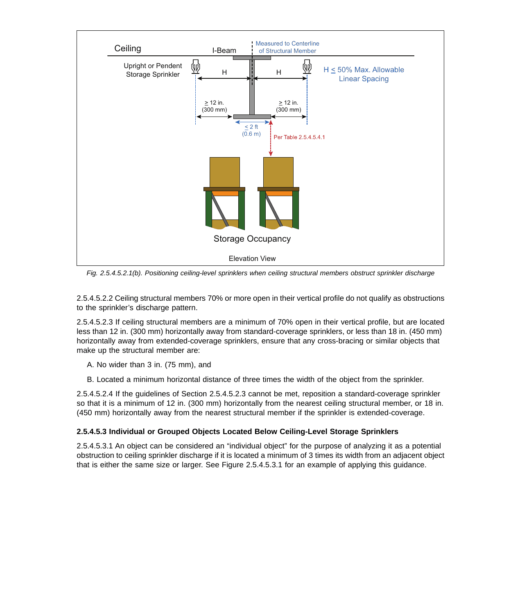
2.5.4.5.3天花板撒水頭下方之個別物體與群組物體
- 2.5.4.5.3.1 物體與同尺寸或更大之相鄰物體，水平距離達其自身寬度 3 倍以上者，可視為分析用之「個別物體（individual object）」。
- 2.5.4.5.3.2 若物體與同尺寸或更大之相鄰物體間水平距離小於較小物體寬度之 3 倍，應將二者視為「群組物體（grouped object）」。
- 2.5.4.5.3.3 群組物體之整體寬度為構成該群組之各物體寬度總和，物體間之開放空隙不需納入寬度計算。
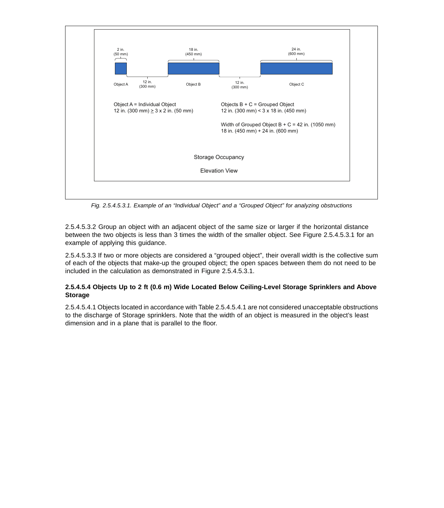
2.5.4.5.4寬度 2 ft (0.6 m) 以下、位於天花板撒水頭下方及儲存物上方之物體
2.5.4.5.4.1 凡符合 Table 2.5.4.5.4.1 所定位置關係之物體，不視為對儲存型撒水頭放水型態之不可接受阻礙。物體寬度應以其最小尺寸、於平行地板之平面上量測。（Table 2.5.4.5.4.1 依物體寬度、與撒水頭水平距離及垂直位置關係列出容許組合，正式設計請查閱原文表格數據。）
儲存型撒水頭（三）：其餘阻礙物與安裝規則
2.5.4.5.4寬度 2 ft (0.6 m) 以內物件位於天花板儲存型撒水頭下方且在儲存物上方時之阻礙
2.5.4.5.4.1 物件之寬度以其「最小尺寸」並在平行於地板之平面上量測。符合下表（Table 2.5.4.5.4.1）者，不視為對撒水頭放水造成不可接受之阻礙：
| 物件最小尺寸寬度，in. (mm) | 撒水頭至物件最近邊緣之水平距離，in. (mm) | 可接受準則 |
|---|---|---|
| ≤ 0.75 (20)* | < 6 (150) | 物件須在撒水頭垂直下方至少 4 in. (100 mm) 處，方為可接受之水平距離 |
| ≥ 6 (150) | 與撒水頭之距離即為可接受 | |
| ≤ 1.5 (38)* | < 6 (150) | 物件須在撒水頭垂直下方至少 12 in. (300 mm) 處，方為可接受之水平距離 |
| ≥ 6 (150) | 與撒水頭之距離即為可接受 | |
| ≤ 2 (50)* | < 6 (150) | 物件須在撒水頭垂直下方至少 24 in. (600 mm) 處，方為可接受之水平距離 |
| ≥ 6 (150) | 與撒水頭之距離即為可接受 | |
| ≤ 6 (150)* | < 6 (150) | 物件過於靠近撒水頭，須至少移至水平距撒水頭 6 in. (150 mm) 外 |
| ≥ 6 (150) | 與撒水頭之距離即為可接受 | |
| ≤ 12 (300) | < 12 (300) | 物件過於靠近撒水頭，須移至符合水平距撒水頭至少 12 in. (300 mm) 之規定 |
| ≥ 12 (300) | 水平距離可接受，但物件須另位於儲存物頂部以上至少 18 in. (450 mm) 處 | |
| ≤ 24 (600) | < 12 (300) | 物件過於靠近撒水頭，須移至符合水平距撒水頭至少 12 in. (300 mm) 之規定 |
| ≥ 12 (300) | 水平距離可接受，但物件須另位於儲存物頂部以上至少 36 in. (900 mm) 處 | |
| > 24 (600) | 依 2.5.4.5.5（寬度超過 2 ft 物件）辦理 | |
* 若天花板撒水頭為向上型（upright），請另見 2.5.4.5.4.2。
向上型撒水頭之例外（2.5.4.5.4.2）
寬度不超過 4 in. (100 mm) 之物件，不視為對向上型儲存撒水頭放水之不可接受阻礙。因此，向上型撒水頭可用以替代受阻之向下型（pendent）撒水頭，惟須同時符合：
- 除方向外，向上型撒水頭與原向下型撒水頭其餘屬性相同
- 該向上型撒水頭適用於防護該用途危害
- 物件最大寬度為 4 in. (100 mm)
延伸間距（2.5.4.5.4.3）
若依 Table 2.5.4.3.1.1 設置撒水頭仍無法使物件符合 Table 2.5.4.5.4.1 之規定，得將撒水頭之線性間距在該表最大線性間距基礎上再延伸最多 1 ft (0.3 m)，以避免對撒水頭放水造成阻礙。此延伸間距可重複多次使用，但每次延伸皆須緊鄰符合 Table 2.5.4.3.1.1 規定之間距配置。
2.5.4.5.4.4–2.5.4.5.4.6無法避免阻礙時：於物件下方加設補充撒水頭（適用寬度 ≤2 ft 物件）
若 2.5.4.5.4.1–2.5.4.5.4.3 之準則仍無法避免對天花板撒水頭放水造成不可接受阻礙，應於阻礙物下方加設補充撒水頭（supplemental sprinklers），並依下列原則安裝：
- 將補充撒水頭定位在阻礙物投影範圍內之垂直面上，並盡量貼近阻礙物底面
- 阻礙物為平整且實心者：補充撒水頭最大允許間距為 8 ft (2.4 m)
- 阻礙物非平整或非實心者：補充撒水頭最大允許間距為 4 ft (1.2 m)
- 阻礙物非平整或非實心，但其正下方已加裝與阻礙物同投影面積之平整連續水平隔板者：補充撒水頭最大允許間距可放寬為 8 ft (2.4 m)（隔板規格見下）
- 阻礙物位於儲存貨架上方者：可改於貨架頂層所有通道空間交會處，設置與天花板撒水頭屬性相同之補充撒水頭作為貨架內撒水頭，做為可接受之防護方式
2.5.4.5.4.5 補充撒水頭之設計方式：(A) 免另行設計者，可直接沿用天花板撒水頭之型式作為補充撒水頭，並以不小於天花板系統最大支管管徑之管徑供水；(B) 或改以阻礙物底面作為「假想天花板高度」，依用途別資料表就該高度查得建議設計密度／壓力，並將該區最遠 2 支補充撒水頭納入設計（此設計不須與天花板系統做水力平衡）。
2.5.4.5.4.6 加設水平隔板時，應使用最小 22 號規格 (0.7 mm) 鋼板或同等不燃材料，並固定牢靠以能承受至少 3 lb/ft² (14.6 kg/m²) 之上舉風壓；次佳但可接受之替代材料為最小 3/8 in. (10 mm) 厚之合板（或同等材料）。
2.5.4.5.5寬度超過 2 ft (0.6 m) 物件之補充撒水頭設計與安裝
2.5.4.5.5.1 個別或群組物件寬度超過 2 ft (0.6 m) 者，應依下列規定於阻礙物下方設計並安裝補充撒水頭。
2.5.4.5.5.3 未符合上述條件時，補充撒水頭之供水管徑設計依下列方式決定：(A) 以阻礙物底部作為「天花板高度」，自用途別資料表查得對應補充撒水頭屬性之建議壓力或密度；(B) 將受影響區域內之補充撒水頭（最多 4 支）納入設計面積——若由二條以上支管供水，亦可以兩條支管、每條 2 支之方式計入 4 支設計；(C) 補充撒水頭所需流量與壓力，免與天花板系統做水力平衡。
2.5.4.5.5.4 補充撒水頭之安裝規定如下：
| 阻礙物型式與寬度 | 補充撒水頭最大允許間距 |
|---|---|
| 平整實心，寬度 >2 ft (0.6 m) 且 ≤10 ft (3.0 m) | 10 ft (3.0 m) |
| 平整實心，寬度 >10 ft (3.0 m) | 依該撒水頭於無阻礙天花板構造下之線性與面積間距準則辦理 |
| 非平整或非實心，寬度 >2 ft (0.6 m) | 線性間距 ≤4 ft (1.2 m)；面積間距 ≤16 ft² (1.5 m²)；並使補充撒水頭水平距阻礙物任一邊緣 ≤2 ft (0.6 m) |
| 非平整或非實心，寬度 >2 ft 且 ≤10 ft，其下已加裝同投影面積之平整實心水平隔板 | 10 ft (3.0 m) |
| 非平整或非實心，寬度 >10 ft，其下已加裝同投影面積之平整實心水平隔板 | 依無阻礙天花板構造之線性與面積間距準則辦理 |
補充撒水頭應安裝於盡量貼近阻礙物底面之垂直面上，並水平配置於阻礙物投影範圍內（2.5.4.5.5.4(A)(B)）。2.5.4.5.5.4(H) 阻礙物寬度不超過 4 ft (1.2 m) 且位於儲存貨架上方者，可改為在貨架頂層所有通道空間交會處（含面向通道與縱向通道）加裝天花板等級撒水頭作為貨架內撒水頭，並以與天花板系統支管相同管徑供水，作為可接受之防護方式。2.5.4.5.5.5 水平隔板規格與 2.5.4.5.4.6 相同：最小 22 號規格 (0.7 mm) 鋼板或同等不燃材料，須能承受至少 3 lb/ft² (14.6 kg/m²) 上舉風壓，次佳替代材料為最小 3/8 in. (10 mm) 合板。
2.5.4.5.6–2.5.4.5.8開放格柵天花板、夾層與走道之阻礙
| 構造類型 | 規定重點 |
|---|---|
| 開放格柵天花板 2.5.4.5.6.1 | 儲存型撒水頭防護區域內，禁止安裝開放格柵天花板 |
| 開放格柵夾層 2.5.4.5.7 | 應盡量避免採用開放格柵夾層，改採實心樓板並依 2.5.1.4 於樓板下方設置撒水頭。如無法避免，樓板下方應設置：160°F (70°C) 公稱動作溫度、快速反應型儲存撒水頭並附加水盾；線性間距 ≤4 ft (1.2 m)、面積間距 ≤16 ft² (1.5 m²)；設計比照夾層下方為實心樓板時之用途危害設計。此系統免與天花板系統做水力平衡 |
| 開放格柵走道 2.5.4.5.8 | 應盡量避免採用，改採實心走道並依 2.5.1.5 於下方設置撒水頭。符合下列情形之一者，走道下方撒水頭得予省略：(1) 走道開孔率 ≥70% 且下方不會有儲存物或其他可燃物；或走道鄰接貨架儲存但火災時貨品不致溢流至走道上；(2) 走道鄰接貨架儲存，且該貨架同層已設有面撒水頭。無法省略時，應於走道下方設置：160°F (70°C) 公稱動作溫度、快速反應型儲存撒水頭並附加水盾，其 K 值、涵蓋型式與方向須與天花板撒水頭相同；最大線性間距 8 ft (2.4 m)；供水支管管徑與天花板系統相同。若走道鄰接已設貨架內撒水頭防護之貨架，亦可改採與該貨架內撒水頭相同之撒水頭與設計。依此安裝者，走道下方系統免與天花板系統做水力平衡 |
2.5.4.5.9輸送機（Conveyors）造成之阻礙
是否須於輸送機下方加設補充撒水頭，依 Fig. 2.5.4.5.9 判斷流程決定，其判斷邏輯如下：
| 判斷條件 | 結果 |
|---|---|
| 輸送機下方區域是否無可燃物？ | 是 → 免於輸送機下方加設補充撒水頭；否 → 續下一步判斷 |
| 輸送機是否為滾筒式（roller type）？ | 是 → 續判斷「滾筒間縫隙是否小於滾筒直徑」；否（皮帶式）→ 續下一步判斷 |
| （滾筒式）滾筒間縫隙 < 滾筒直徑？ | 是 → 應依 2.5.4.5 於輸送機下方設置快速反應型補充撒水頭 |
| 輸送機皮帶是否為格柵型（grid type）？ | 是 → 續判斷「格柵開孔率是否 >70%」；否（實心皮帶）→ 應依 2.5.4.5 設置快速反應型補充撒水頭 |
| （格柵型）開孔率 >70%？ | 是 → 免加設補充撒水頭；否 → 應依 2.5.4.5 設置快速反應型補充撒水頭 |
2.5.4.6貨架內撒水頭定位之一般準則
- 2.5.4.6.1 所有貨架內撒水頭皆應設置於貨架儲存結構之範圍內
- 2.5.4.6.2 面撒水頭（face sprinklers）應：(A) 位於貨架儲存結構範圍內，且 (B) 水平距貨架面不超過 18 in. (450 mm)
- 2.5.4.6.3 單排貨架、深度 ≤4 ft (1.2 m) 者，貨架內撒水頭得設置於貨架結構範圍外，惟須同時符合：不須設面撒水頭；貨架水平距牆面 ≤12 in. (300 mm)；貨架內撒水頭水平距貨架結構 ≤6 in. (150 mm)；水平偏移橫向通道空間交會點 ≤3 in. (75 mm)；且撒水頭偏向貨架直立柱之一側
- 2.5.4.6.4 單排貨架、深度 >4 ft (1.2 m) 者，貨架內撒水頭得設置於結構範圍外，惟須：已沿貨架通道側設置面撒水頭；貨架水平距牆面 ≤12 in. (300 mm)；貨架內撒水頭水平距貨架結構 ≤6 in. (150 mm)；水平偏移橫向通道空間交會點 ≤3 in. (75 mm)
- 2.5.4.6.5 雙排貨架僅於縱向通道空間設置貨架內撒水頭者，撒水頭應偏向直立柱之一側，且水平偏移橫向通道空間交會點不超過 3 in. (75 mm)
- 2.5.4.6.6 每一設置貨架內撒水頭之層架高度，撒水頭洩水盤應位於滿載儲存物頂部垂直上方至少 6 in. (150 mm) 處，並在貨架水平支撐構件下方或齊平處；若無法保留 6 in. (150 mm) 淨空，應於所有通道空間交會處（面向通道與縱向通道）皆設置貨架內撒水頭
- 2.5.4.6.7 面撒水頭若水平偏移貨架水平支撐構件（與通道平行者）至少 3 in. (75 mm)，得設置於該支撐構件上方
- 2.5.4.6.8 貨架內撒水頭與其配管之佈置，應同時避免物料搬運作業造成損壞，並確保放水不受阻礙——例如雙排貨架可於面側設置兩支水平支撐構件，但在設置貨架內撒水頭之層架縱向通道空間僅設一支水平支撐構件；面撒水頭宜配置於距支撐構件水平 3–18 in. (75–450 mm)、洩水盤距最近支撐構件底面 ≤3 in. (75 mm) 處，縱向通道之貨架內撒水頭洩水盤則宜與最近支撐構件底面齊平或略低。安裝前應逐一確認貨架內撒水頭之預定位置，兼顧防止物料搬運損壞與放水暢通
特殊防護撒水頭
- 2.5.1（原文列印編號，見上方說明）關於特殊防護撒水頭（Special Protection Sprinklers）之構造、用途與防護準則，應查閱對應之用途別資料表（occupancy-specific data sheet）
- 2.5.2 若用途別資料表未另行規定，應依本資料表 2.2 節，依防護區域之環境溫度決定可採用之撒水系統型式（如濕式或乾式）
- 2.5.3 適用之撒水系統配件應依本資料表 2.3 節辦理
- 2.5.4 撒水系統配管、接續、吊架與抗震支撐之安裝建議，應依本資料表 2.4 節辦理
圖說審查（Plan Review of Sprinkler Systems）
2.6.1圖說審查一般建議
2.6.1.1 撒水系統設計應依相關用途別資料表（occupancy-specific data sheet）辦理，並依 Data Sheet 3-0《消防系統水力學》執行水力計算分析。2.6.1.2 於任何撒水系統安裝開始前，應將一套工作圖（working drawings）、撒水系統水力計算書、規範書及其他 2.6.2–2.6.5 節所述之必要文件，送交 FM 指定代表審查並取得核可。2.6.1.3 任何修訂後之工作圖、水力計算書、規範書及其他必要文件，亦應於安裝開始前送交 FM 指定代表審查核可。2.6.1.4 應提供一套完整之竣工圖（as built drawings）、撒水系統水力分析、規範書及必要文件予業主及／或客戶留存。
2.6.2工作圖
2.6.2.1 送審之工作圖應包含 2.6.2.2–2.6.2.5 節所列資訊。
比例配置圖（Site Plan，2.6.2.2）應標示：
- 廠區可用之水源；如水源包含消防泵浦房、消防泵浦、儲水槽等設施，應一併標示相關資訊
- 所有地下給水總管及其控制閥
- 所有消防栓及其控制閥
- 任何消防車連結口（fire service pumper connections）
- 其他相關消防設備（如逆止閥等）
- 設置撒水防護之建築物本體
- 該建築物 100 ft (30 m) 範圍內之其他建築物
- 方向指標（direction arrow）
- 水源測試有效點與撒水系統立管基座間之所有高程差
平面圖（Plan View，2.6.2.3）應標示：
- 水力分析所用之所有節點（nodes）
- 撒水系統所依據之設計
- 撒水系統所需之流量與壓力，以及流量壓力計算所依據之參考點
- 圖上每一撒水頭之 SIN、K 值及公稱動作溫度
- 2.1.4.4 節所列撒水系統所有元件，並適當標註
- 室內消防栓箱及／或壁式消防栓之配管與出口
- 撒水頭之線性間距
- 撒水頭與牆面之水平距離
- 任何排煙／排熱口或動力排氣口相對於所有撒水頭之位置
- 該用途場所預期環境溫度低於 40°F (4°C) 或高於 130°F (54°C) 之區域位置
剖面圖（Sectional View，2.6.2.4–2.6.2.5）應標示：
- 撒水頭與天花板間之垂直距離
- 確認符合 2.5.2.5（下垂/直立式）、2.5.3.5（側牆式）、2.5.4.5（儲存型）等節之障礙物相關建議
- 若平面圖上已提供障礙物詳細資訊及天花板與撒水頭間之垂直距離，得省略比例剖面圖
2.6.3撒水系統水力分析
2.6.3.1 除相關用途別資料表另有建議外，應依 Data Sheet 3-0 之建議以水力分析證明所提撒水系統可提供該用途別資料表所定之設計放水量與延時。2.6.3.2 撒水系統水力分析所需之額外文件，詳 2.6.5 節。
2.6.4規範書
2.6.4.1 應送審 2.6.4.2–2.6.4.12 節所述之規範書。規範書應涵蓋以下項目：
- 任何可燃構造，以及設有排煙／排熱口與（或）開放格柵天花板、夾層、走道之區域（2.6.4.2）
- 各撒水防護區域之用途；儲存用途另須檢附 FM999C 表（FM 承包商撒水系統水力分析證明書）（2.6.4.3）
- 環境溫度預期低於 40°F (4°C) 或高於 130°F (54°C) 區域之用途詳情（2.6.4.4）
- 若場所位於 50 年至 500 年地震帶（依 Data Sheet 1-2《地震》定義），標示其 Year Zone 分級及所採耐震防護措施（2.6.4.5）
- 供應撒水系統之水源詳細規範，含泵浦房、消防泵浦、儲水槽等資訊；既有水源之流量試驗資料須為 12 個月內；新設消防泵浦須檢附特性曲線並依 Data Sheet 3-7《消防泵浦》辦理；新設儲水槽須證明其容量並符合 Data Sheet 3-2《消防用水槽》之建議（2.6.4.6）
- 撒水系統各元件之詳細規範，包括撒水頭、自動控制閥、快速開啟裝置、配管、管接頭、支撐組件、控制閥與減壓閥、逆止閥與逆流防止器、水流警報裝置、壓力表、消防車連結口、排水閥、release閥（洩壓閥）等（2.6.4.7）
- 乾式、預動式或冷凍區型撒水系統之加壓氣體介質詳細規範（2.6.4.8）
- 防凍液系統所用防凍液詳細規範，及防護區域預期最低環境溫度（2.6.4.9）
- 預動式、冷凍區型、真空式或水霧（deluge）系統之動作元件詳細規範及其動作順序（2.6.4.10）
- 撒水系統所設連鎖裝置（interlocks）之詳細規範及其動作方式（2.6.4.11）
- 撒水系統警報監控地點之詳細規範（2.6.4.12）
2.6.5應備文件
2.6.5.1 應提交 2.6.5.2–2.6.5.5 節所列文件供審查核可：
- 由安裝承包商完成「自動撒水系統測試」章節之前所有欄位之 FM85A 表（FM 承包商材料與測試證明書），詳附錄 C 表單範本（2.6.5.2）
- 已完成之 FM999C 表（FM 承包商水力分析證明書），詳附錄 C（2.6.5.3）
- 證明乾式、預動式、冷凍區型、真空式或水霧型撒水系統之預期輸水時間符合最大時間限制之文件（2.6.5.4）
- 收到 FM 圖說審查意見後，應提出修訂送審資料或書面回覆，說明將如何處理 FM 之審查建議（2.6.5.5）
2.6.6安排 FM 現場驗收
應聯絡當地 FM 現場服務單位安排現場驗收訪視。FM 現場服務單位將依安裝類型、防護危害等級、安裝規模及地震帶等因素，決定所需見證之現場檢查與測試範圍。
系統驗收測試（Sprinkler System Acceptance Tests）
2.7.1驗收測試一般建議
任何新設撒水系統於投入使用前，均應執行驗收測試。
2.7.2建議之驗收測試文件
- 確認依 2.6 節建議送審之所有工作圖與規範書均已送出、經審查並獲 FM 接受（2.7.2.1）
- 確認 FM 圖說審查函所列所有未決建議事項已依 FM 滿意方式處理完畢（2.7.2.2）
- 確認安裝承包商已完成 FM85A 表所有必要欄位，且已將副本留交 FM 指定代表（2.7.2.3）
- 若因安裝快接式管件而於撒水配管上開孔，須以書面確認所有開孔切屑（coupons）均已自配管內部移除；承包商得於 FM85A 表上書面確認，或另以書面函件聲明（2.7.2.4）
- 確認安裝承包商已完成 FM999C 表所有必要欄位，且已將副本留交 FM 指定代表（2.7.2.5）
2.7.3驗收測試建議項目
2.7.3.1水源與地下管路測試
以全流量測試確認撒水系統實際可用水源不低於送審核可工作圖所載水源條件（2.7.3.1.1）；依 Data Sheet 3-10《私設消防水管及連接》對所有地下配管進行水壓試驗，滲漏量應符合該資料表之限值並記錄於測試證明書（2.7.3.1.2）。
2.7.3.2撒水系統水壓試驗
2.7.3.2.1 所有承受系統工作壓力之內部撒水配管及其附屬配件均應納入測試範圍；壓力損失可由監測壓力表判讀或目視觀察確認；測試壓力應由設於受測系統（或部分系統）最低高程點之壓力表讀取。2.7.3.2.2 既有系統改裝時，僅需對改裝部分進行水壓試驗；惟若改裝部分無法單獨隔離（如移位之配管分支），則應以系統正常靜壓對整個系統進行至少 2 小時之水壓試驗。2.7.3.2.3 若既有系統唯一之變更為更換撒水頭，則免除水壓試驗。2.7.3.2.4 寒冷氣候無法以水進行測試時，得依 2.7.3.2.7 節進行臨時氣密（pneumatic）洩漏測試。2.7.3.2.5 為降低配管破裂造成嚴重水損之可能性，測試期間得以小型泵浦維持壓力，同時保持撒水系統主控制閥關閉。
2.7.3.2.6 水壓試驗時應特別注意下列配管與元件：
- 差動式乾式閥（Differential Dry-Pipe Valve）：水壓試驗期間應使乾式閥之瓣（clapper）維持離座狀態，以避免損壞
- 消防車連結口：應對外部消防車連結口與消防車進水管逆止閥之間的配管進行水壓試驗
- 聚丁烯管（Polybutylene Pipe）：初次加壓時會發生膨脹，壓力表讀數下降未必代表洩漏；壓力下降幅度不應超過製造商規範與認證登記標準
- 水霧（Deluge）撒水頭：測試前於撒水頭接頭處裝設堵頭，測試完成後更換為開放式撒水頭；或於測試完成後移除撒水頭之動作元件
2.7.3.2.8 撒水系統防護區域環境溫度可能低於 32°F (0°C) 者，應於該空間可能之最低公稱溫度下進行氣密洩漏測試。2.7.3.2.9 採用 CPVC 等硬質熱塑性配管之撒水系統不得進行氣密測試，一律以水進行測試，並自系統中最高及最遠之撒水頭排放管內空氣。2.7.3.2.10 測試堵板（test blanks）應附有塗漆凸耳並清楚可辨識其存在，且應編號並建立紀錄制度，確保安裝承包商於施工完成後移除。2.7.3.2.11 水壓試驗時不得使用添加劑、矽酸鈉等腐蝕性化學藥劑、鹽水或其他化學品來止漏。2.7.3.2.12 應妥善規劃水壓試驗用水之處置。
2.7.3.3乾式、預動式、冷凍區型、真空式或水霧型系統之測試
2.7.3.3.1 除沖洗與水壓試驗外，應安排安裝承包商於驗收前對乾式、預動式、冷凍區型、真空式或水霧型撒水系統進行動作測試（trip test），並由業主代表見證。2.7.3.3.2 應參照相關用途別資料表是否有補充之動作測試建議，例如 Data Sheet 7-93N《飛機庫》對驗收測試有非常specific之規定。2.7.3.3.3 對於消音室（見 Data Sheet 1-53《消音室》）等全流量驗收測試可能造成損害疑慮之特殊場所，或水可能結凍之冷凍庫，應盡量於引入高價值內容物前，或於冷凍庫降至操作溫度前完成驗收測試。
2.7.3.3.4 動作測試應於所有水源（含消防泵浦）投入運作、所有撒水系統控制閥全開且系統設定為正常運作狀態下進行，測試方式如下：
- 乾式系統：以開啟末端查驗閥（inspector's test connection）方式使乾式閥動作（若系統設計基於一個以上最遠撒水頭動作，則使用末端查驗閥組件）；量測乾式閥動作壓力，以及查驗閥處壓力上升至並維持系統最低設計壓力所需之時間，並記錄於 FM85A 表
- 預動式系統（含預動式、冷凍區型、真空式）：先啟動感熱或感煙動作裝置使系統動作（感熱器以加熱方式測試，感煙偵測以核准之模擬煙霧發生器測試；濕式或乾式導引撒水頭則以熔動撒水頭或開啟導引管線查驗接頭測試）；非連鎖型與單連鎖型系統經此即動作；雙連鎖型系統則須再開啟末端查驗閥（組件）方使系統動作；非連鎖型系統應重複僅開啟末端查驗閥之測試以確認兩種方式均可動作；非連鎖型與雙連鎖型系統應量測系統閥動作壓力及查驗閥處壓力上升時間，並記錄於 FM85A 表
- 水霧（deluge）與暴露防護撒水系統：除預動式系統測試程序外，應依製造商說明測試水霧閥之自動動作；如設有手動與遠端遙控操作，亦應測試；觀察撒水放水均勻性；以校正過之壓力表於最遠水力計算撒水頭附近量測放水壓力，確認符合設計；並確認排水至安全地點之能力充足
2.7.3.3.5 測試期間亦應檢查監視設備、水流警報及消防泵浦啟動、輸送機停止、空調系統關閉等連鎖控制之動作是否正常。2.7.3.3.6 預動式系統全流量動作測試成功後，應對各感熱／感煙迴路及手動、就地與遠端動作站分別進行額外動作測試，測試時系統控制閥應節流（throttled）。2.7.3.3.7 動作測試成功完成後，應將系統內水排空並恢復投入使用。
2.7.3.4系統元件測試
- 以實體操作確認所有撒水系統控制閥均處於全開位置；確認控制閥所設之防篡改警報於實體操作測試期間功能正常；控制閥實體測試之詳細建議見 Data Sheet 2-81《消防安全檢查與撒水系統維護》（2.7.3.4.1）
- 確認撒水系統警報均可傳送至警報控制盤及警報監控站（若有設置）；如設有局部警報，應確認其功能正常（2.7.3.4.2）
- 開啟主排水閥並保持開啟直到系統壓力穩定，執行 2 in. (50 mm) 主排水測試，記錄靜壓與餘壓並登載於 FM85A 表（2.7.3.4.3）
- 確認由撒水系統動作所觸發之任何連鎖裝置功能正常（2.7.3.4.4）
- 若設有逆流防止裝置，應以正向流量測試確保其運作正常，測試流量至少應等於撒水系統需求量（含適用之消防栓用水量）（2.7.3.4.5）
- 若設有減壓閥，應於安裝完成後測試其在有流量與無流量狀態下之運作，確認裝置於最大及正常入口壓力下均能適當調節出口壓力；將每一減壓閥之流量測試結果（含靜壓、餘壓之進出口壓力與流量）記錄於 FM85A 表（2.7.3.4.6）
- 若尚未依 2.7.2.4 節提供切屑移除之書面文件，應於系統驗收並投入使用前，對所有撒水配管進行完整沖洗，並以目視檢查確認所有開孔切屑均已移除（含檢查是否卡於較小口徑配管內）（2.7.3.4.7）
2.7.3.5撒水系統最終目視審查
- 目視審查撒水系統配管配置是否依已審查核可之工作圖安裝完成；任何與工作圖之偏離事項均應列明並經 FM 認可（2.7.3.5.1）
- 已安裝乾式、預動式、冷凍區型或真空式撒水系統者，確認撒水配管坡度及任何所需之輔助排水裝置均已提供（2.7.3.5.2）
- 確認每一撒水系統均依 2.5.1.13 節建議提供備用撒水頭櫃（2.7.3.5.3）
- 確認所有設備銘牌（identification tags）均已於需要處提供（2.7.3.5.4）
- 驗收測試完成並將適當文件提交 FM 指定代表後，確認撒水系統各面向（含所有警報與連鎖裝置）均已投入使用（2.7.3.5.5）
操作與維護（Operation and Maintenance）
撒水頭與撒水系統之操作與維護指南，詳見 Data Sheet 2-81《消防安全檢查與撒水系統維護》（Fire Safety Inspections and Sprinkler System Maintenance）。
點火源控制（Ignition Source Control）
2.9.1 撒水系統安裝過程中所涉及之一切動火作業（hot work operations），均應依 Data Sheet 10-3《動火作業管理》（Hot Work Management）建議採取防護措施。
建議依據支持（Support for Recommendations）
3.1總則
3.1.1 本資料表之消防建議係基於測試、損失經驗與工程判斷而訂定。並非所有情境均已經過測試，也並非所有可能之解決方案均已被辨識；當考量與本資料表所涵蓋方式不同之替代方案時，應審慎評估所有相關變數。
3.1.2 本資料表之建議旨在確保：
- 撒水頭能及時動作
- 撒水頭具備不受阻礙之放水型態
- 撒水系統元件能可靠運作
3.1.3 本資料表之建議須與相關用途別資料表所定之設計參數一併採用，以確保撒水系統能提供足夠水量以控制或抑制火災。
3.2損失歷史
3.2.1總則
3.2.1.1 自動撒水頭已商業化應用超過百年，凡依本資料表建議安裝之撒水系統設施，其損失歷史表現優異。3.2.1.2 工業設施發生之大型火災損失，主要原因多為缺乏撒水防護。
3.2.1.3 以上為 FM 近 20 年損失歷史之統計結果，其他公開資料來源顯示之成效甚至更佳。3.2.1.4 火災期間動作之撒水頭最大數量，通常遠早於消防隊到場並展開滅火行動之前即已確立；依本資料表建議設置撒水防護，往往決定消防隊到場時面對的是一場相對輕微之火災，抑或是已失控之火災。3.2.1.5 儲存型撒水頭之損失經驗有限，惟整體表現優異，動作之撒水頭多能提供優異之滅火控制或抑制效果；儲存用途場所中，儲存型撒水頭下方之火災相較於非儲存型撒水頭下方之火災，通常延燒時間較短、規模較小，動作撒水頭數量亦較少。
3.2.2損失案例
3.2.2.1 撒水系統安裝中之動火作業損失案例
某雞肉加工廠因承包商焊接作業引發火災。該區域撒水系統正在安裝中，尚未投入使用。火災延燒至以纖維玻璃強化塑膠包覆之聚苯乙烯牆體隔熱材，並進一步延燒至噴塗於搭接式鋼構屋頂之聚氨酯隔熱材，造成約 28,000 ft² (2,600 m²) 屋頂坍塌。火勢並延燒至維修廠房、馬達控制中心及瓦楞紙箱儲存區，坍塌區內設備嚴重受損。承包商於距可燃隔熱材 4 in. (100 mm) 範圍內進行焊接作業；廠內動火許可制度未被遵循，未設置火場監視人員，亦未備置滅火器。
3.2.2.2 新設撒水系統尚未接通水源即遭縱火之案例
某光纖電纜製造廠發生火災，研判最可能原因為縱火。起火區域約 7,500 ft² (700 m²)，原料（主要為塑膠粒）以貨架儲存至 13 ft (3.9 m) 高度，該區屋頂與牆體為塑膠隔熱三明治板構造。該區已安裝撒水防護，惟因消防泵浦工程尚未完工而未投入使用。火災期間該區屋頂與牆體均告坍塌，鄰接區域之生產設備及在製品受損，鄰接建物亦因相通門戶未關閉而遭受嚴重煙損。儘管因盜警與煙霧警報動作而使火警偵測甚為迅速，付費消防隊之到場應變仍延遲超過 20 分鐘。
3.2.2.3 高樓建築設有撒水防護但火災未涵蓋起火區域之案例
某包含 2,900 間客房、賭場、會議廳與購物區之大型複合式建築發生火災，經查係一名員工縱火所致。該員工於複合建築內四個不同區域縱火。其中一起火災起源於三棟 30 層建築之一棟第 8 樓，因該區域未設撒水防護，火勢經電梯大廳窗簾延燒，並穿越破裂之大片窗戶蔓延至第 28 樓，最終被延伸至混凝土帷幕牆外至少 5 ft (1.5 m) 之混凝土樓板所阻止。受影響樓層之地毯、乙烯基牆面材與木質客房門均遭受嚴重火損；至少 7 間客房因住客離開時未關門而內部遭焚毀；受災棟中約 50% 客房及所有走廊均遭嚴重煙損，另一棟建築部分區域亦受煙損波及。其餘三處起火區域中，一處位於設有撒水防護之制服儲存室，火災開啟一只撒水頭即獲控制；另兩處火災則因可燃物有限而自行熄滅。整棟複合建築因而須關閉約三週，惟起火之客房棟（含約 900 間受損客房）關閉時間則長得多。
參考文獻（References）
本章列出本資料表內文引用之 FM 資料表及其他機構出版品，僅供查閱參照之用。
4.1FM 出版品
Data Sheet 1 系列（一般防護）
- 1-2 地震（Earthquakes）
- 1-12 天花板與隱蔽空間
- 1-20 建築物外部火災曝露防護
- 1-31 panel roof系統
- 1-44 損害限制構造（Damage-Limiting Construction）
- 1-53 消音室（Anechoic Chambers）
- 1-57 建築用塑膠材料
Data Sheet 2、3 系列（撒水／水源）
- 2-1 自動撒水系統之腐蝕
- 2-8 水系消防系統之耐震防護
- 2-81 消防安全檢查與撒水系統維護
- 3-0 消防系統水力學
- 3-1、3-2、3-4、3-6 消防用水槽／蓄水池系列
- 3-7 消防泵浦
- 3-10 私設消防水管及連接
- 3-11 消防流量壓力調節裝置
- 3-26 非儲存撒水場所消防用水需求
- 3-29 消防用水源可靠度
Data Sheet 5、7、8、9、10 系列
- 5-40 火警警報系統
- 5-48 自動火災偵測
- 7-14 化學工廠消防
- 7-93 飛機庫
- 8-1 商品分類
- 8-9 第 1、2、3、4 類及塑膠商品之儲存
- 9-1 財產監督管理
- 9-18 防凍害防護
- 10-3 動火作業管理
4.1 另可參考 The Approval Guide（FM Approvals 線上認證資源）。
4.2其他機構出版品
美國焊接協會（AWS，4.2.1）
- AWS B2.1《焊接程序與人員資格鑑定規範》
美國材料與試驗協會（ASTM，4.2.2）
- ASTM A.17.1 電梯與電扶梯安全規範
- ASTM E84 建材表面燃燒特性標準試驗方法
- ASTM E136 材料於 750°C 立式管爐中之行為標準試驗方法
附錄 A：名詞解釋（Glossary of Terms）
一、撒水頭種類與元件相關（Sprinkler Types & Components）
| 用語 | 中文定義 |
|---|---|
| Automatic Sprinkler 自動撒水頭 | 自動撒水之消防設備，主要由撒水頭框架（frame）、噴口蓋（orifice cap）、熱感應元件（thermal sensing element）與迴水板（deflector）四大部件組成；閉鎖型（closed-type）撒水頭具備噴口蓋與熱感應元件，開放型（open-type，如齊放式系統用）則無此二者。 |
| Sprinkler Deflector／Frame／Frame Arm／Orifice 迴水板／框架／框架臂／噴口 | 迴水板：將水導向防護區域之部件；框架：連接撒水頭與配管並容納噴口之部件；框架臂：連接迴水板與框架、決定迴水板與噴口間距之部件；噴口：水由此排出之開孔部件。 |
| Orifice Cap／Thermal Sensing Element 噴口蓋／熱感應元件 | 噴口蓋：閉鎖型撒水頭中覆蓋噴口、阻止排水直到熱感應元件動作之部件；熱感應元件：受熱減弱後致噴口蓋脫落、使水得以流出之感溫部件。 |
| Standard-Spray Automatic Sprinkler 標準噴撒型撒水頭 | 迴水板設計為將幾乎全部水量導向下方防護區域之撒水頭，自 1953 年起為主流型式；FM 術語中屬 Nonstorage（非儲存用）撒水頭，非 FM 術語中常稱 CMDA（Control Mode Density/Area，控制模式密度／面積型）撒水頭。 |
| Old-Style Automatic Sprinkler 舊式撒水頭 | 1953 年前製造之撒水頭，設計為將 40%–60% 水量向上噴出以撲滅天花板處火勢。 |
| Conventional Automatic Sprinkler 傳統型撒水頭 | 與標準噴撒型撒水頭元件相似，惟迴水板設計為 40% 以上水量以向上軌跡排出。 |
| Extended Coverage Automatic Sprinkler 延伸涵蓋型撒水頭 | 依所防護用途，其保護面積大於標準型撒水頭者。 |
| Concealed Automatic Sprinkler 隱藏型撒水頭 | 安裝於平滑天花板下方，撒水頭本體（含動作機構）完全隱藏於一片與天花板齊平之蓋板（concealing plate）上方之撒水頭。 |
| Recessed Automatic Sprinkler 凹嵌型撒水頭 | 除連接配管之部分外，本體大部分嵌於凹陷外罩內，噴口面高於天花板面（或牆面）之撒水頭。 |
| Flush Automatic Sprinkler 齊平型撒水頭 | 除熱感應元件外，本體幾乎全部安裝於天花板下平面之上方之撒水頭。 |
| Dry-Type Automatic Sprinkler（含 Dry-Pendent／Dry-Sidewall／Dry-Upright） 乾式撒水頭（乾式吊式／側壁式／直立式） | 由撒水頭與延伸管（extension nipple）永久連接組成之總成，延伸管入口端設有防止水進入之封閉裝置，直到撒水頭動作為止；依延伸管末端撒水頭方向分為吊式、側壁式、直立式三種，常用於防凍區域。 |
| Pendent Automatic Sprinkler 吊式（下垂式）撒水頭 | 水流垂直向下經噴口射向迴水板，再由迴水板導向下方防護區域；迴水板設計於配管下方。 |
| Upright Automatic Sprinkler 直立式撒水頭 | 水流垂直向上經噴口射向迴水板，再由迴水板導向下方防護區域；迴水板設計於配管上方。 |
| Sidewall Automatic Sprinkler（Horizontal／Vertical／Wall-Mounted） 側壁型撒水頭（水平式／垂直式／壁掛式） | 安裝於牆與天花板交界附近，將水平向外噴向鄰牆及防護區域之撒水頭；水平式噴口位於水平面、垂直式噴口位於垂直面；壁掛式沿牆面配管安裝，須特別留意動作時避免旋轉。 |
| In-Rack Automatic Sprinkler 貨架內撒水頭 | 安裝於儲存貨架內部之撒水頭，又稱 rack storage 或 intermediate level 撒水頭。 |
| Nonstorage／Storage Automatic Sprinkler 非儲存用／儲存用撒水頭 | FM 依用途分類：非儲存用撒水頭適用於非儲存型場所及低至中放熱速率火災；儲存用撒水頭適用於儲存型場所及高放熱速率火災，兩者適用範圍由各用途別資料書規定。 |
| Quick-Response／Standard-Response／Special-Response Automatic Sprinkler 快速反應型／標準反應型／特殊反應型撒水頭 | 依 Plunge Tunnel Test 所得反應時間指數（RTI）區分：快速反應型 RTI≤90 (ft·s)^0.5 且傳導係數 ≤1.81 (ft/s)^0.5；標準反應型 RTI 介於 145–635 (ft·s)^0.5 且傳導係數 ≤3.62 (ft/s)^0.5；介於快速與標準反應之間者為特殊反應型（目前 FM Approvals Class 2000／2008 尚未承認此分類）。 |
| Response Time Index (RTI) 反應時間指數 | 代表撒水頭對熱敏感度、用以預測其於特定氣體溫度與流速下反應時間之數值，RTI = τ×(u)^0.5（τ為感熱元件時間常數，u 為氣體流速）。 |
| K-Factor K 係數（排放係數） | 代表撒水頭噴口尺寸與特定壓力下預期流量關係之數值，K=Q/√P（Q 為流量 gpm/Lpm，P 為噴口壓力 psi/bar），單位為 gpm/psi^0.5（Lpm/bar^0.5）。 |
| Automatic Sprinkler Temperature Rating／Nominal Temperature Rating 撒水頭溫度額定／標稱溫度額定 | 熱感應元件動作之溫度；標稱溫度額定代表一小範圍固定溫度（例如標稱 160°F/70°C 通常代表實際額定介於 155–165°F/68–74°C），誤差約為標示值 ±4%。 |
| Orientation 撒水頭方向 | 描述撒水頭迴水板相對防護區域之安裝方向，包括吊式（pendent）、側壁式（sidewall）、直立式（upright）。 |
| Most Remote Sprinkler 最遠端撒水頭 | 系統中若全部撒水頭同時放水，可獲得壓力最小之撒水頭。 |
| Spare Automatic Sprinklers 備用撒水頭 | 存放於現場明顯標示之專用箱櫃內之撒水頭，供既有撒水頭動作或損壞後即時更換之用。 |
| Special Protection Sprinklers 特殊防護撒水頭 | 用於防護特殊非一般房間型環境之撒水頭，例如無響室、可燃隱蔽空間、內部風管、冷卻水塔、油浸式變壓器、建物外牆及窗簷等。 |
| Spray Nozzle 噴頭（撒水噴嘴） | 與撒水頭類似之消防設備，惟通常無噴口蓋與迴水板，以高速噴出無氣泡之噴霧狀水型。 |
二、天花板構造與阻礙評估相關（Ceiling Construction & Obstruction）
| 用語 | 中文定義 |
|---|---|
| Obstructed Ceiling Construction 阻礙型天花板構造 | 天花板結構組合，會阻礙自起火點起、以天花板槽（ceiling channel）為中心之熱氣向四鄰近撒水頭均勻擴散；例如垂直深度大於 4 in.（100 mm）之實心或半實心（開口率<70%）構材（如檁條、大梁、混凝土 T 梁、工字梁），且構材間水平距離小於等於該撒水頭最小容許間距者。 |
| Unobstructed Ceiling Construction 無阻礙型天花板構造 | 天花板結構組合，可使熱氣自起火點以天花板槽為中心、及時均勻擴散至四鄰近撒水頭；包括：構材垂直深度 ≤4 in.（100 mm）者；構材開口率 ≥70% 者；或天花板槽構材間水平距離大於該撒水頭最小容許間距（即槽內可容納兩排撒水頭）者。不符合上述任一情形者，一般即歸類為阻礙型天花板構造。 |
| Ceiling Channel／Channel Bay 天花板槽／槽間 | 天花板槽：由實心或半實心（開口率<70%）構材（如檁條、大梁、混凝土 T 梁、工字梁）圍出、垂直深度大於 4 in.（100 mm）之天花板區塊，其邊界為緊貼天花板下緣、與天花板面垂直間隙 ≤4 in. 之構材；槽間：由主、次要天花板結構構材所形成之空間。 |
| Channel-Blocking 槽間阻隔（防火分隔） | 於阻礙型天花板構造內，以耐火等級不低於原構造材料之材料，垂直於並貫穿構材全深度安裝，藉此侷限火災熱氣於一定體積範圍內之方法。 |
| Ceiling Pocket 天花板凹穴 | 位於較低天花板上方、標高較高之有界天花板區域，屬建築造型特徵之一。 |
| Ceiling Slope／Pitch 天花板坡度／坡度角 | 天花板（或撒水管）相對地板升高所形成之夾角，本資料書以坡度比與角度雙重表示。 |
| Flat Smooth／Smooth／Non-Smooth Ceiling Construction 平滑天花板構造／平滑天花板／非平滑天花板構造 | 平滑天花板構造：無起伏、凹陷或突出且與地板平行安裝之天花板；平滑天花板：表面平整規則、無凹凸之天花板；非平滑天花板構造：具有起伏、凹陷或突出之天花板。 |
| Solid Ceiling 實心天花板 | 為使其下方撒水頭能及時動作，天花板應大致無開口，惟允許有限開口：單一開口 ≤4 ft²（0.4 m²）且與最近開口至少相距 5 ft（1.5 m），或每 100 ft²（9.3 m²）範圍內累計開口 ≤30 ft²（2.8 m²）。 |
| Open-Grid Ceiling／Mezzanine／Walkway；Solid Mezzanine／Walkway 開放格柵天花板／夾層／走道；實心夾層／走道 | 開放格柵型：由至少 70% 均勻開口構成之天花板／夾層／走道；未達 70% 開口率者則為實心夾層／走道。 |
| Continuous／Non-Continuous Object 連續型／非連續型障礙物 | 就阻礙評估而言：水平長度大於該天花板撒水頭最大容許水平間距一半者為連續型障礙物；長度小於等於一半者為非連續型障礙物。 |
| Individual／Grouped Obstruction 個別障礙物／集合障礙物 | 個別障礙物：與鄰近物體有足夠間距，可獨立進行阻礙評估而不必考慮鄰近物；集合障礙物：兩個以上相鄰物體於阻礙評估上視為單一物體合併評估。 |
| Flat, Solid, Horizontal Barrier 平面實心水平屏障 | 安裝於構成不可接受阻礙之物體下方、與地板（或非平面／非實心物體下緣）平行之屏障，尺寸與被阻礙物相同，其下應設置補充撒水頭。 |
| Supplemental Sprinkler 補充撒水頭 | 因物體位置與尺寸對天花板層撒水頭噴撒型態造成不可接受阻礙時，安裝於該物體下方之撒水頭。 |
| Flat, Continuous, False Ceiling 平面連續假天花板 | 與樓地板平行、安裝於主天花板或屋頂下方一定垂直距離之實心連續副天花板，其下依規定裝設撒水頭；用以因應過大淨空、過大氣流速度、過大天花板坡度或熱氣流經排氣口逸散等會不利天花板層撒水頭效能之情形。 |
| Draft Curtain 防煙垂壁（擋煙板） | 與天花板垂直安裝之實心連續材料，用以阻止火災熱氣水平擴散超過垂壁範圍；除本標準或用途別資料書另有明確要求外，一般不建議用於已設有撒水防護之建築物。 |
| Class 1 Construction／Limited-Combustible Construction 第1類構造／有限可燃構造 | 牆壁與天花板構造由暴露於火場時僅釋放有限燃料量之材料構成，包括 FM Approved 第1類牆／天花板／屋頂組件（含防火處理木材）；非塑膠天花板板材依 ASTM E84 測得火焰延燒指數（FSI）≤25 者，於撒水防護目的上可視為有限可燃。 |
| Noncombustible／Combustible Construction 不燃構造／可燃構造 | 不燃構造：材料暴露於火場時不會釋放顯著燃料量，包括 FM Approved 第1類不燃芯金屬板或不燃隔熱鋼承板屋頂組件，以及依 ASTM E136 通過測試之材料（如混凝土、磚、玻璃面或無面石膏板）；可燃構造：無法歸類為不燃或有限可燃構造、可能導致自我延燒火災之牆／天花板構造，須提供撒水防護。 |
| Combustible／Noncombustible Solid Structural Members 可燃／不燃實心結構構材 | 可燃實心結構構材：無開口但不符合 ASTM E136（750°C 垂直管爐試驗）之天花板結構構材；不燃實心結構構材：無開口且符合該標準之構材。 |
| Structural Member 結構構材 | 支撐屋頂、樓板或夾層之整體構造材料，通常呈垂直配置，例如樑、混凝土 T 梁、大梁、格柵、檁條與桁架。 |
| Bar Joist Chord／Bridging 格柵弦材（翼緣）／橫撐 | 弦材：格柵頂、底部支撐腹板之部分（俗稱翼緣），通常由兩片背對背角鋼構成；橫撐：通常為鋼製角鐵，垂直附著於格柵底弦、用以增加格柵抵抗屋頂風力之側向強度之結構構材（亦稱 Wind Bracing）。 |
| Boards on Joists 格柵鋪板構造 | 由緊密排列木格柵（通常為 2 in.×4 in. 或以上）支撐之木質天花板或樓板鋪面構造。 |
| C-Shaped／Z-Shaped Steel Secondary Roof Member (Purlin) C型／Z型鋼製次要屋頂構材（檁條） | 厚約 0.058–0.120 in.（1.5–3.0 mm）之薄壁冷軋成型鋼製次要構材（直接支撐屋面板），斷面呈 C 字或 Z 字形，深度通常 8–11.5 in.（200–290 mm），範圍可達 6.5–14.5 in.（165–368 mm）。 |
| Section Properties of the Members 構材斷面性質 | 次要屋頂構材（如檁條）依斷面積、慣性矩、斷面模數與迴轉半徑定義之性質；實際承載能力應以考慮局部挫屈之有效斷面性質為準。 |
| Concrete Tee Construction 混凝土 T 梁構造 | 由預力混凝土構成、斷面呈英文字母 T 形之天花板或樓板構造。 |
| Vertical Distance 垂直距離 | 撒水頭熱感應元件中心線至天花板下緣最高處之垂直距離。 |
| End Wall／Mounting Wall／Opposing Wall 端牆／安裝牆／對牆 | 端牆：側壁型撒水頭最近、通常與其迴水板呈 90° 且非位於其後方之牆；安裝牆：側壁撒水頭所安裝之牆面；對牆：與安裝牆相對之房間另一側牆面。 |
三、儲存與貨架相關（Storage & Racks）
| 用語 | 中文定義 |
|---|---|
| Storage Arrangement 儲存配置方式 | 儲存商品之維持方式，常見型式包括平面堆置（solid-piled）、棧板化（palletized）、層架（shelf）、格箱（bin-box）、活動層架單元、固定式貨架與可攜式貨架。 |
| Storage-Type Occupancy／Nonstorage-Type Occupancy 儲存型用途／非儲存型用途 | 儲存型：內容物為可燃或不燃材料且以儲存配置方式維持，面積至少 200 ft²（18.5 m²），塑膠級以上（含易燃液／氣體、捲紙、橡膠輪胎等）商品最低堆高 5 ft（1.5 m），纖維素級以下商品最低堆高 10 ft（3.0 m）；非儲存型：內容物未以儲存配置方式維持者。 |
| Storage Automatic Sprinkler 儲存用撒水頭 | FM 分類為適用於防護儲存型用途及／或用途別資料書允許之其他高放熱速率火災之撒水頭。 |
| Highest Hazard Commodity 最高危害商品 | 就儲存配置中之商品而言，預期於固定時間內釋放最高熱量之商品；FM 建議撒水系統應能依此最高危害商品進行防護設計。 |
| Flue Space 通風道空間（火道間隙） | 儲存配置中兩相鄰商品間之垂直空隙。 |
| Longitudinal Flue Space／Transverse Flue Space 縱向通風道空間／橫向通風道空間 | 縱向：儲存配置中材料間、與裝載走道平行之垂直空隙，常見於儲存貨架；橫向：與裝載走道垂直之垂直空隙，亦常見於儲存貨架。二者皆為抑制火勢垂直／水平蔓延之關鍵留空。 |
| Blocked Flue Space 受阻通風道空間 | 未垂直對齊、或過於狹窄致熱氣無法及時上竄之通風道空間；會促成下方水平延燒並阻礙撒水穿透商品垂直面，導致火勢異常擴大。 |
| Belt-Type／Roller-Type／Solid-Type Conveyor 皮帶式／滾筒式／實心式輸送機 | 分別以實心橡膠皮帶、圓柱滾筒或實心移動平台輸送產品之輸送系統；依其寬度或滾筒間距，可能構成對撒水排放型態之阻礙（詳 2.5.2.5.9／2.5.4.5.9）。 |
| Walkway 走道（高架通道） | 供人員通行使用之高架通道，本資料書中預期不堆置儲存物或機械設備，寬度通常不超過 10 ft（3.0 m）。 |
四、系統類型與控制閥相關（System Types & Control Valves）
| 用語 | 中文定義 |
|---|---|
| Automatic Sprinkler System 自動撒水系統 | 連接撒水頭之整合式地上配管網路，至少應設一個系統控制閥、系統壓力表、系統排水閥及水流警報啟動裝置；若連接可靠自動水源且能滿足該用途別資料書所定流量、壓力與延時要求，則視為提供「適當（Adequate）」防護。 |
| Wet-Pipe Sprinkler System 濕式撒水系統 | 位於系統立管基準點下游、平時充滿水之撒水系統管段。 |
| Dry-Pipe Sprinkler System／Dry-Pipe Valve 乾式撒水系統／乾式閥 | 系統：位於乾式閥下游、平時以加壓氣體（通常為空氣或氮氣等惰性氣體）維持乾式閥關閉之系統，撒水頭動作後系統壓力下降至無法維持閥門關閉時，乾式閥開啟（跳脫）使水進入系統；乾式閥：利用下游氣體壓力頂住上游水壓之自動水控制閥，並附有警報與低壓警報裝置。 |
| Deluge Sprinkler System／Deluge Valve 齊放式撒水系統／齊放閥 | 系統：位於齊放閥下游、配備開放型撒水頭（已移除熱感應元件與噴口蓋）之系統；齊放閥：平時阻擋水通過，經自動偵測系統啟動後開啟放水之自動水控制閥。 |
| Preaction Sprinkler System／Preaction Valve 預動式撒水系統／預動閥 | 系統：位於預動閥下游、配備閉鎖型撒水頭之系統，依動作邏輯分為單連鎖（single-interlock）、雙連鎖（double-interlock）與非連鎖（non-interlock）型，另涵蓋冷凍區用（refrigerated-area）與真空式（vacuum）系統；預動閥：平時阻擋水通過，須經偵測系統啟動或下游壓降等條件後開啟之自動水控制閥。 |
| Non-Interlock／Single-Interlock／Double-Interlock Preaction System 非連鎖式／單連鎖式／雙連鎖式預動系統 | 非連鎖式：撒水頭動作或偵測系統啟動任一條件即開啟預動閥；單連鎖式：僅偵測系統啟動即開啟；雙連鎖式：須撒水頭動作及偵測系統啟動兩條件同時具備方開啟，常見於電氣或雙重防護要求場所。 |
| Refrigerated-Area Sprinkler System 冷凍區撒水系統 | 屬雙連鎖型預動式系統，須撒水頭動作及熱型偵測系統均啟動方開啟，用於極低溫冷凍庫場所。 |
| Vacuum Sprinkler System 真空式撒水系統 | 位於預動閥下游、配備閉鎖型撒水頭並維持負壓之系統，可依非連鎖、單連鎖或雙連鎖方式配置。 |
| Antifreeze Solution Sprinkler System 防凍液撒水系統 | 系統內介質為防凍劑與水混合溶液之撒水系統。 |
| Exposure-Protection Sprinkler System 暴露防護撒水系統 | 專門設計用以保護建築物或物體，使其免受來自外部（非本體）火災波及之撒水系統。 |
| Grid-Type Sprinkler System；Near Main／Far Main 格狀型撒水系統；近主管／遠主管 | 格狀系統：分支管網路連接至至少兩條主管（通常為近主管與遠主管），使任一動作撒水頭可獲得雙向水流供應；近主管：連接進水主管並供水予分支管者；遠主管：位於分支管相對於近主管另一側之主管。 |
| Reliable Automatic Water Supply／Reliable Gas Supply／Reliable Heat Source 可靠自動水源／可靠氣體供應／可靠熱源 | 可靠自動水源：依 DS 3-10（私設消防給水管與接管）安裝維護、能持續供應足量水量之水源；可靠氣體供應：供乾式或預動式系統充氣、隨時可用之氣源，若仰賴電力則須有獨立備援電源或緊急發電機支援；可靠熱源：即使斷電亦能持續提供足夠熱量、防止系統任何部位結凍之熱源。 |
| Dry Inert Gas Supply／Nitrogen Generator 乾式惰性氣體供應／氮氣產生器 | 乾式惰性氣體供應：用於乾式、預動式等系統之氣體介質，須不含會導致配管腐蝕或阻塞（如冰、鏽垢）之水氣，可採 FM Approved 氮氣產生器或可將空氣除濕至低於環境溫度露點 20°F（11°C）之再生式空氣乾燥機；氮氣產生器：連接於乾式或預動式系統、產生加壓氮氣以降低管內腐蝕之機械裝置。 |
| Automatic System Valve／Sprinkler System's System Valve 自動系統閥／系統閥 | 用以阻擋水進入預動、齊放或類似系統，直到經電氣、氣動或水力訊號釋放裝置自動釋放為止之閥門（通常為單片或多片拍門式，以閂鎖、槓桿或水壓差固定拍門）；系統閥泛指立管上連接水流警報裝置、壓力表與排水閥之自動閥（濕式為報警逆止閥、乾式為乾式閥等）。 |
| Alarm Check Valve 報警逆止閥 | 通常安裝於系統立管、具備水流通過時提供警報通知功能之逆止閥。 |
| Check Valve 逆止閥 | 允許水單向流動、於循環壓力條件下阻止逆向水流之閥門。 |
| Control Valve／Indicating Control Valve／Wall Post Indicator Valve 控制閥／指示型控制閥／壁掛式柱型指示閥 | 控制閥：通常為閘閥或蝶閥型式、人工操作以控制供水之消防閥；指示型控制閥：附開關狀態視覺指示裝置者；壁掛式柱型指示閥：經由設於牆體對側操作把手人工操作，並附靶示指示器可透過柱體開口觀察開關狀態之人工操作消防閘閥。 |
| Drain Valve 排水閥 | 通常為 2 in.（50 mm）、安裝於立管、供系統排水及驗證立管水流之人工操作閥門與配管總成。 |
| Pressure Reducing Valve／Pressure Relief Valve 減壓閥／釋壓閥 | 減壓閥：自動裝置，將下游水壓控制於預設可接受水準，可為直動式或先導式隔膜球型閥；釋壓閥：對系統內壓力上升快速反應並洩壓至大氣之自動閥，目的在維持系統壓力於預設值（通常 175 psi/12.1 bar）以下。 |
| Pressure Gauge 壓力表 | 安裝於系統上、量測水或其他介質作用於配管內壁壓力之裝置。 |
| Waterflow Alarm／Tamper Alarm 水流警報／閥門擅動警報 | 水流警報：安裝於系統上，於一個以上撒水頭動作時提供警報之裝置；閥門擅動警報：安裝於人工操作控制閥上，於閥桿未處於正確位置（全開或全關）時提供警報之裝置。 |
| Bypass Test Connection／Inspector's Test Connection 旁通測試接頭／檢驗測試接頭 | 旁通測試接頭：由配管、逆止閥（如需要）與人工 90° 轉閥組成，接於系統閥供水側、可啟動水流裝置，用以測試水流警報而毋須讓水流經系統閥；檢驗測試接頭：通常裝於系統水力最遠端，含人工控制閥、排水配管及不大於系統內最小撒水頭噴口之光滑抗蝕孔口，用以測試水流警報機構。 |
| Trip Test／Trip Time 跳脫測試／跳脫時間 | 跳脫測試：驗證配備自動系統閥之系統其(a)閥門功能正常、(b)系統壓力於容許時間內達成、(c)偵測與啟動元件正常動作、(d)連鎖裝置正常運作之測試；跳脫時間：自最遠端撒水頭開啟至自動系統閥開啟放水之時間間隔（秒）。 |
| Water Delivery Time／Water Travel Time 送水時間／水行進時間 | 送水時間：跳脫時間加水行進時間之總和，即自最遠端撒水頭開啟至該撒水頭壓力達到或超過設計壓力之時間間隔；水行進時間：自水控制閥開啟至最遠端撒水頭壓力達到或超過設計壓力之時間間隔。 |
| Intermediate Chamber／Priming Water／Back Drainage 中間室／充水（灌水）／回流積水 | 中間室：乾式閥內氣室與水室拍門間（或單片拍門雙閥座間）之空間，正常關閉時經自動排水閥通大氣以偵測滲漏，閥門跳脫時該室進水並關閉排水閥；充水：施加於自動系統閥拍門上方以防止橡膠等元件乾裂失效之水；回流積水：主排水閥關閉後，可能積存於控制閥拍門上方之水。 |
| Accelerator／Exhauster／Restriction Orifice／Anti-Flooding Device／Actuating Component 加速器／排氣器／限流孔／防淹裝置／啟動元件 | 加速器：安裝於乾式閥、藉降低拍門兩側壓差以縮短水控制閥開啟時間之快開裝置；排氣器：安裝於乾式系統配管內、藉將氣體洩放至大氣以縮短開啟時間之快開裝置（因易堵塞已不建議新設）；限流孔：加速器內分隔兩氣壓室之孔口，容許緩慢壓差平衡但於快速壓差（如撒水頭動作）時失衡觸發加速器動作；防淹裝置：加速器組件，防止水或異物進入加速器；啟動元件：用以啟動系統自動水控制閥之任一元件（如加速器）。 |
| Quick-Opening Device 快開裝置 | 安裝於自動水控制閥或系統內、用以縮短系統跳脫時間（可能亦縮短水行進時間）之自動裝置。 |
五、配管、五金與水力計算相關（Piping, Hardware & Hydraulics）
| 用語 | 中文定義 |
|---|---|
| Branch Line／Cross Main／Feed Main 分支管／橫主管／進水主管 | 分支管：供水予撒水頭或撒水頭總成之配管網路；橫主管：樹枝型系統中供水予分支管之配管網路；進水主管：連接系統立管至供應分支管之主管間之配管網路。 |
| Riser Nipple／Arm-Over／Return Bend／Drop Nipple／Sprig 立管短管／臂接管／回彎管／落水短管／升水短管 | 立管短管：連接主管與分支管之垂直短管；臂接管：連接分支管與偏離分支管水平安裝之撒水頭之配管與管件組合（通常含彎頭）；回彎管：連接分支管頂部與撒水頭或供水管之配管與管件組合，常用於生水源系統以避免落水短管內沉積物堆積；落水短管：連接分支管與其正下方撒水頭之管段；升水短管：連接分支管與其正上方撒水頭之管段（本資料書已不再要求使用升水短管）。 |
| Sprinkler System Riser／Base of Riser 系統立管／立管基準點 | 系統立管：連接系統水源（通常為地下配水管網）至系統進水主管之垂直配管網路，附有水流警報裝置、壓力表與排水閥，另設釋壓閥及消防栓接口；立管基準點：分析系統需求與可用水源之參考點，通常位於系統控制閥前方樓地板高度處。 |
| Sprinkler System Piping／Components／Pipe Connections／Strainer 系統配管／元件／管路接續／過濾器 | 系統配管：由管、接頭與管件組成，將水由立管基準點送至各撒水頭之整體管路；系統元件：構成系統之各項材料與產品（含撒水頭、配管、自動水控制閥、逆止閥、壓力表等）；管路接續：接頭、管件、法蘭或焊接等連接方式；過濾器：防止砂礫、石塊、樹葉等異物流入系統之裝置，小 K 係數撒水頭系統通常須設置。 |
| Fitting／Coupling／One-Piece Reducing Fitting 管件／管接頭／單體變徑管件 | 管件：依標準化尺寸製造之配管相關產品；管接頭：用以連接兩個以上系統元件之接頭；單體變徑管件：連接兩種不同管徑之管件。 |
| Grooved Pipe／Threaded Pipe／Plain-End Pipe／CPVC Pipe／Schedule Pipe 溝槽管／螺紋管／平端管／CPVC 管／管壁等級（Schedule）管 | 溝槽管：管端經加工滾壓或切削出標準溝槽、以溝槽式接頭連接之管；螺紋管：管端經加工標準螺紋、以螺紋管件連接之管；平端管：管端未經加工、須以專用管件連接之管；CPVC 管：以氯化聚氯乙烯製成之塑膠撒水管；Schedule 管：依管壁厚度分級之管材等級。 |
| Butt-Welded／Coupon／Burrs (or Fins) 對接焊接／沖切片（開孔廢料）／毛邊（飛邊） | 對接焊接：兩管端不重疊、以合格焊接方式接合之連接方式；沖切片：於焊接系統開孔時切除之管壁圓形廢料；毛邊：管子加工後殘留、須於連接前去除之銳邊突出物。 |
| Pipe Hanger／Pipe Hanger Fastener／Hanging and Bracing Pipe Support 管路吊架／吊架固定件／吊掛與斜撐支撐總成 | 管路吊架：附著於撒水管之支撐部件；吊架固定件：如錨栓、膨脹護套、混凝土嵌件、爆炸驅動式固定件或螺紋頭螺絲等垂直安裝、提供建物結構錨固之支撐元件；吊掛與斜撐支撐總成：由固定件、中間連接元件（如螺紋鋼棒）與吊架組成、用以自建物結構支撐撒水管之機械總成。 |
| Expansion Anchor／Chemical (Resin) Anchor／Shield Anchor／Undercut Fastener／Explosive-Driven Fastener／Insert 膨脹錨栓／化學（樹脂）錨栓／護套式錨栓／底切式錨栓／爆炸驅動式固定件／嵌件 | 各類混凝土固定件：膨脹錨栓以栓緊螺栓、凸輪或半軟件擴張或撐開硬化鋼塞方式固定；化學錨栓以環氧樹脂等化學藥劑固定；護套式錨栓為膨脹護套加拉桿螺栓之兩件式固定件；底切式錨栓為單體螺栓加膨脹套筒，嵌入預鑽倒錐孔；爆炸驅動式固定件以動力工具高壓嵌入結構體；嵌件為垂直打入混凝土結構構材、供吊架錨固之固定件。 |
| Powder-Actuated Tool／Powder-Actuated Fastener System (PAFS) 火藥驅動工具／火藥驅動固定系統 | 火藥驅動工具：用以將爆炸驅動式固定件嵌入結構鋼或混凝土之特殊裝置；火藥驅動固定系統：由工具、火藥筒與固定件組成，以火藥筒驅動固定件嵌入固定點之系統。 |
| Equivalent Length／Pipe Roughness (C Factor) 等效長度／管壁粗糙度（C 係數） | 等效長度：水力計算中代表管件壓損之管段長度（與該管件摩擦損失相當之直管長度）；管壁粗糙度：管內壁對水流之阻力量測值，用於系統水力計算之摩擦損失計算。 |
| Hazen-Williams Method／Darcy-Weisbach Method Hazen-Williams 公式／Darcy-Weisbach 公式 | Hazen-Williams 公式：依流量、內徑及粗糙係數計算摩擦損失之方法，適用於流速不超過 30 ft/s（9.0 m/s）之水系統（詳 DS 3-0）；Darcy-Weisbach 公式：依內徑、平均流速、管材與液體黏度計算摩擦損失之方法，適用於任何系統，惟非水基介質或流速超過 30 ft/s（9.1 m/s）之系統應使用此法。 |
| Node 節點 | 水力計算工作圖上設置之參考點，代表預期動作之撒水頭、管徑或粗糙度變化點、流量變化點，或如立管基準點等需參照之位置。 |
六、其他名詞（試驗、荷重、水源、行政與感測等）
| 用語 | 中文定義 |
|---|---|
| Authority Having Jurisdiction (AHJ) 主管機關 | 負責執行本資料書要求之個人或組織；於 FM 而言，係指所屬 Operations Center 指派之現場工程代表（Field Engineering representative）。 |
| FM Approved／Approval Guide FM 認證／認證指南 | FM Approved：產品經測試符合特定認證標準並列於 Approval Guide 者；Approval Guide：FM Approvals 線上出版之設備、材料與服務認證指南（www.approvalguide.com）。 |
| Data Sheet／Occupancy-Specific Data Sheet 資料書／用途別資料書 | 資料書：為降低火災、天然災害與電機設備故障造成之財產損失風險而制定之工程指引；用途別資料書：針對特定用途危害之資料書，共分 15 個系列（如 Series 2＝撒水系統安裝指引、Series 8＝儲存防護指引等）。 |
| Acceptance Test／Load-Supporting Test 驗收試驗／載重支撐試驗 | 驗收試驗：對系統（或其特定部分）進行測試，以確認其功能符合 AHJ 要求；載重支撐試驗：對配管支撐系統進行測試，確認其安裝妥適並能支撐充水後管路之預期載重。 |
| Effective Point of Water Supply Test 水源測試有效點 | 水源配管網路中，水流試驗結果適用之參考點；自壓力表（測試時無水流經）沿配管往水源方向回溯，至測試流動水與供應該壓力表靜水壓之非流動水交會之點，若與壓力表間存在高程差，須於靜壓與餘壓數值中一併修正。 |
| Potable／Non-Potable Water Supply 可飲用／非可飲用水源 | 依公共衛生主管機關規定，適於／不適於人類飲用之水源。 |
| Yard Main 院區主管（地下配水幹管） | 位於受防護設施產權範圍內、供水予撒水系統之地下配管網路。 |
| Dead Load／Live Load／Collateral Load／Point Load 靜載重／活載重／附加載重／集中載重 | 靜載重：構造材料、建築裝修與固定設備之重量（綠屋頂系統應含全部組合含生長介質、屋面材料與積水）；活載重：使用期間因使用與居住產生之可變載重（屋頂活載重含人員、可移動維護材料設備等）；附加載重：懸掛於屋頂／天花板下方物體（如配管、風管、設備）產生之靜載重；集中載重：於連接點傳遞至建物結構之單一總重量值。 |
| Ultimate Strength／Yield Strength 極限強度／降伏強度 | 極限強度：材料破壞時之載重值；降伏強度：材料開始產生塑性變形（卸載後無法恢復原狀）之載重值。 |
| Lightweight Concrete／Structural Concrete 輕質混凝土／結構混凝土 | 輕質混凝土：單位重小於 115 lb/ft³（1,840 kg/m³）之混凝土；結構混凝土：單位重大於等於 115 lb/ft³（1,840 kg/m³）之混凝土。 |
| Earthquake Zone Designation 地震帶劃分 | FM 地震帶依 50 年、100 年、250 年、500 年及超過 500 年地震重現期距劃分，詳 DS 1-2（地震）。 |
| Damage-Limiting Construction 損害侷限型構造 | 兼具耐壓與洩壓功能之天花板／牆體構造，使爆燃型爆炸產生之內部壓力得以安全洩放至指定外部區域，詳 DS 1-44。 |
| Pressure-Resistant Wall 耐壓牆 | 經專門設計建造以抵抗爆燃型爆炸內部壓力變形之牆體，通常與洩壓型牆體或天花板搭配使用，避免爆炸起源室遭受嚴重損害。 |
| Gravity／Mechanical／Mechanically-Operated Heat/Smoke Vent；Natural Draft Exhaust Vent；Ridge Vent 重力式／機械式排煙口；自然通風排氣口；屋脊通風口 | 重力式排煙口：無須機械輔助（如風扇）即可讓火災熱氣／煙排出之天花板裝置，具自動或手動開啟蓋板；機械式排煙口：以機械方式（如風扇）輔助排煙者；自然通風排氣口：以自然對流排除下方空氣之裝置；屋脊通風口：安裝於屋頂脊線之排氣口。此類自動操作排煙裝置一般不建議用於已設撒水防護之建築物（建議採手動操作模式）。 |
| Plastic Skylight 塑膠採光罩 | 以半透明塑膠材料覆蓋、供日光進入下方區域之屋頂開口。 |
| Flame Detection／Line-Type Detection 火焰偵測／線型偵測 | 火焰偵測：對火災產生之紅外線、可見光或紫外線輻射（或特定閃爍頻率範圍）敏感之偵測方式，屬視線型裝置，通常於視野內約 1 秒或更短時間內反應；線型偵測：沿特定路徑連續偵測之型式（詳 DS 5-48）。 |
| Interlock 連鎖 | 於系統警報狀態發生時，令室內氣流或輸送帶運轉等一般運作功能中斷或改變之配置方式。 |
| Corrosive Environment／High-Temperature Environment／Low-Temperature Environment 腐蝕性環境／高溫環境／低溫環境 | 腐蝕性環境：足以造成系統金屬元件腐蝕損害之環境；高溫環境：預期環境溫度將升高超過 200°F（95°C）者；低溫環境：預期環境溫度將降至 40°F（4°C）以下者。 |
| Ferrous Material 含鐵材料 | 主要成分為鐵之材料。 |
| Demand Area／Design Area 需求面積／設計面積 | 依所防護商品危害及水力設計程序所定之預期撒水動作面積，兩詞可互用。 |
| Area Spacing／Linear Spacing 面積間距／線性間距 | 面積間距：單一撒水頭防護之面積部分，計算式為 Area spacing = S×L（S 為同一分支管上鄰近撒水頭間距，L 為鄰近分支管上撒水頭間距）；線性間距：以防護區域衡量之撒水頭間水平距離。 |
| Fire Control／Fire Suppression／Fire Extinguishment 火勢控制／火勢抑制／滅火 | 火勢控制：燃燒商品與撒水排放間達成平衡，使天花板層溫度不再上升且水平延燒已被阻止之狀態；火勢抑制：已達火勢控制條件，且燃燒商品大部分垂直表面之火焰已撲滅，熱釋放率顯著降低；滅火：燃燒商品所有表面溫度已降至該商品著火點以下之狀態。 |
| Flashover 閃燃 | 因熱輻射回饋，使室內或區域內所有暴露可燃物幾乎同時、由地板至天花板全面點燃之現象。 |
附錄 B：文件修訂歷史
| 版本／日期 | 修訂重點 |
|---|---|
| 2026 年 4 月 （Interim revision） |
A. 更新 2.5.1.1.2 節撒水頭最小設計壓力（依最新測試結果），並納入所有 FM Approved 撒水頭之最小設計壓力；B. 修訂 Table 2.5.4.5.4.1（鄰近天花板撒水頭之障礙物可接受位置指南），釐清該表第三欄之指引；C. 將 2.5.4.5.5 節中適用於「最大尺寸不超過 2 ft (0.6 m)」障礙物之指引，整併移至 2.5.4.5.4 節；D. 更新 2.4.1.1.5.2 節，說明 FM Approved 減徑軋延（stretch-reduced mill）製鋼管安裝時，無須考量焊道相對於地板之對正方向。 |
| 2025 年 4 月 （Interim revision） |
更新天花板凹穴（ceiling pocket）內建議設置撒水頭之準則；並進行編輯性修訂以更清楚呈現本資料表建議事項。 |
| 2024 年 1 月 （Interim revision） |
A. 新增「補充撒水頭（supplemental sprinkler）」用語，指為補償天花板撒水頭放水受阻而於障礙物下方加裝之撒水頭，並容許其與受阻天花板撒水頭採不同屬性設計安裝；B. 更新各類管接頭撒水管路之建議最小管壁厚度；C. 將塑膠採光罩、屋脊通風口與天花板自然排煙口相關之天花板撒水頭建議，修訂並移至各該類天花板撒水頭專屬章節；D. 將撒水頭最小建議設計壓力之規定移入本資料表；E. 非儲存用途上方之滾輪式輸送機不再視為天花板撒水頭之不可接受障礙物；F. 進行編輯性修訂以更清楚呈現本資料表建議事項。 |
| 2023 年 7 月 （Interim revision） |
依最新測試結果修訂 Figure 2.5.1.3.1，並依非儲存／儲存用途分列為 Figure 2.5.1.3.1(a)（非儲存）與 2.5.1.3.1(b)（儲存）；同時更新附錄 A，就重力式排煙／排熱窗與機械式排煙窗補充明確定義。 |
| 2021 年 10 月 （Full revision） |
A. 納入原 Data Sheet 8-29《冷藏倉儲》之撒水頭安裝建議；B. 納入原 Data Sheet 1-23《防火分隔與開口防護》大部分撒水／水霧防護建議；C. 重新編排本資料表架構，使其更貼近撒水系統承裝商實際決定安裝方式之思考順序；D. 依最新測試結果更新受阻天花板構造之指引；E. 依最新測試結果更新天花板相關指引；F. 依最新測試結果更新撒水頭下方可能造成放水受阻物體之指引；G. 修訂撒水管路吊架與抗震斜撐之指引；H. 刪除「內核心放水型態（inner core discharge pattern）」與「傘型放水型態（umbrella discharge pattern）」等用語；I. 新增流程圖協助使用者導向本資料表適當章節；J. 進行大量編輯性修訂。 |
| 2020 年 10 月 （Interim revision） |
釐清 Table 5（第 3 類危險等級非儲存用天花板下垂型與直立型撒水頭間距）之內容，並修訂 Figures 8、9、15、16、31 及 32。 |
| 2018 年 1 月 （Interim revision） |
A. 納入真空式（vacuum-type）撒水系統（新近取得 Approved 資格）之安裝要求指引；B. 依 Data Sheet 3-26《非儲存用途防火保護》最新變更，更新非儲存撒水頭之天花板間距要求；C. 修訂 2.1.3.2.3 節與 2.2.3.3 節用語，將「大於 90°」與「小於或等於 90°」改為「大於或等於 90°」與「小於 90°」。 |
| 2014 年 1 月 （Correction） |
修正 Table 24（管路吊架間最大距離）之內容。 |
| 2011 年 4 月 | 就撒水系統面積限制之指引（2.4.1.6 節《撒水系統最大保護面積》）進一步釐清。 |
| 2011 年 1 月 | 修訂 Tables 3、4、5、17 及 2.4.1.6、2.4.3.7、2.5.2.4 各節。 |
| 2010 年 3 月 | 本文件首次發行。 |
| 2010 年 1 月 （Advanced Copy） |
本文件首次發行（先行版），取代並整併原 Data Sheet 2-2、2-7、2-8N 涵蓋之下列主題：開放格柵式夾層／走道下方之撒水頭；各類天花板撒水頭可接受之天花板坡度；天花板排煙／排熱窗及其他排氣開口；各撒水系統之最大建議保護面積（2.4.1.6 節）；乾式撒水系統要求（2.4.3 節）；防凍液系統要求（2.4.7 節）；各撒水系統建議備品撒水頭數量；天花板撒水頭之容許線性與面積間距；儲存用途撒水頭（天花板與貨架內）障礙物指引（2.2.3.5 節）；撒水管路支撐指引，含混凝土錨栓現場測試（2.5.4 節）。另同時：不再引用任何地方法規；受阻天花板撒水頭之補償撒水頭不再需納入水力計算；不再使用「控制模式密度面積（CMDA）」「控制模式特定應用（CMSA）」「抑制模式（Suppression Mode）」等用語，改採「儲存（Storage）」「非儲存（Nonstorage）」「特殊防護（Special Protection）」分類（定義見附錄 A）；「個別物體（individual object）」障礙物定義修訂：潛在障礙物與最近物體間之水平距離門檻由「超過 6 倍」改為「超過 3 倍」物體最小尺寸。 |
附錄 C：表單
本資料表 2.6.5 節（送審文件）與 2.7 節（撒水系統驗收測試）要求承裝商提交並完成兩份 FM 專用表單：FM85A 與 FM999C，其正式表格內容附於附錄 C 各頁（原始 PDF 為掃描表單頁面，本站僅摘要其用途與應記載內容，不重製表單版面）。
FM85A — FM 承裝商材料與測試證明書
FM Contractor's Material and Test Certificate for Automatic Sprinkler Systems
- 提交時機：送審階段（2.6.5.2 節）須由安裝承裝商完成「撒水系統測試」章節之前的所有欄位並提交；驗收測試階段（2.7.2.3 節）須完成全部欄位，並留一份予 FM 指定代表
- 用途：作為承裝商對所用材料、施工方式與各項測試結果之正式書面證明，供 FM 審查與存檔
- 可用於記載管路開孔（coupon）移除確認：若因安裝快速接頭而於管路上切割開孔，承裝商可在本表上書面確認所有切割下來的內襯圓片（coupon）皆已自管內移除（2.7.2.4 節）
- 記載之驗收測試數據包括：乾式管系統動作測試（乾式閥動作壓力與到達最小設計壓力之時間，2.7.3.3.4.A）、預動式／雙聯鎖等系統動作測試（2.7.3.3.4.B）、2 in.(50 mm) 主排水閥測試之靜態與殘壓值（2.7.3.4.3 節）、以及各減壓閥（pressure-reducing valve）流量測試之進／出口靜壓與殘壓與流量（2.7.3.4.6 節）
FM999C — FM 承裝商水力分析證明書
FM Contractor's Hydraulic Analysis Certificate for Automatic Sprinkler Systems
- 提交時機：送審階段（2.6.5.3 節）由承裝商完成後提交；驗收測試階段（2.7.2.5 節）須確認所有必填欄位皆已完成，並留一份予 FM 指定代表
- 用途：記錄撒水系統之水力計算分析結果，供 FM 於審圖與驗收時核對設計密度／面積、水力最遠端撒水頭壓力與水源供水能力是否相符
- 與儲存用途之關聯：2.6.4.3 節指出，儲存用途保護區之用途規格說明應參照本表單填寫